전체 문항 / 응시 문항
100/ 96문항
정답 문항수 (정답률)
94(97.9%)
오답 문항수 (오답노트)
2문항
미응시 (SKIP 문항)
4문항
1. 언어추리
독해 및 논리적 추론 (20문항)
[1. 언어추리] 문항 1
✅ 정답
내 답안: 2
실제 정답: 2
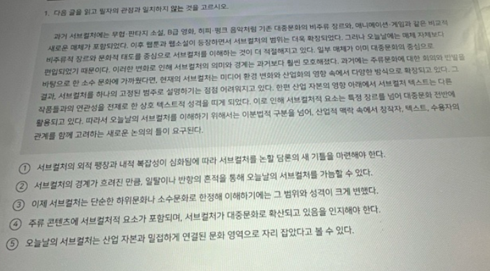
다음 글을 읽고 필자의 관점과 일치하지 않는 것을 고르시오.
과거 서브컬처에는 무협·판타지 소설, B급 영화, 히피·펑크 음악처럼 기존 대중문화의 비주류 장르와, 애니메이션·게임과 같은 비교적 새로운 매체가 포함되었다. 이후 웹툰과 웹소설이 등장하면서 서브컬처의 범위는 더욱 확장되었다. 그러나 오늘날에는 매체 자체보다 비주류적 장르와 문화적 태도를 중심으로 서브컬처를 이해하는 것이 더 적절해지고 있다. 일부 매체가 이미 대중문화의 중심으로 편입되었기 때문이다. 이러한 변화로 인해 서브컬처의 의미와 경계는 과거보다 훨씬 모호해졌다. 과거에는 주류문화에 대한 회의와 반발을 바탕으로 한 소수 문화에 가까웠다면, 현재의 서브컬처는 미디어 환경 변화와 산업화의 영향 속에서 다양한 방식으로 확장되고 있다. 그 결과, 서브컬처를 하나의 고정된 범주로 설명하기는 점점 어려워지고 있다. 한편 산업 자본의 영향 아래에서 서브컬처 텍스트는 다른 작품들과의 연관성을 전제로 한 상호 텍스트적 성격을 띠게 되었다. 이로 인해 서브컬처적 요소는 특정 장르를 넘어 대중문화 전반에 활용되고 있다. 따라서 오늘날의 서브컬처를 이해하기 위해서는 이분법적 구분을 넘어, 산업적 맥락 속에서 창작자, 텍스트, 수용자의 관계를 함께 고려하는 새로운 논의의 틀이 요구된다.
- ① 서브컬처의 외적 팽창과 내적 복잡성이 심화됨에 따라 서브컬처를 논할 담론의 새 기틀을 마련해야 한다.
- ② 서브컬처의 경계가 흐려진 만큼, 일탈이나 반항의 흔적을 통해 오늘날의 서브컬처를 가늠할 수 있다.
- ③ 이제 서브컬처는 단순한 하위문화나 소수문화로 한정해 이해하기에는 그 범위와 성격이 크게 변했다.
- ④ 주류 콘텐츠에 서브컬처적 요소가 포함되며, 서브컬처가 대중문화로 확산되고 있음을 인지해야 한다.
- ⑤ 오늘날의 서브컬처는 산업 자본과 밀접하게 연결된 문화 영역으로 자리 잡았다고 볼 수 있다.
⚡ 핵심 풀이 과정 (수식 / 표 / 과정)
과거(반발·소수문화) vs 현재(산업적 맥락·다차원 확장) 대조. ②번의 '일탈·반항'은 과거의 속성이므로 현재 관점으로 부적절.
💡 상세 해설
지문에서 과거의 서브컬처는 '주류문화에 대한 회의와 반발을 바탕으로 한 소수 문화'에 가까웠으나, 오늘날의 서브컬처는 이분법적 구분을 넘어 산업적 맥락 속에서 창작자·텍스트·수용자 관계를 함께 고려해야 한다고 제시함. 따라서 '일탈이나 반항의 흔적을 통해 오늘날의 서브컬처를 가늠할 수 있다'는 설명은 과거의 관점에 해당하여 필자의 관점과 일치하지 않음.
[1. 언어추리] 문항 2
✅ 정답
내 답안: 1
실제 정답: 1
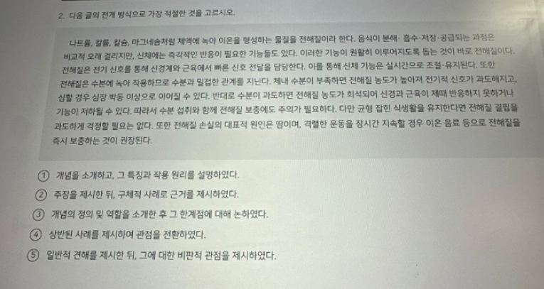
다음 글의 전개 방식으로 가장 적절한 것을 고르시오.
나트륨, 칼륨, 칼슘, 마그네슘처럼 체액에 녹아 이온을 형성하는 물질을 전해질이라 한다. 음식이 분해·흡수·저장·공급되는 과정은 비교적 오래 걸리지만, 신체에는 즉각적인 반응이 필요한 기능들도 있다. 이러한 기능이 원활히 이루어지도록 돕는 것이 바로 전해질이다. 전해질은 전기 신호를 통해 신경계와 근육에서 빠른 신호 전달을 담당한다. 이를 통해 신체 기능은 실시간으로 조절·유지된다. 또한 전해질은 수분에 녹아 작용하므로 수분과 밀접한 관계를 지닌다. 체내 수분이 부족하면 전해질 농도가 높아져 전기적 신호가 과도해지고, 심할 경우 심장 박동 이상으로 이어질 수 있다. 반대로 수분이 과도하면 전해질 농도가 희석되어 신경과 근육이 제때 반응하지 못하거나 기능이 저하될 수 있다. 따라서 수분 섭취와 함께 전해질 보충에도 주의가 필요하다. 다만 균형 잡힌 식생활을 유지한다면 전해질 결핍을 과도하게 걱정할 필요는 없다. 또한 전해질 손실의 대표적 원인은 땀이며, 격렬한 운동을 장시간 지속할 경우 이온 음료 등으로 전해질을 즉시 보충하는 것이 권장된다.
- ① 개념을 소개하고, 그 특징과 작용 원리를 설명하였다.
- ② 주장을 제시한 뒤, 구체적 사례로 근거를 제시하였다.
- ③ 개념의 정의 및 역할을 소개한 후 그 한계점에 대해 논하였다.
- ④ 상반된 사례를 제시하여 관점을 전환하였다.
- ⑤ 일반적 견해를 제시한 뒤, 그에 대한 비판적 관점을 제시하였다.
⚡ 핵심 풀이 과정 (수식 / 표 / 과정)
1문단: 전해질 정의 -> 2문단: 신경/근육 신호전달 작용원리 -> 3문단: 수분과의 상관관계 및 보충법. 개념 소개 및 작용 원리 설명 구조.
💡 상세 해설
글의 첫 부분에서 '전해질'의 정의(개념)를 소개하고, 신경계·근육 신호 전달 기능과 체내 수분 균형과의 상호작용 원리 및 보충 방법을 체계적으로 설명하고 있으므로 ①번이 가장 적절함.
[1. 언어추리] 문항 3
✅ 정답
내 답안: 3
실제 정답: 3
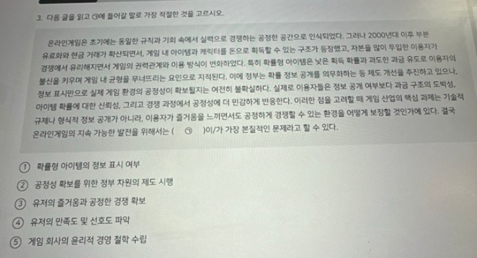
다음 글을 읽고 ㉠에 들어갈 말로 가장 적절한 것을 고르시오.
온라인게임은 초기에는 동일한 규칙과 기회 속에서 실력으로 경쟁하는 공정한 공간으로 인식되었다. 그러나 2000년대 이후 부분 유료화와 현금 거래가 확산되면서, 게임 내 아이템과 캐릭터를 돈으로 획득할 수 있는 구조가 등장했고, 자본을 많이 투입한 이용자가 경쟁에서 유리해지면서 게임의 권력관계와 이용 방식이 변화하였다. 특히 확률형 아이템은 낮은 획득 확률과 과도한 과금 유도로 이용자의 불신을 키우며 게임 내 균형을 무너뜨리는 요인으로 지적된다. 이에 정부는 확률 정보 공개를 의무화하는 등 제도 개선을 추진하고 있으나, 정보 표시만으로 실제 게임 환경의 공정성이 확보될지는 여전히 불확실하다. 실제로 이용자들은 정보 공개 여부보다 과금 구조의 도박성, 아이템 확률에 대한 신뢰성, 그리고 경쟁 과정에서 공정성에 더 민감하게 반응한다. 이러한 점을 고려할 때 게임 산업의 핵심 과제는 기술적 규제나 형식적 정보 공개가 아니라, 이용자가 즐거움을 느끼면서도 공정하게 경쟁할 수 있는 환경을 어떻게 보장할 것인가에 있다. 결국 온라인게임의 지속 가능한 발전을 위해서는 ( ㉠ )이/가 가장 본질적인 문제라고 할 수 있다.
- ① 확률형 아이템의 정보 표시 여부
- ② 공정성 확보를 위한 정부 차원의 제도 시행
- ③ 유저의 즐거움과 공정한 경쟁 확보
- ④ 유저의 만족도 및 선호도 파악
- ⑤ 게임 회사의 윤리적 경영 철학 수립
⚡ 핵심 풀이 과정 (수식 / 표 / 과정)
직전 문장 패러프레이징: '이용자의 즐거움 + 공정 경쟁 보장' -> ③ '유저의 즐거움과 공정한 경쟁 확보'.
💡 상세 해설
빈칸 바로 앞 문장에서 '게임 산업의 핵심 과제는 기술적 규제나 형식적 정보 공개가 아니라, 이용자가 즐거움을 느끼면서도 공정하게 경쟁할 수 있는 환경을 어떻게 보장할 것인가에 있다'고 명시하였으므로, ㉠에는 '유저의 즐거움과 공정한 경쟁 확보'가 들어가는 것이 가장 적절함.
[1. 언어추리] 문항 4
✅ 정답
내 답안: 1
실제 정답: 1
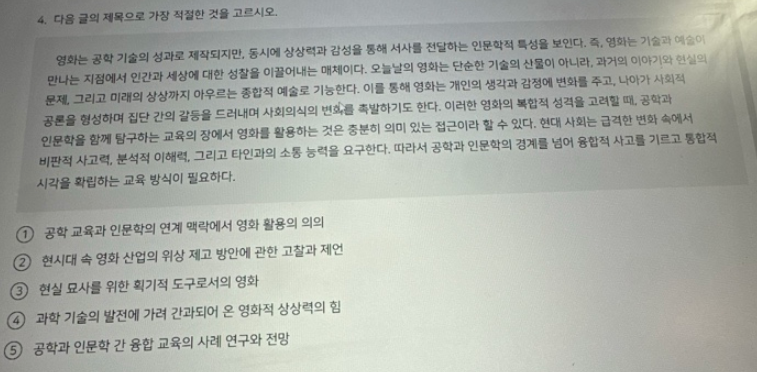
다음 글의 제목으로 가장 적절한 것을 고르시오.
영화는 공학 기술의 성과로 제작되지만, 동시에 상상력과 감성을 통해 서사를 전달하는 인문학적 특성을 보인다. 즉, 영화는 기술과 예술이 만나는 지점에서 인간과 세상에 대한 성찰을 이끌어내는 매체이다. 오늘날의 영화는 단순한 기술의 산물이 아니라, 과거의 이야기와 현실의 문제, 그리고 미래의 상상까지 아우르는 종합적 예술로 기능한다. 이를 통해 영화는 개인의 생각과 감정에 변화를 주고, 나아가 사회적 공론을 형성하며 집단 간의 갈등을 드러내어 사회의식의 변화를 촉발하기도 한다. 이러한 영화의 복합적 성격을 고려할 때, 공학과 인문학을 함께 탐구하는 교육의 장에서 영화를 활용하는 것은 충분히 의미 있는 접근이라 할 수 있다. 현대 사회는 급격한 변화 속에서 비판적 사고력, 분석적 이해력, 그리고 타인과의 소통 능력을 요구한다. 따라서 공학과 인문학의 경계를 넘어 융합적 사고를 기르고 통합적 시각을 확립하는 교육 방식이 필요하다.
- ① 공학 교육과 인문학의 연계 맥락에서 영화 활용의 의의
- ② 현시대 속 영화 산업의 위상 제고 방안에 관한 고찰과 제언
- ③ 현실 묘사를 위한 획기적 도구로서의 영화
- ④ 과학 기술의 발전에 가려 간과되어 온 영화적 상상력의 힘
- ⑤ 공학과 인문학 간 융합 교육의 사례 연구와 전망
⚡ 핵심 풀이 과정 (수식 / 표 / 과정)
핵심 키워드 조합: 공학 기술 + 인문학적 성찰 + 영화 교육 활용 의의 -> ①번.
💡 상세 해설
글의 중심 내용은 기술(공학)과 서사/감성(인문학)이 융합된 매체인 영화를 활용하여 공학과 인문학을 연계한 교육을 수행하는 것의 가치와 의의를 밝히고 있음.
[1. 언어추리] 문항 5
✅ 정답
내 답안: 1
실제 정답: 1
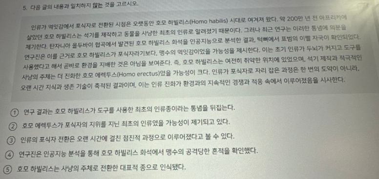
다음 글의 내용과 일치하지 않는 것을 고르시오.
인류가 먹잇감에서 포식자로 전환된 시점은 오랫동안 호모 하빌리스(Homo habilis) 시대로 여겨져 왔다. 약 200만 년 전 아프리카에 살았던 호모 하빌리스는 석기를 제작하고 동물을 사냥한 최초의 인류로 알려졌기 때문이다. 그러나 최근 연구는 이러한 통념에 의문을 제기한다. 탄자니아 올두바이 협곡에서 발견된 호모 하빌리스 화석을 인공지능으로 분석한 결과, 턱뼈에서 표범의 이빨 자국이 확인되었다. 연구진은 이를 근거로 호모 하빌리스가 포식자라기보다, 맹수의 먹잇감이었을 가능성을 제시한다. 이는 초기 인류가 두뇌가 커지고 도구를 사용했다고 해서 곧바로 환경을 지배한 것은 아님을 보여준다. 즉, 호모 하빌리스는 여전히 취약한 위치에 있었으며, 석기 제작과 적극적인 사냥의 주체는 더 진화한 호모 에렉투스(Homo erectus)였을 가능성이 크다. 인류가 포식자로 자리 잡은 과정은 한 번의 도약이 아니라, 오랜 시간 지식과 생존 기술이 축적된 결과이며, 이는 인류 진화가 환경과의 지속적인 경쟁과 적응 속에서 이루어졌음을 시사한다.
- ① 연구 결과는 호모 하빌리스가 도구를 사용한 최초의 인류종이라는 통념을 뒤집는다.
- ② 호모 에렉투스가 포식자의 지위를 지닌 최초의 인류였을 가능성이 제기되고 있다.
- ③ 인류의 포식자 전환은 오랜 시간에 걸친 점진적 과정으로 이루어졌다고 볼 수 있다.
- ④ 연구진은 인공지능 분석을 통해 호모 하빌리스 화석에서 맹수의 공격당한 흔적을 확인했다.
- ⑤ 호모 하빌리스는 사냥의 주체로 전환한 대표적 종으로 인식됐다.
⚡ 핵심 풀이 과정 (수식 / 표 / 과정)
통념의 대상: '동물을 사냥한 최초의 포식자' (O) vs '도구 사용 자체' (뒤집지 않음). ①번 불일치.
💡 상세 해설
연구 결과가 뒤집는 것은 호모 하빌리스가 '사냥을 한 최초의 포식자'라는 통념이지, '도구를 사용한 종'이라는 통념이 아님. 지문에서도 '두뇌가 커지고 도구를 사용했다고 해서 곧바로 환경을 지배한 것은 아님'이라고 하여 도구 사용 자체를 부정하지 않음.
[1. 언어추리] 문항 6
✅ 정답
내 답안: 2
실제 정답: 2
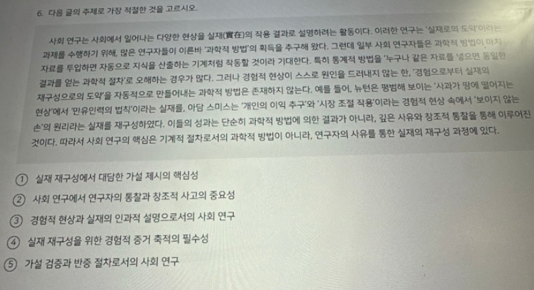
다음 글의 주제로 가장 적절한 것을 고르시오.
사회 연구는 사회에서 일어나는 다양한 현상을 실재(實在)의 작용 결과로 설명하려는 활동이다. 이러한 연구는 '실재로의 도약'이라는 과제를 수행하기 위해, 많은 연구자들이 이른바 '과학적 방법'의 획득을 추구해 왔다. 그런데 일부 사회 연구자들은 과학적 방법이 마치 자료를 투입하면 자동으로 지식을 산출하는 기계처럼 작동할 것이라 기대한다. 특히 통계적 방법을 '누구나 같은 자료를 넣으면 동일한 결과를 얻는 과학적 절차'로 오해하는 경우가 많다. 그러나 경험적 현상이 스스로 원인을 드러내지 않는 한, '경험으로부터 실재의 재구성으로의 도약'을 자동적으로 만들어내는 과학적 방법은 존재하지 않는다. 예를 들어, 뉴턴은 평범해 보이는 '사과가 땅에 떨어지는 현상'에서 '만유인력의 법칙'이라는 실재를, 아담 스미스는 '개인의 이익 추구'와 '시장 조절 작용'이라는 경험적 현상 속에서 '보이지 않는 손'의 원리라는 실재를 재구성하였다. 이들의 성과는 단순히 과학적 방법에 의한 결과가 아니라, 깊은 사유와 창조적 통찰을 통해 이루어진 것이다. 따라서 사회 연구의 핵심은 기계적 절차로서의 과학적 방법이 아니라, 연구자의 사유를 통한 실재의 재구성 과정에 있다.
- ① 실재 재구성에서 대담한 가설 제시의 핵심성
- ② 사회 연구에서 연구자의 통찰과 창조적 사고의 중요성
- ③ 경험적 현상과 실재의 인과적 설명으로서의 사회 연구
- ④ 실재 재구성을 위한 경험적 증거 축적의 필수성
- ⑤ 가설 검증과 반증 절차로서의 사회 연구
⚡ 핵심 풀이 과정 (수식 / 표 / 과정)
기계적 과학 절차(통계 등)의 한계 -> 뉴턴/아담스미스 예시 -> 연구자의 통찰/사유를 통한 실재 재구성 강조 -> ②번.
💡 상세 해설
글의 결론부('따라서 사회 연구의 핵심은 기계적 절차로서의 과학적 방법이 아니라, 연구자의 사유를 통한 실재의 재구성 과정에 있다')에 나타나 있듯 연구자의 사유와 창조적 통찰의 중요성을 강조하고 있음.
[1. 언어추리] 문항 7
✅ 정답
내 답안: 3
실제 정답: 3
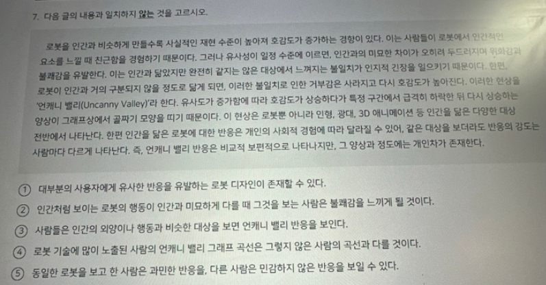
다음 글의 내용과 일치하지 않는 것을 고르시오.
로봇을 인간과 비슷하게 만들수록 사실적인 재현 수준이 높아져 호감도가 증가하는 경향이 있다. 이는 사람들이 로봇에서 인간적인 요소를 느낄 때 친근함을 경험하기 때문이다. 그러나 유사성이 일정 수준에 이르면, 인간과의 미묘한 차이가 오히려 두드러지며 위화감과 불쾌감을 유발한다. 이는 인간과 닮았지만 완전히 같지는 않은 대상에서 느껴지는 불일치가 인지적 긴장을 일으키기 때문이다. 한편, 로봇이 인간과 거의 구분되지 않을 정도로 닮게 되면, 이러한 불일치로 인한 거부감은 사라지고 다시 호감도가 높아진다. 이러한 현상을 '언캐니 밸리(Uncanny Valley)'라 한다. 유사도가 증가함에 따라 호감도가 상승하다가 특정 구간에서 급격히 하락한 뒤 다시 상승하는 양상이 그래프상에서 골짜기 모양을 띠기 때문이다. 이 현상은 로봇뿐 아니라 인형, 광대, 3D 애니메이션 등 인간을 닮은 다양한 대상 전반에서 나타난다. 한편 인간을 닮은 로봇에 대한 반응은 개인의 사회적 경험에 따라 달라질 수 있어, 같은 대상을 보더라도 반응의 강도는 사람마다 다르게 나타난다. 즉, 언캐니 밸리 반응은 비교적 보편적으로 나타나지만, 그 양상과 정도에는 개인차가 존재한다.
- ① 대부분의 사용자에게 유사한 반응을 유발하는 로봇 디자인이 존재할 수 있다.
- ② 인간처럼 보이는 로봇의 행동이 인간과 미묘하게 다를 때 그것을 보는 사람은 불쾌감을 느끼게 될 것이다.
- ③ 사람들은 인간의 외양이나 행동과 비슷한 대상을 보면 언캐니 밸리 반응을 보인다.
- ④ 로봇 기술에 많이 노출된 사람의 언캐니 밸리 그래프 곡선은 그렇지 않은 사람의 곡선과 다를 것이다.
- ⑤ 동일한 로봇을 보고 한 사람은 과민한 반응을, 다른 사람은 민감하지 않은 반응을 보일 수 있다.
⚡ 핵심 풀이 과정 (수식 / 표 / 과정)
유사도-호감도 관계: 초기 상승 -> 특정 구간 하락(골짜기) -> 완전 유사 시 재상승. 무조건 언캐니 밸리 반응을 보이는 것이 아니므로 ③번 오답.
💡 상세 해설
지문에 따르면 인간과 비슷한 대상을 볼 때 무조건 언캐니 밸리(불쾌감) 반응이 나타나는 것이 아니라, 초기에는 호감도가 상승하다가 특정 '일정 수준'의 유사성 구간에서 불쾌감이 나타나고, 거의 완벽히 닮으면 다시 호감도가 높아짐. 따라서 모든 유사한 대상에 대해 언캐니 밸리 반응을 보인다는 진술은 일치하지 않음.
[1. 언어추리] 문항 8
✅ 정답
내 답안: 1
실제 정답: 1
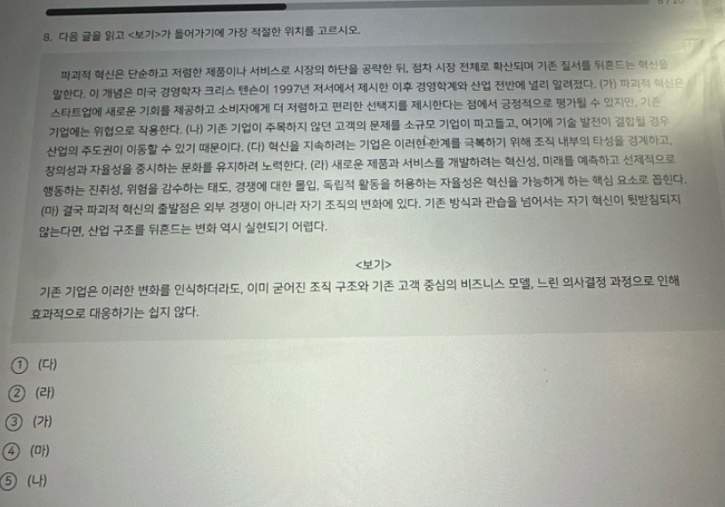
다음 글을 읽고 <보기>가 들어가기에 가장 적절한 위치를 고르시오.
<보기>
기존 기업은 이러한 변화를 인식하더라도, 이미 굳어진 조직 구조와 기존 고객 중심의 비즈니스 모델, 느린 의사결정 과정으로 인해 효과적으로 대응하기는 쉽지 않다.
파괴적 혁신은 단순하고 저렴한 제품이나 서비스로 시장의 하단을 공략한 뒤, 점차 시장 전체로 확산되며 기존 질서를 뒤흔드는 혁신을 말한다. 이 개념은 미국 경영학자 크리스 텐슨이 1997년 저서에서 제시한 이후 경영학계와 산업 전반에 널리 알려졌다. (가) 파괴적 혁신은 스타트업에 새로운 기회를 제공하고 소비자에게 더 저렴하고 편리한 선택지를 제시한다는 점에서 긍정적으로 평가될 수 있지만, 기존 기업에는 위협으로 작용한다. (나) 기존 기업이 주목하지 않던 고객의 문제를 소규모 기업이 파고들고, 여기에 기술 발전이 결합될 경우 산업의 주도권이 이동할 수 있기 때문이다. (다) 혁신을 지속하려는 기업은 이러한 한계를 극복하기 위해 조직 내부의 타성을 경계하고, 창의성과 자율성을 중시하는 문화를 유지하려 노력한다. (라) 새로운 제품과 서비스를 개발하려는 혁신성, 미래를 예측하고 선제적으로 행동하는 진취성, 위험을 감수하는 태도, 경쟁에 대한 몰입, 독립적 활동을 허용하는 자율성은 혁신을 가능하게 하는 핵심 요소로 꼽힌다. (마) 결국 파괴적 혁신의 출발점은 외부 경쟁이 아니라 자기 조직의 변화에 있다. 기존 방식과 관습을 넘어서는 자기 혁신이 뒷받침되지 않는다면, 산업 구조를 뒤흔드는 변화 역시 실현되기 어렵다.
- ① (다)
- ② (라)
- ③ (가)
- ④ (마)
- ⑤ (나)
⚡ 핵심 풀이 과정 (수식 / 표 / 과정)
<보기>의 기존 기업 대응 한계(굳어진 조직, 느린 의사결정) -> (다)의 '이러한 한계를 극복하기 위해'와 조응 -> ① (다).
💡 상세 해설
(다) 뒤 문장의 '이러한 한계를 극복하기 위해'라는 지시 표현이 <보기>의 '이미 굳어진 조직 구조... 느린 의사결정 과정으로 인해 효과적으로 대응하기는 쉽지 않다'는 한계점을 직접 가리키고 있으므로, (다) 위치에 들어가는 것이 가장 적절함.
[1. 언어추리] 문항 9
✅ 정답
내 답안: 1
실제 정답: 1
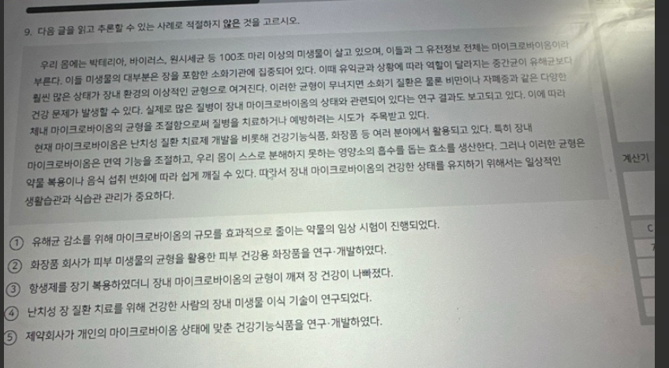
다음 글을 읽고 추론할 수 있는 사례로 적절하지 않은 것을 고르시오.
우리 몸에는 박테리아, 바이러스, 원시세균 등 100조 마리 이상의 미생물이 살고 있으며, 이들과 그 유전정보 전체는 마이크로바이옴이라 부른다. 이들 미생물의 대부분은 장을 포함한 소화기관에 집중되어 있다. 이때 유익균과 상황에 따라 역할이 달라지는 중간균이 유해균보다 훨씬 많은 상태가 장내 환경의 이상적인 균형으로 여겨진다. 이러한 균형이 무너지면 소화기 질환은 물론 비만이나 자폐증과 같은 다양한 건강 문제가 발생할 수 있다. 실제로 많은 질병이 장내 마이크로바이옴의 상태와 관련되어 있다는 연구 결과도 보고되고 있다. 이에 따라 체내 마이크로바이옴의 균형을 조절함으로써 질병을 치료하거나 예방하려는 시도가 주목받고 있다. 현재 마이크로바이옴은 난치성 질환 치료제 개발을 비롯해 건강기능식품, 화장품 등 여러 분야에서 활용되고 있다. 특히 장내 마이크로바이옴은 면역 기능을 조절하고, 우리 몸이 스스로 분해하지 못하는 영양소의 흡수를 돕는 효소를 생산한다. 그러나 이러한 균형은 약물 복용이나 음식 섭취 변화에 따라 쉽게 깨질 수 있다. 따라서 장내 마이크로바이옴의 건강한 상태를 유지하기 위해서는 일상적인 생활습관과 식습관 관리가 중요하다.
- ① 유해균 감소를 위해 마이크로바이옴의 규모를 효과적으로 줄이는 약물의 임상 시험이 진행되었다.
- ② 화장품 회사가 피부 미생물의 균형을 활용한 피부 건강용 화장품을 연구·개발하였다.
- ③ 항생제를 장기 복용하였더니 장내 마이크로바이옴의 균형이 깨져 장 건강이 나빠졌다.
- ④ 난치성 장 질환 치료를 위해 건강한 사람의 장내 미생물 이식 기술이 연구되었다.
- ⑤ 제약회사가 개인의 마이크로바이옴 상태에 맞춘 건강기능식품을 연구·개발하였다.
⚡ 핵심 풀이 과정 (수식 / 표 / 과정)
핵심: '균형 조절' vs ① '마이크로바이옴 규모 축소' (유익균 파괴 초래). 추론 오류.
💡 상세 해설
마이크로바이옴의 핵심은 미생물 군집 전체의 '균형(유익균/유해균 비)'을 조절하는 것이지, 마이크로바이옴의 전체 규모를 줄이는 것이 아님. 전체 규모를 줄이면 필수적인 유익균과 효소 생산 미생물도 함께 줄어들게 됨.
[1. 언어추리] 문항 10
✅ 정답
내 답안: 5
실제 정답: 5
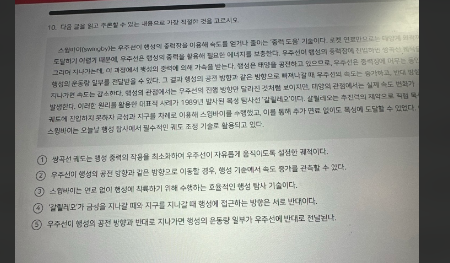
다음 글을 읽고 추론할 수 있는 내용으로 가장 적절한 것을 고르시오.
스윙바이(swingby)는 우주선이 행성의 중력장을 이용해 속도를 얻거나 줄이는 '중력 도움' 기술이다. 로켓 연료만으로는 태양계 외곽까지 도달하기 어렵기 때문에, 우주선은 행성의 중력을 활용해 필요한 에너지를 보충한다. 우주선이 행성의 중력장에 진입하면 쌍곡선 궤도를 그리며 지나가는데, 이 과정에서 행성의 중력에 의해 가속을 받는다. 행성은 태양을 공전하고 있으므로, 우주선은 중력장에 머무는 동안 행성의 운동량 일부를 전달받을 수 있다. 그 결과 행성의 공전 방향과 같은 방향으로 빠져나갈 때 우주선의 속도는 증가하고, 반대 방향으로 지나가면 속도는 감소한다. 행성의 관점에서는 우주선의 진행 방향만 달라진 것처럼 보이지만, 태양의 관점에서는 실제 속도 변화가 발생한다. 이러한 원리를 활용한 대표적 사례가 1989년 발사된 목성 탐사선 '갈릴레오'이다. 갈릴레오는 추진력의 제약으로 직접 목성 궤도에 진입하지 못하자 금성과 지구를 차례로 이용해 스윙바이를 수행했고, 이를 통해 추가 연료 없이도 목성에 도달할 수 있었다. 스윙바이는 오늘날 행성 탐사에서 필수적인 궤도 조정 기술로 활용되고 있다.
- ① 쌍곡선 궤도는 행성 중력의 작용을 최소화하여 우주선이 자유롭게 움직이도록 설정한 궤적이다.
- ② 우주선이 행성의 공전 방향과 같은 방향으로 이동할 경우, 행성 기준에서 속도 증가를 관측할 수 있다.
- ③ 스윙바이는 연료 없이 행성에 착륙하기 위해 수행하는 효율적인 행성 탐사 기술이다.
- ④ '갈릴레오'가 금성을 지나갈 때와 지구를 지나갈 때 행성에 접근하는 방향은 서로 반대이다.
- ⑤ 우주선이 행성의 공전 방향과 반대로 지나가면 행성의 운동량 일부가 우주선에 반대로 전달된다.
⚡ 핵심 풀이 과정 (수식 / 표 / 과정)
동일 방향 통과: +운동량(가속) vs 반대 방향 통과: -운동량(감속). ⑤번 정확히 일치.
💡 상세 해설
지문에서 우주선이 '공전 방향과 같은 방향으로 빠져나갈 때 우주선 속도 증가(운동량 전달받음)', '반대 방향으로 지나가면 속도는 감소'한다고 설명함. 속도 감소는 운동량이 감속 방향(반대)으로 전달됨을 의미하므로 ⑤번이 가장 적절한 추론임.
[1. 언어추리] 문항 11
✅ 정답
내 답안: 1
실제 정답: 1
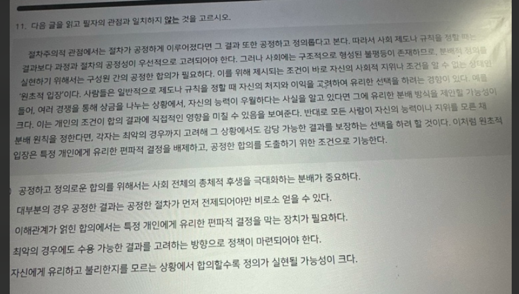
다음 글을 읽고 필자의 관점과 일치하지 않는 것을 고르시오.
절차주의적 관점에서는 절차가 공정하게 이루어졌다면 그 결과 또한 공정하고 정의롭다고 본다. 따라서 사회 제도나 규칙을 정할 때는 결과보다 과정과 절차의 공정성이 우선적으로 고려되어야 한다. 그러나 사회에는 구조적으로 형성된 불평등이 존재하므로, 분배적 정의를 실현하기 위해서는 구성원 간의 공정한 합의가 필요하다. 이를 위해 제시되는 조건이 바로 자신의 사회적 지위나 조건을 알 수 없는 상태인 '원초적 입장'이다. 사람들은 일반적으로 제도나 규칙을 정할 때 자신의 처지와 이익을 고려하여 유리한 선택을 하려는 경향이 있다. 예를 들어, 여러 경쟁을 통해 상금을 나누는 상황에서, 자신의 능력이 우월하다는 사실을 알고 있다면 그에 유리한 분배 방식을 제안할 가능성이 크다. 이는 개인의 조건이 합의 결과에 직접적인 영향을 미칠 수 있음을 보여준다. 반대로 모든 사람이 자신의 능력이나 지위를 모른 채 분배 원칙을 정한다면, 각자는 최악의 경우까지 고려해 그 상황에서도 감당 가능한 결과를 보장하는 선택을 하려 할 것이다. 이처럼 원초적 입장은 특정 개인에게 유리한 편파적 결정을 배제하고, 공정한 합의를 도출하기 위한 조건으로 기능한다.
- ① 공정하고 정의로운 합의를 위해서는 사회 전체의 총체적 후생을 극대화하는 분배가 중요하다.
- ② 대부분의 경우 공정한 결과는 공정한 절차가 먼저 전제되어야만 비로소 얻을 수 있다.
- ③ 이해관계가 얽힌 합의에서는 특정 개인에게 유리한 편파적 결정을 막는 장치가 필요하다.
- ④ 최악의 경우에도 수용 가능한 결과를 고려하는 방향으로 정책이 마련되어야 한다.
- ⑤ 자신에게 유리하고 불리한지를 모르는 상황에서 합의할수록 정의가 실현될 가능성이 크다.
⚡ 핵심 풀이 과정 (수식 / 표 / 과정)
롤스 정의론(절차적 공정, 최소수혜자 보호) vs 공리주의(총 효용 극대화). ①번은 공리주의 입장이므로 불일치.
💡 상세 해설
본문은 롤스의 '원초적 입장'과 공정한 절차를 통한 분배 정의(최악의 상황을 보장하는 방식)를 설명함. '사회 전체의 총체적 후생을 극대화'하는 것은 공리주의적 분배관으로, 본문의 절차주의적 정의론 및 최악의 경우 고려 관점과 정면으로 배치됨.
[1. 언어추리] 문항 12
✅ 정답
내 답안: 1
실제 정답: 1
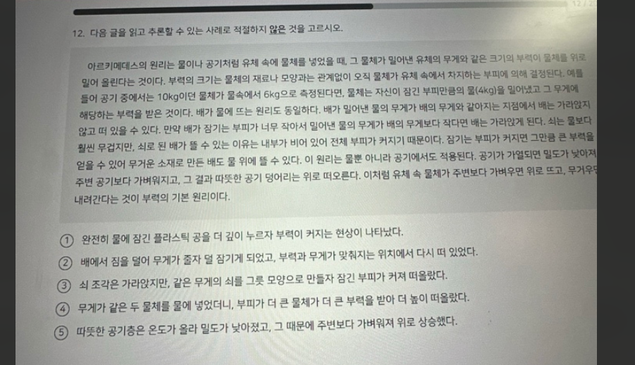
다음 글을 읽고 추론할 수 있는 사례로 적절하지 않은 것을 고르시오.
아르키메데스의 원리는 물이나 공기처럼 유체 속에 물체를 넣었을 때, 그 물체가 밀어낸 유체의 무게와 같은 크기의 부력이 물체를 위로 밀어 올린다는 것이다. 부력의 크기는 물체의 재료나 모양과는 관계없이 오직 물체가 유체 속에서 차지하는 부피에 의해 결정된다. 예를 들어 공기 중에서는 10kg이던 물체가 물속에서 6kg으로 측정된다면, 물체는 자신이 잠긴 부피만큼의 물(4kg)을 밀어냈고 그 무게에 해당하는 부력을 받은 것이다. 배가 물에 뜨는 원리도 동일하다. 배가 밀어낸 물의 무게가 배의 무게와 같아지는 지점에서 배는 가라앉지 않고 떠 있을 수 있다. 만약 배가 잠기는 부피가 너무 작아서 밀어낸 물의 무게가 배의 무게보다 작다면 배는 가라앉게 된다. 쇠는 물보다 훨씬 무겁지만, 쇠로 된 배가 뜰 수 있는 이유는 내부가 비어 있어 전체 부피가 커지기 때문이다. 잠기는 부피가 커지면 그만큼 큰 부력을 얻을 수 있어 무거운 소재로 만든 배도 물 위에 뜰 수 있다. 이 원리는 물뿐 아니라 공기에서도 적용된다. 공기가 가열되면 밀도가 낮아져 주변 공기보다 가벼워지고, 그 결과 따뜻한 공기 덩어리는 위로 떠오른다. 이처럼 유체 속 물체가 주변보다 가벼우면 위로 뜨고, 무거우면 내려간다는 것이 부력의 기본 원리이다.
- ① 완전히 물에 잠긴 플라스틱 공을 더 깊이 누르자 부력이 커지는 현상이 나타났다.
- ② 배에서 짐을 덜어 무게가 줄자 덜 잠기게 되었고, 부력과 무게가 맞춰지는 위치에서 다시 떠 있었다.
- ③ 쇠 조각은 가라앉지만, 같은 무게의 쇠를 그릇 모양으로 만들자 잠긴 부피가 커져 떠올랐다.
- ④ 무게가 같은 두 물체를 물에 넣었더니, 부피가 더 큰 물체가 더 큰 부력을 받아 더 높이 떠올랐다.
- ⑤ 따뜻한 공기층은 온도가 올라 밀도가 낮아졌고, 그 때문에 주변보다 가벼워져 위로 상승했다.
⚡ 핵심 풀이 과정 (수식 / 표 / 과정)
부력 = 유체 밀도 * 잠긴 부피 * g. 완전 침수 상태에서 깊이와 무관하게 부피 불변 -> 부력 일정. ①번 오류.
💡 상세 해설
아르키메데스 원리에 따르면 부력은 '물체가 유체 속에서 차지하는 부피(밀어낸 유체의 부피)'에 의해 결정됨. 이미 '완전히 물에 잠긴' 물체는 더 깊이 눌러도 잠긴 부피가 변하지 않으므로 부력이 더 커지지 않음.
[1. 언어추리] 문항 13
⏭️ SKIP
내 답안: X
실제 정답: SKIP
미기재 문제 (사용자 미응시/문제 없음)
본 문제는 원본 시험지에서 문제 이미지가 제공되지 않았으며, 사용자가 '안품'으로 표기하여 미응시(X) 처리되었습니다.
⚡ 핵심 풀이 과정 (수식 / 표 / 과정)
SKIP (이미지 미제공 및 미응시)
💡 상세 해설
문제 이미지가 존재하지 않으며, 사용자가 문제를 풀지 않고 넘어감(13. 안품). 강제로 답을 도출하지 않고 규정에 따라 SKIP 처리함.
[1. 언어추리] 문항 14
✅ 정답
내 답안: 2
실제 정답: 2
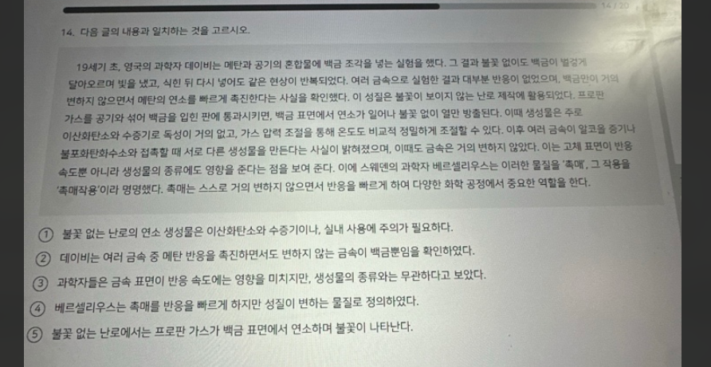
다음 글의 내용과 일치하는 것을 고르시오.
19세기 초, 영국의 과학자 데이비는 메탄과 공기의 혼합물에 백금 조각을 넣는 실험을 했다. 그 결과 불꽃 없이도 백금이 벌겋게 달아오르며 빛을 냈고, 식힌 뒤 다시 넣어도 같은 현상이 반복되었다. 여러 금속으로 실험한 결과 대부분 반응이 없었으며, 백금만이 거의 변하지 않으면서 메탄의 연소를 빠르게 촉진한다는 사실을 확인했다. 이 성질은 불꽃이 보이지 않는 난로 제작에 활용되었다. 프로판 가스를 공기와 섞어 백금을 입힌 판에 통과시키면, 백금 표면에서 연소가 일어나 불꽃 없이 열만 방출된다. 이때 생성물은 주로 이산화탄소와 수증기로 독성이 거의 없고, 가스 압력 조절을 통해 온도도 비교적 정밀하게 조절할 수 있다. 이후 여러 금속이 알코올 증기나 불포화탄화수소와 접촉할 때 서로 다른 생성물을 만든다는 사실이 밝혀졌으며, 이때도 금속은 거의 변하지 않았다. 이는 고체 표면이 반응 속도뿐 아니라 생성물의 종류에도 영향을 준다는 점을 보여 준다. 이에 스웨덴의 과학자 베르셀리우스는 이러한 물질을 '촉매', 그 작용을 '촉매작용'이라 명명했다. 촉매는 스스로 거의 변하지 않으면서 반응을 빠르게 하여 다양한 화학 공정에서 중요한 역할을 한다.
- ① 불꽃 없는 난로의 연소 생성물은 이산화탄소와 수증기이나, 실내 사용에 주의가 필요하다.
- ② 데이비는 여러 금속 중 메탄 반응을 촉진하면서도 변하지 않는 금속이 백금뿐임을 확인하였다.
- ③ 과학자들은 금속 표면이 반응 속도에는 영향을 미치지만, 생성물의 종류와는 무관하다고 보았다.
- ④ 베르셀리우스는 촉매를 반응을 빠르게 하지만 성질이 변하는 물질로 정의하였다.
- ⑤ 불꽃 없는 난로에서는 프로판 가스가 백금 표면에서 연소하며 불꽃이 나타난다.
⚡ 핵심 풀이 과정 (수식 / 표 / 과정)
지문 3행: '여러 금속... 대부분 반응 X, 백금만이 거의 변하지 않으면서 연소 촉진' -> ②번과 100% 일치.
💡 상세 해설
지문에서 '여러 금속으로 실험한 결과 대부분 반응이 없었으며, 백금만이 거의 변하지 않으면서 메탄의 연소를 빠르게 촉진한다는 사실을 확인했다'고 명시되어 있으므로 ②번이 정확히 일치함.
[1. 언어추리] 문항 15
✅ 정답
내 답안: 4
실제 정답: 4
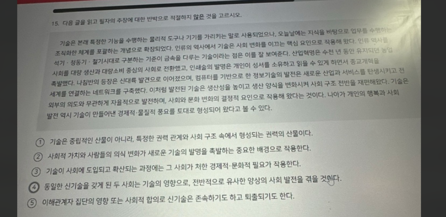
다음 글을 읽고 필자의 주장에 대한 반박으로 적절하지 않은 것을 고르시오.
기술은 본래 특정한 기능을 수행하는 물리적 도구나 기기를 가리키는 말로 사용되었으나, 오늘날에는 지식을 바탕으로 업무를 수행하는 조직화한 체계를 포괄하는 개념으로 확장되었다. 인류의 역사에서 기술은 사회 변화를 이끄는 핵심 요인으로 작용해 왔다. 인류 역사를 석기·청동기·철기시대로 구분하는 기준이 금속을 다루는 기술이라는 점은 이를 잘 보여준다. 산업혁명은 수천 년 동안 유지되던 농업 사회를 대량 생산과 대량소비 중심의 사회로 전환했고, 인쇄술의 발명은 개인이 성서를 소유하고 읽을 수 있게 하면서 종교개혁을 촉발했다. 나침반의 등장은 신대륙 발견으로 이어졌으며, 컴퓨터를 기반으로 한 정보기술의 발전은 새로운 산업과 서비스를 탄생시키고 전 세계를 연결하는 네트워크를 구축했다. 이처럼 발전된 기술은 생산성을 높이고 생산 양식을 변화시켜 사회 구조 전반을 재편해왔다. 기술은 외부의 의도와 무관하게 자율적으로 발전하며, 사회와 문화 변화의 결정적 요인으로 작용해 왔다는 것이다. 나아가 개인의 행복과 사회 발전 역시 기술이 만들어낸 경제적·물질적 풍요를 토대로 형성되어 왔다고 볼 수 있다.
- ① 기술은 중립적인 산물이 아니라, 특정한 권력 관계와 사회 구조 속에서 형성되는 권력의 산물이다.
- ② 사회적 가치와 사람들의 의식 변화가 새로운 기술의 발명을 촉발하는 중요한 배경으로 작용한다.
- ③ 기술이 사회에 도입되고 확산되는 과정에는 그 사회가 처한 경제적·문화적 필요가 작용한다.
- ④ 동일한 신기술을 갖게 된 두 사회는 기술의 영향으로, 전반적으로 유사한 양상의 사회 발전을 겪을 것이다.
- ⑤ 이해관계자 집단의 영향 또는 사회적 합의로 신기술은 존속하기도 하고 퇴출되기도 한다.
⚡ 핵심 풀이 과정 (수식 / 표 / 과정)
주장: 기술이 사회를 결정 (기술결정론). 반박: 사회가 기술을 결정 (사회구성론). ④번은 주장을 지지하는 내용.
💡 상세 해설
필자는 '기술결정론(기술이 사회 변화와 발전을 결정한다)'을 주장함. 이에 대한 반박은 사회·문화적 요인이 기술을 통제/결정한다는 입장이어야 함. ④번은 '기술의 영향으로 유사한 사회 발전을 겪을 것'이라며 필자의 기술결정론을 옹호/지지하는 진술이므로 반박으로 부적절함.
[1. 언어추리] 문항 16
✅ 정답
내 답안: 1
실제 정답: 1
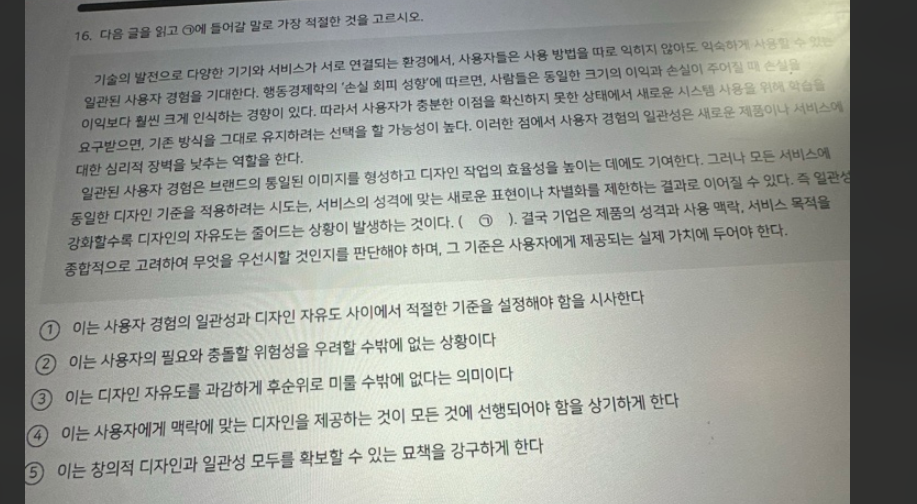
다음 글을 읽고 ㉠에 들어갈 말로 가장 적절한 것을 고르시오.
기술의 발전으로 다양한 기기와 서비스가 서로 연결되는 환경에서, 사용자들은 사용 방법을 따로 익히지 않아도 익숙하게 사용할 수 있는 일관된 사용자 경험을 기대한다. 행동경제학의 '손실 회피 성향'에 따르면, 사람들은 동일한 크기의 이익과 손실이 주어질 때 손실을 이익보다 훨씬 크게 인식하는 경향이 있다. 따라서 사용자가 충분한 이점을 확신하지 못한 상태에서 새로운 시스템 사용을 위해 학습을 요구받으면, 기존 방식을 그대로 유지하려는 선택을 할 가능성이 높다. 이러한 점에서 사용자 경험의 일관성은 새로운 제품이나 서비스에 대한 심리적 장벽을 낮추는 역할을 한다. 일관된 사용자 경험은 브랜드의 통일된 이미지를 형성하고 디자인 작업의 효율성을 높이는 데에도 기여한다. 그러나 모든 서비스에 동일한 디자인 기준을 적용하려는 시도는, 서비스의 성격에 맞는 새로운 표현이나 차별화를 제한하는 결과로 이어질 수 있다. 즉 일관성을 강화할수록 디자인의 자유도는 줄어드는 상황이 발생하는 것이다. ( ㉠ ). 결국 기업은 제품의 성격과 사용 맥락, 서비스 목적을 종합적으로 고려하여 무엇을 우선시할 것인지를 판단해야 하며, 그 기준은 사용자에게 제공되는 실제 가치에 두어야 한다.
- ① 이는 사용자 경험의 일관성과 디자인 자유도 사이에서 적절한 기준을 설정해야 함을 시사한다
- ② 이는 사용자의 필요와 충돌할 위험성을 우려할 수밖에 없는 상황이다
- ③ 이는 디자인 자유도를 과감하게 후순위로 미룰 수밖에 없다는 의미이다
- ④ 이는 사용자에게 맥락에 맞는 디자인을 제공하는 것이 모든 것에 선행되어야 함을 상기하게 한다
- ⑤ 이는 창의적 디자인과 일관성 모두를 확보할 수 있는 묘책을 강구하게 한다
⚡ 핵심 풀이 과정 (수식 / 표 / 과정)
앞: 일관성 vs 자유도 트레이드오프 -> 뒤: 종합 고려 우선순위 판단 -> ㉠: 둘 사이 적절한 기준 설정 시사.
💡 상세 해설
앞 문장에서 '일관성 강화 -> 디자인 자유도 감소'라는 상충 관계를 서술하고, 뒷 문장에서 기업이 '무엇을 우선시할지 종합적으로 판단해야 한다'고 결론짓고 있으므로, ㉠에는 일관성과 자유도 사이에서 적절한 기준 설정의 필요성을 시사하는 ①번이 가장 적절함.
[1. 언어추리] 문항 17
✅ 정답
내 답안: 5
실제 정답: 5
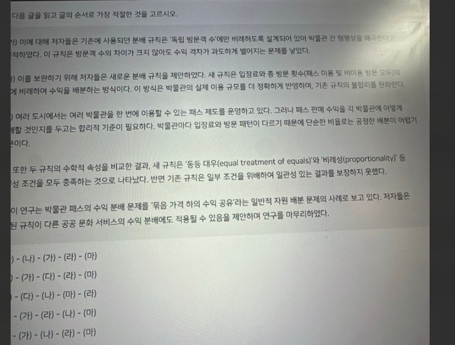
다음 글을 읽고 글의 순서로 가장 적절한 것을 고르시오.
(가) 이에 대해 저자들은 기존에 사용되던 분배 규칙은 '독립 방문객 수'에만 비례하도록 설계되어 있어 박물관 간 형평성을 왜곡한다고 지적하였다. 이 규칙은 방문객 수의 차이가 크지 않아도 수익 격차가 과도하게 벌어지는 문제를 낳았다.
(나) 이를 보완하기 위해 저자들은 새로운 분배 규칙을 제안하였다. 새 규칙은 입장료와 총 방문 횟수(패스 이용 및 비이용 방문 모두)의 비에 비례하여 수익을 배분하는 방식이다. 이 방식은 박물관의 실제 이용 규모를 더 정확하게 반영하며, 기존 규칙의 불합리를 완화한다.
(다) 여러 도시에서는 여러 박물관을 한 번에 이용할 수 있는 패스 제도를 운영하고 있다. 그러나 패스 판매 수익을 각 박물관에 어떻게 배분할 것인지를 두고는 합리적 기준이 필요하다. 박물관마다 입장료와 방문 패턴이 다르기 때문에 단순한 비율로는 공정한 배분이 어렵기 때문이다.
(라) 또한 두 규칙의 수학적 속성을 비교한 결과, 새 규칙은 '동등 대우(equal treatment of equals)'와 '비례성(proportionality)' 등 일관성 조건을 모두 충족하는 것으로 나타났다. 반면 기존 규칙은 일부 조건을 위배하여 일관성 있는 결과를 보장하지 못했다.
(마) 이 연구는 박물관 패스의 수익 분배 문제를 '묶음 가격 하의 수익 공유'라는 일반적 자원 배분 문제의 사례로 보고 있다. 저자들은 제안된 규칙이 다른 공공 문화 서비스의 수익 분배에도 적용될 수 있음을 제안하며 연구를 마무리하였다.
- ① (다) - (나) - (가) - (라) - (마)
- ② (다) - (가) - (다) - (라) - (마)
- ③ (다) - (나) - (마) - (라)
- ④ (다) - (가) - (라) - (나) - (마)
- ⑤ (다) - (가) - (나) - (라) - (마)
⚡ 핵심 풀이 과정 (수식 / 표 / 과정)
(다) 문제제기 -> (가) 기존 규칙 비판 -> (나) 새 규칙 제안 -> (라) 두 규칙 비교 검증 -> (마) 의의 및 결론. ⑤번.
💡 상세 해설
(다) 도입: 박물관 패스 수익 분배의 문제점 제기 -> (가) 이에 대해 기존 분배 규칙의 불합리 지적 -> (나) 이를 보완하는 새 규칙 제안 -> (라) 또한 두 규칙의 수학적 속성 비교 검증 -> (마) 연구의 일반화 및 마무리. 올바른 순서는 (다)-(가)-(나)-(라)-(마)임.
[1. 언어추리] 문항 18
✅ 정답
내 답안: 1
실제 정답: 1
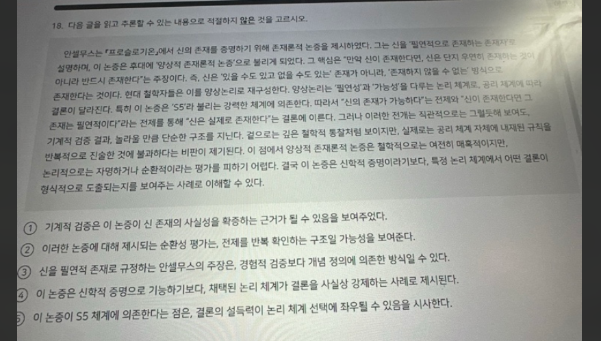
다음 글을 읽고 추론할 수 있는 내용으로 적절하지 않은 것을 고르시오.
안셀무스는 『프로슬로기온』에서 신의 존재를 증명하기 위해 존재론적 논증을 제시하였다. 그는 신을 '필연적으로 존재하는 존재자'로 설명하며, 이 논증은 후대에 '양상적 존재론적 논증'으로 불리게 되었다. 그 핵심은 "만약 신이 존재한다면, 신은 단지 우연히 존재하는 것이 아니라 반드시 존재한다"는 주장이다. 즉, 신은 '있을 수도 있고 없을 수도 있는' 존재가 아니라, '존재하지 않을 수 없는' 방식으로 존재한다는 것이다. 현대 철학자들은 이를 양상논리로 재구성한다. 양상논리는 '필연성'과 '가능성'을 다루는 논리 체계로, 공리 체계에 따라 결론이 달라진다. 특히 이 논증은 'S5'라 불리는 강력한 체계에 의존한다. 따라서 "신의 존재가 가능하다"는 전제와 "신이 존재한다면 그 존재는 필연적이다"라는 전제를 통해 "신은 실제로 존재한다"는 결론에 이른다. 그러나 이러한 전개는 직관적으로는 그럴듯해 보여도, 기계적 검증 결과, 놀라울 만큼 단순한 구조를 지닌다. 겉으로는 깊은 철학적 통찰처럼 보이지만, 실제로는 공리 체계 자체에 내재된 규칙을 반복적으로 진술한 것에 불과하다는 비판이 제기된다. 이 점에서 양상적 존재론적 논증은 철학적으로는 여전히 매혹적이지만, 논리적으로는 자명하거나 순환적이라는 평가를 피하기 어렵다. 결국 이 논증은 신학적 증명이라기보다, 특정 논리 체계에서 어떤 결론이 형식적으로 도출되는지를 보여주는 사례로 이해할 수 있다.
- ① 기계적 검증은 이 논증이 신 존재의 사실성을 확증하는 근거가 될 수 있음을 보여주었다.
- ② 이러한 논증에 대해 제시되는 순환성 평가는, 전제를 반복 확인하는 구조일 가능성을 보여준다.
- ③ 신을 필연적 존재로 규정하는 안셀무스의 주장은, 경험적 검증보다 개념 정의에 의존한 방식일 수 있다.
- ④ 이 논증은 신학적 증명으로 기능하기보다, 채택된 논리 체계가 결론을 사실상 강제하는 사례로 제시된다.
- ⑤ 이 논증이 S5 체계에 의존한다는 점은, 결론의 설득력이 논리 체계 선택에 좌우될 수 있음을 시사한다.
⚡ 핵심 풀이 과정 (수식 / 표 / 과정)
본문: '공리 체계 내 규칙 반복 진술 불과', '순환적 평가'. 사실성 확증 X -> ①번 불일치.
💡 상세 해설
지문에서 기계적 검증 결과 '공리 체계 자체에 내재된 규칙을 반복적으로 진술한 것에 불과하다', '자명하거나 순환적이라는 평가를 피하기 어렵다', '신학적 증명이라기보다 특정 논리 체계에서 결론이 형식적으로 도출되는 사례'라고 서술함. 따라서 신 존재의 사실성을 확증하는 근거가 되었다는 ①번은 정반대 서술임.
[1. 언어추리] 문항 19
✅ 정답
내 답안: 4
실제 정답: 4
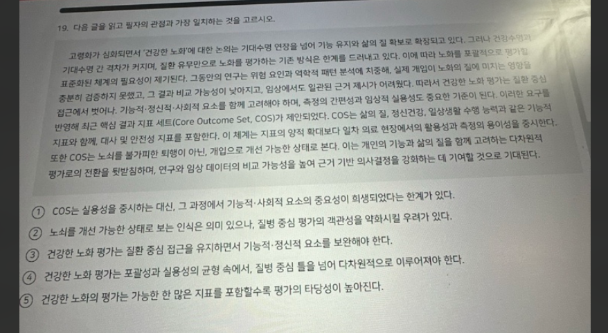
다음 글을 읽고 필자의 관점과 가장 일치하는 것을 고르시오.
고령화가 심화되면서 '건강한 노화'에 대한 논의는 기대수명 연장을 넘어 기능 유지와 삶의 질 확보로 확장되고 있다. 그러나 건강수명과 기대수명 간 격차가 커지며, 질환 유무만으로 노화를 평가하는 기존 방식은 한계를 드러내고 있다. 이에 따라 노화를 포괄적으로 평가할 표준화된 체계의 필요성이 제기된다. 그동안의 연구는 위험 요인과 역학적 패턴 분석에 치중해, 실제 개입이 노화의 질에 미치는 영향을 충분히 검증하지 못했고, 그 결과 비교 가능성이 낮아지고, 임상에서도 일관된 근거 제시가 어려웠다. 따라서 건강한 노화 평가는 질환 중심 접근에서 벗어나, 기능적·정신적·사회적 요소를 함께 고려해야 하며, 측정의 간편성과 임상적 실용성도 중요한 기준이 된다. 이러한 요구를 반영해 최근 핵심 결과 지표 세트(Core Outcome Set, COS)가 제안되었다. COS는 삶의 질, 정신건강, 일상생활 수행 능력과 같은 기능적 지표와 함께, 대사 및 안전성 지표를 포함한다. 이 체계는 지표의 양적 확대보다 일차 의료 현장에서의 활용성과 측정의 용이성을 중시한다. 또한 COS는 노쇠를 불가피한 퇴행이 아닌, 개입으로 개선 가능한 상태로 본다. 이는 개인의 기능과 삶의 질을 함께 고려하는 다차원적 평가로의 전환을 뒷받침하며, 연구와 임상 데이터의 비교 가능성을 높여 근거 기반 의사결정을 강화하는 데 기여할 것으로 기대된다.
- ① COS는 실용성을 중시하는 대신, 그 과정에서 기능적·사회적 요소의 중요성이 희생되었다는 한계가 있다.
- ② 노쇠를 개선 가능한 상태로 보는 인식은 의미 있으나, 질병 중심 평가의 객관성을 약화시킬 우려가 있다.
- ③ 건강한 노화 평가는 질환 중심 접근을 유지하면서 기능적·정신적 요소를 보완해야 한다.
- ④ 건강한 노화 평가는 포괄성과 실용성의 균형 속에서, 질병 중심 틀을 넘어 다차원적으로 이루어져야 한다.
- ⑤ 건강한 노화의 평가는 가능한 한 많은 지표를 포함할수록 평가의 타당성이 높아진다.
⚡ 핵심 풀이 과정 (수식 / 표 / 과정)
핵심 명제: '질병 중심 탈피 + 기능/삶의질 다차원 평가 + 현장 실용성 균형' -> ④번.
💡 상세 해설
지문에서 기존의 질환 중심 접근에서 벗어나 기능적·정신적·사회적 요소를 아우르는 다차원적 평가를 지향하며, 동시에 의료 현장에서의 간편성과 실용성을 중시하는 COS 체계를 긍정적으로 평가하고 있음. 따라서 ④번이 필자의 관점과 정확히 일치함.
[1. 언어추리] 문항 20
✅ 정답
내 답안: 5
실제 정답: 5
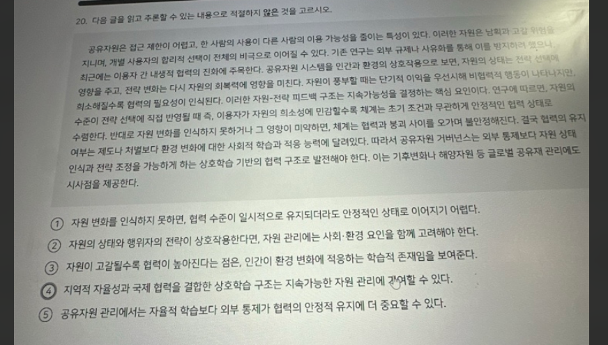
다음 글을 읽고 추론할 수 있는 내용으로 적절하지 않은 것을 고르시오.
공유자원은 접근 제한이 어렵고, 한 사람의 사용이 다른 사람의 이용 가능성을 줄이는 특성이 있다. 이러한 자원은 남획과 고갈 위험을 지니며, 개별 사용자의 합리적 선택이 전체의 비극으로 이어질 수 있다. 기존 연구는 외부 규제나 사유화를 통해 이를 방지하려 했으나, 최근에는 이용자 간 내생적 협력의 진화에 주목한다. 공유자원 시스템을 인간과 환경의 상호작용으로 보면, 자원의 상태는 전략 선택에 영향을 주고, 전략 변화는 다시 자원의 회복력에 영향을 미친다. 자원이 풍부할 때는 단기적 이익을 우선시해 비협력적 행동이 나타나지만, 희소해질수록 협력의 필요성이 인식된다. 이러한 자원-전략 피드백 구조는 지속가능성을 결정하는 핵심 요인이다. 연구에 따르면, 자원의 수준이 전략 선택에 직접 반영될 때 즉, 이용자가 자원의 희소성에 민감할수록 체계는 초기 조건과 무관하게 안정적인 협력 상태로 수렴한다. 반대로 자원 변화를 인식하지 못하거나 그 영향이 미약하면, 체계는 협력과 붕괴 사이를 오가며 불안정해진다. 결국 협력의 유지 여부는 제도나 처벌보다 환경 변화에 대한 사회적 학습과 적응 능력에 달려있다. 따라서 공유자원 거버넌스는 외부 통제보다 자원 상태 인식과 전략 조정을 가능하게 하는 상호학습 기반의 협력 구조로 발전해야 한다. 이는 기후변화나 해양자원 등 글로벌 공유재 관리에도 시사점을 제공한다.
- ① 자원 변화를 인식하지 못하면, 협력 수준이 일시적으로 유지되더라도 안정적인 상태로 이어지기 어렵다.
- ② 자원의 상태와 행위자의 전략이 상호작용한다면, 자원 관리에는 사회·환경 요인을 함께 고려해야 한다.
- ③ 자원이 고갈될수록 협력이 높아진다는 점은, 인간이 환경 변화에 적응하는 학습적 존재임을 보여준다.
- ④ 지역적 자율성과 국제 협력을 결합한 상호학습 구조는 지속가능한 자원 관리에 기여할 수 있다.
- ⑤ 공유자원 관리에서는 자율적 학습보다 외부 통제가 협력의 안정적 유지에 더 중요할 수 있다.
⚡ 핵심 풀이 과정 (수식 / 표 / 과정)
본문: '외부 통제보다 자율적 상호학습 기반 협력 중요' -> ⑤번(외부 통제가 더 중요) 정반대 오답.
💡 상세 해설
지문 마지막 문단에서 '협력의 유지 여부는 제도나 처벌보다 환경 변화에 대한 사회적 학습과 적응 능력에 달려있다. 따라서 공유자원 거버넌스는 외부 통제보다... 상호학습 기반의 협력 구조로 발전해야 한다'고 명시함. 외부 통제가 더 중요하다고 한 ⑤번은 본문과 정반대임.
2. 자료해석
도표 및 수치 자료 분석 (20문항)
[2. 자료해석] 문항 1
✅ 정답
내 답안: 5
실제 정답: 5
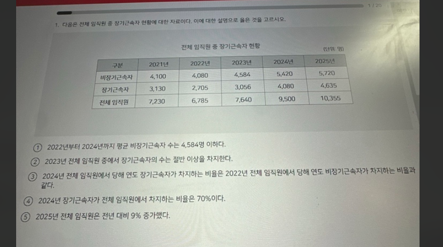
다음은 전체 임직원 중 장기근속자 현황에 대한 자료이다. 이에 대한 설명으로 옳은 것을 고르시오.
| 구분 | 2021년 | 2022년 | 2023년 | 2024년 | 2025년 | | :--- | :---: | :---: | :---: | :---: | :---: | | 비장기근속자 | 4,100 | 4,080 | 4,584 | 5,420 | 5,720 | | 장기근속자 | 3,130 | 2,705 | 3,056 | 4,080 | 4,635 | | 전체 임직원 | 7,230 | 6,785 | 7,640 | 9,500 | 10,355 | (단위: 명)
- ① 2022년부터 2024년까지 평균 비장기근속자 수는 4,584명 이하이다.
- ② 2023년 전체 임직원 중에서 장기근속자의 수는 절반 이상을 차지한다.
- ③ 2024년 전체 임직원에서 당해 연도 장기근속자가 차지하는 비율은 2022년 전체 임직원에서 당해 연도 비장기근속자가 차지하는 비율과 같다.
- ④ 2024년 장기근속자가 전체 임직원에서 차지하는 비율은 70%이다.
- ⑤ 2025년 전체 임직원은 전년 대비 9% 증가했다.
⚡ 핵심 풀이 과정 (수식 / 표 / 과정)
① (4,080 + 4,584 + 5,420) / 3 = 14,084 / 3 = 4,694.67 > 4,584 (X)
② 3,056 / 7,640 < 3,820 / 7,640 = 50% (X)
⑤ 10,355 - 9,500 = 855, 9,500 * 0.09 = 855 -> 855 / 9,500 = 9.0% (O)
💡 상세 해설
2024년 전체 임직원 = 9,500명, 2025년 = 10,355명. 증가량 = 10,355 - 9,500 = 855명. 증가율 = (855 / 9,500) * 100% = 9.0%. 9,500 * 0.09 = 855명으로 정확히 9% 증가함.
[2. 자료해석] 문항 2
✅ 정답
내 답안: 4
실제 정답: 4
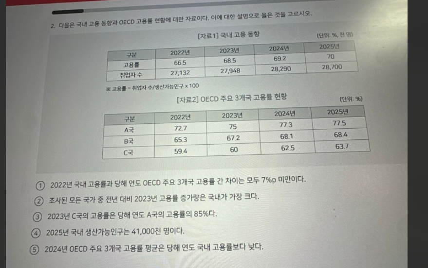
다음은 국내 고용 동향과 OECD 고용률 현황에 대한 자료이다. 이에 대한 설명으로 옳은 것을 고르시오.
[자료1] 국내 고용 동향 (단위: %, 천명) | 구분 | 2022년 | 2023년 | 2024년 | 2025년 | | :--- | :---: | :---: | :---: | :---: | | 고용률 | 66.5 | 68.5 | 69.2 | 70 | | 취업자 수 | 27,132 | 27,948 | 28,290 | 28,700 | ※ 고용률 = 취업자 수 / 생산가능인구 * 100 [자료2] OECD 주요 3개국 고용률 현황 (단위: %) | 구분 | 2022년 | 2023년 | 2024년 | 2025년 | | :--- | :---: | :---: | :---: | :---: | | A국 | 72.7 | 75 | 77.3 | 77.5 | | B국 | 65.3 | 67.2 | 68.1 | 68.4 | | C국 | 59.4 | 60 | 62.5 | 63.7 |
- ① 2022년 국내 고용률과 당해 연도 OECD 주요 3개국 고용률 간 차이는 모두 7%p 미만이다.
- ② 조사된 모든 국가 중 전년 대비 2023년 고용률 증가량은 국내가 가장 크다.
- ③ 2023년 C국의 고용률은 당해 연도 A국의 고용률의 85%다.
- ④ 2025년 국내 생산가능인구는 41,000천 명이다.
- ⑤ 2024년 OECD 주요 3개국 고용률 평균은 당해 연도 국내 고용률보다 낮다.
⚡ 핵심 풀이 과정 (수식 / 표 / 과정)
① 국내 vs C국: 66.5 - 59.4 = 7.1%p >= 7%p (X)
② 국내 증가: 68.5 - 66.5 = 2.0%p < A국 증가: 75.0 - 72.7 = 2.3%p (X)
④ 28,700 / (70 / 100) = 28,700 / 0.7 = 41,000 (O)
💡 상세 해설
2025년 국내 고용률 = 70%, 취업자 수 = 28,700천 명. 생산가능인구 = 28,700 / (70 / 100) = 28,700 / 0.70 = 41,000천 명. 41,000 * 0.70 = 28,700천 명으로 정확히 일치함.
[2. 자료해석] 문항 3
✅ 정답
내 답안: 1
실제 정답: 1
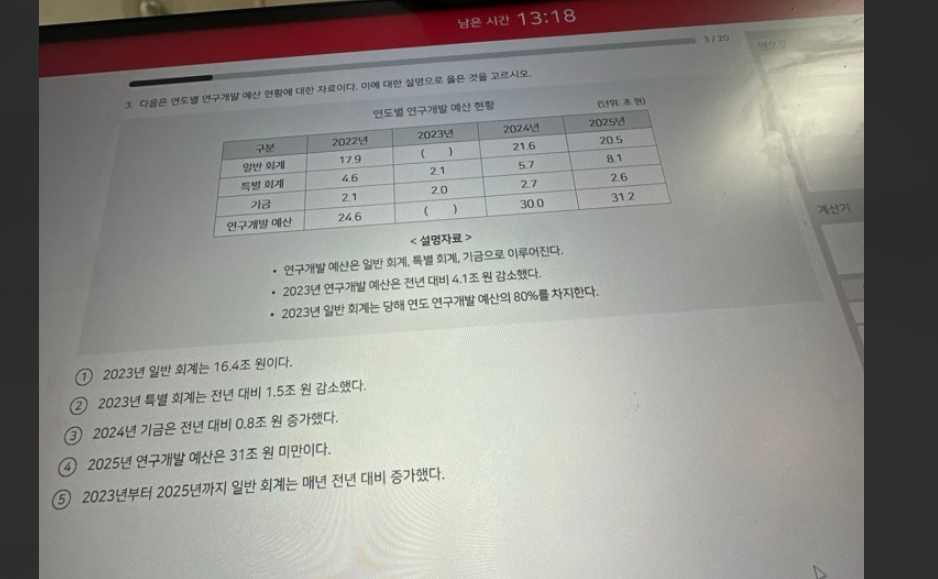
다음은 연도별 연구개발 예산 현황에 대한 자료이다. 이에 대한 설명으로 옳은 것을 고르시오.
연도별 연구개발 예산 현황 (단위: 조 원) | 구분 | 2022년 | 2023년 | 2024년 | 2025년 | | :--- | :---: | :---: | :---: | :---: | | 일반 회계 | 17.9 | ( ) | 21.6 | 20.5 | | 특별 회계 | 4.6 | 2.1 | 5.7 | 8.1 | | 기금 | 2.1 | 2.0 | 2.7 | 2.6 | | 연구개발 예산 | 24.6 | ( ) | 30.0 | 31.2 | <설명자료> - 연구개발 예산은 일반 회계, 특별 회계, 기금으로 이루어진다. - 2023년 연구개발 예산은 전년 대비 4.1조 원 감소했다. - 2023년 일반 회계는 당해 연도 연구개발 예산의 80%를 차지한다.
- ① 2023년 일반 회계는 16.4조 원이다.
- ② 2023년 특별 회계는 전년 대비 1.5조 원 감소했다.
- ③ 2024년 기금은 전년 대비 0.8조 원 증가했다.
- ④ 2025년 연구개발 예산은 31조 원 미만이다.
- ⑤ 2023년부터 2025년까지 일반 회계는 매년 전년 대비 증가했다.
⚡ 핵심 풀이 과정 (수식 / 표 / 과정)
2023년 R&D 예산: 24.6 - 4.1 = 20.5조 원
2023년 일반 회계: 20.5 * 0.80 = 16.4조 원 (16.4 + 2.1 + 2.0 = 20.5조 원) -> ①번 일치 (O)
💡 상세 해설
2023년 연구개발 예산 = 24.6 - 4.1 = 20.5조 원. 2023년 일반 회계 = 20.5 * 0.80 = 16.4조 원. (검산: 16.4 + 2.1 + 2.0 = 20.5조 원으로 합치함). 따라서 ①번이 옳음.
[2. 자료해석] 문항 4
✅ 정답
내 답안: 3
실제 정답: 3
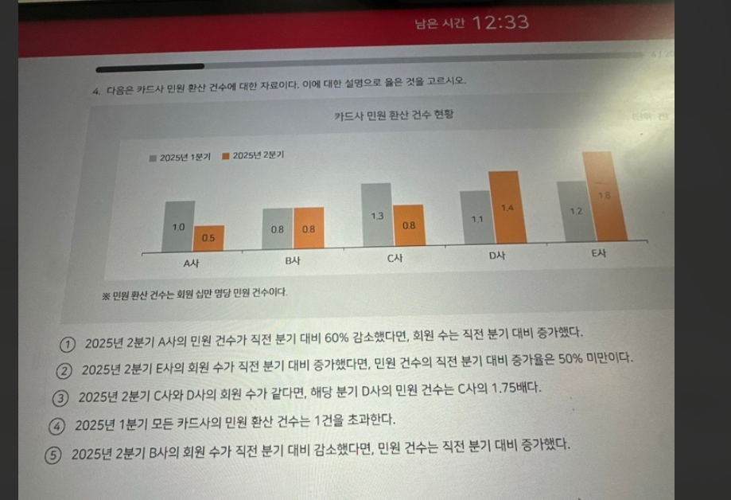
다음은 카드사 민원 환산 건수에 대한 자료이다. 이에 대한 설명으로 옳은 것을 고르시오.
카드사 민원 환산 건수 현황 (단위: 건) | 구분 | 2025년 1분기 | 2025년 2분기 | | :--- | :---: | :---: | | A사 | 1.0 | 0.5 | | B사 | 0.8 | 0.8 | | C사 | 1.3 | 0.8 | | D사 | 1.1 | 1.4 | | E사 | 1.2 | 1.8 | ※ 민원 환산 건수는 회원 십만 명당 민원 건수이다.
- ① 2025년 2분기 A사의 민원 건수가 직전 분기 대비 60% 감소했다면, 회원 수는 직전 분기 대비 증가했다.
- ② 2025년 2분기 E사의 회원 수가 직전 분기 대비 증가했다면, 민원 건수의 직전 분기 대비 증가율은 50% 미만이다.
- ③ 2025년 2분기 C사와 D사의 회원 수가 같다면, 해당 분기 D사의 민원 건수는 C사의 1.75배다.
- ④ 2025년 1분기 모든 카드사의 민원 환산 건수는 1건을 초과한다.
- ⑤ 2025년 2분기 B사의 회원 수가 직전 분기 대비 감소했다면, 민원 건수는 직전 분기 대비 증가했다.
⚡ 핵심 풀이 과정 (수식 / 표 / 과정)
회원수 동일 -> 민원건수 비 = 환산건수 비 = 1.4 / 0.8 = 7 / 4 = 1.75배. (O)
① 민원=0.4, 환산=0.5 -> 회원수=(0.4/0.5)=0.8 (감소)
② 환산증가: 1.8/1.2=1.5(50%증가) -> 회원증가 시 민원증가율 > 50%
💡 상세 해설
환산 건수 = (민원 건수 / 회원 수) * 100,000. 회원 수가 같을 때 민원 건수 비는 환산 건수 비와 동일함. 2분기 D사 환산 = 1.4, C사 환산 = 0.8. 1.4 / 0.8 = 1.75배. 0.8 * 1.75 = 1.4건으로 정확히 1.75배임.
[2. 자료해석] 문항 5
✅ 정답
내 답안: 4
실제 정답: 4
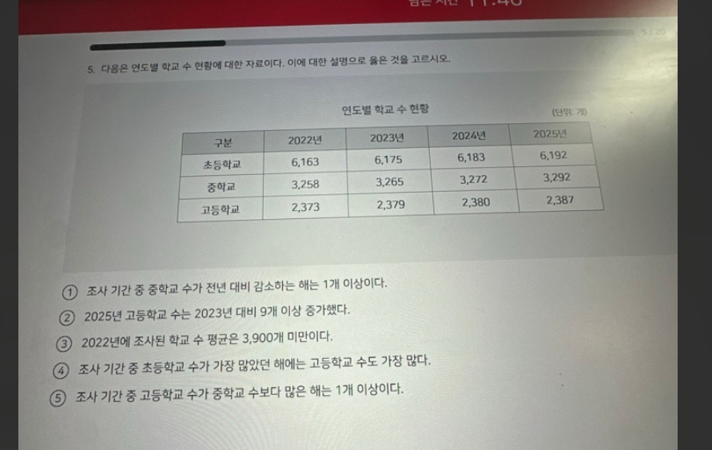
다음은 연도별 학교 수 현황에 대한 자료이다. 이에 대한 설명으로 옳은 것을 고르시오.
연도별 학교 수 현황 (단위: 개) | 구분 | 2022년 | 2023년 | 2024년 | 2025년 | | :--- | :---: | :---: | :---: | :---: | | 초등학교 | 6,163 | 6,175 | 6,183 | 6,192 | | 중학교 | 3,258 | 3,265 | 3,272 | 3,292 | | 고등학교 | 2,373 | 2,379 | 2,380 | 2,387 |
- ① 조사 기간 중 중학교 수가 전년 대비 감소하는 해는 1개 이상이다.
- ② 2025년 고등학교 수는 2023년 대비 9개 이상 증가했다.
- ③ 2022년에 조사된 학교 수 평균은 3,900개 미만이다.
- ④ 조사 기간 중 초등학교 수가 가장 많았던 해에는 고등학교 수도 가장 많다.
- ⑤ 조사 기간 중 고등학교 수가 중학교 수보다 많은 해는 1개 이상이다.
⚡ 핵심 풀이 과정 (수식 / 표 / 과정)
초등 최대: 2025년(6,192개). 고등 연도별: 2022(2,373) < 2023(2,379) < 2024(2,380) < 2025(2,387) -> 고등 최대도 2025년. ④번 일치 (O)
② 2,387 - 2,379 = 8개 증가 < 9개 (X)
③ (6,163 + 3,258 + 2,373) / 3 = 11,794 / 3 = 3,931.33 > 3,900 (X)
💡 상세 해설
초등학교 수가 가장 많은 해는 2025년(6,192개)임. 고등학교 수도 2025년에 2,387개로 조사 기간 중 가장 많음(2,373 < 2,379 < 2,380 < 2,387). 따라서 ④번 설명이 옳음.
[2. 자료해석] 문항 6
✅ 정답
내 답안: 3
실제 정답: 3
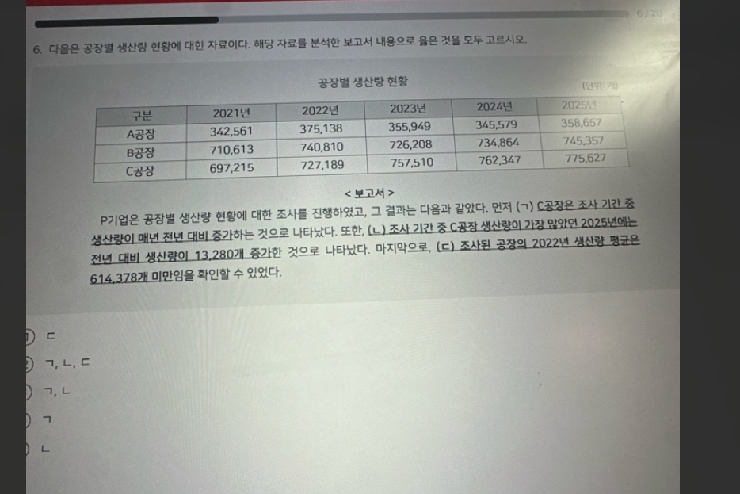
다음은 공장별 생산량 현황에 대한 자료이다. 해당 자료를 분석한 보고서 내용으로 옳은 것을 모두 고르시오.
공장별 생산량 현황 (단위: 개) | 구분 | 2021년 | 2022년 | 2023년 | 2024년 | 2025년 | | :--- | :---: | :---: | :---: | :---: | :---: | | A공장 | 342,561 | 375,138 | 355,949 | 345,579 | 358,657 | | B공장 | 710,613 | 740,810 | 726,208 | 734,864 | 745,357 | | C공장 | 697,215 | 727,189 | 757,510 | 762,347 | 775,627 | <보고서> P기업은 공장별 생산량 현황에 대한 조사를 진행하였고, 그 결과는 다음과 같았다. 먼저 (ㄱ) C공장은 조사 기간 중 생산량이 매년 전년 대비 증가하는 것으로 나타났다. 또한, (ㄴ) 조사 기간 중 C공장 생산량이 가장 많았던 2025년에는 전년 대비 생산량이 13,280개 증가한 것으로 나타났다. 마지막으로, (ㄷ) 조사된 공장의 2022년 생산량 평균은 614,378개 미만임을 확인할 수 있었다.
- ① ㄷ
- ② ㄱ, ㄴ, ㄷ
- ③ ㄱ, ㄴ
- ④ ㄱ
- ⑤ ㄴ
⚡ 핵심 풀이 과정 (수식 / 표 / 과정)
ㄱ: 697,215 -> 727,189 -> 757,510 -> 762,347 -> 775,627 (매년 증가, 참)
ㄴ: 775,627 - 762,347 = 13,280개 (참)
ㄷ: (375,138 + 740,810 + 727,189) / 3 = 1,843,137 / 3 = 614,379 > 614,378 (거짓)
-> ③ ㄱ, ㄴ (O)
💡 상세 해설
ㄱ: C공장 생산량은 697,215 < 727,189 < 757,510 < 762,347 < 775,627로 매년 증가함(참).
ㄴ: 2025년 C공장 전년 대비 증가량 = 775,627 - 762,347 = 13,280개(참).
ㄷ: 2022년 합 = 375,138 + 740,810 + 727,189 = 1,843,137개. 평균 = 1,843,137 / 3 = 614,379개 > 614,378개(거짓). 옳은 것은 ㄱ, ㄴ임.
[2. 자료해석] 문항 7
✅ 정답
내 답안: 3
실제 정답: 3
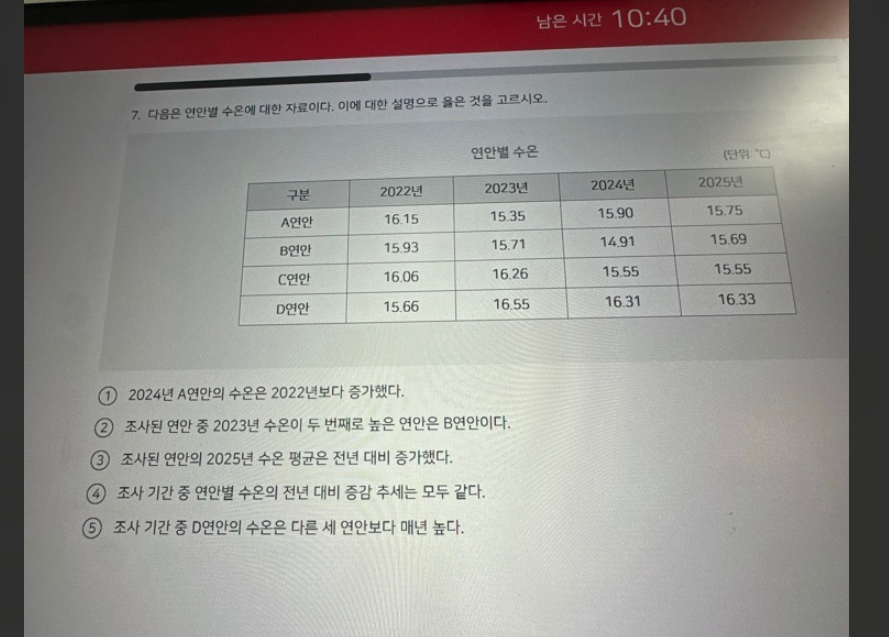
다음은 연안별 수온에 대한 자료이다. 이에 대한 설명으로 옳은 것을 고르시오.
연안별 수온 (단위: ℃) | 구분 | 2022년 | 2023년 | 2024년 | 2025년 | | :--- | :---: | :---: | :---: | :---: | | A연안 | 16.15 | 15.35 | 15.90 | 15.75 | | B연안 | 15.93 | 15.71 | 14.91 | 15.69 | | C연안 | 16.06 | 16.26 | 15.55 | 15.55 | | D연안 | 15.66 | 16.55 | 16.31 | 16.33 |
- ① 2024년 A연안의 수온은 2022년보다 증가했다.
- ② 조사된 연안 중 2023년 수온이 두 번째로 높은 연안은 B연안이다.
- ③ 조사된 연안의 2025년 수온 평균은 전년 대비 증가했다.
- ④ 조사 기간 중 연안별 수온의 전년 대비 증감 추세는 모두 같다.
- ⑤ 조사 기간 중 D연안의 수온은 다른 세 연안보다 매년 높다.
⚡ 핵심 풀이 과정 (수식 / 표 / 과정)
2024년 합: 15.90 + 14.91 + 15.55 + 16.31 = 62.67
2025년 합: 15.75 + 15.69 + 15.55 + 16.33 = 63.32
증감: 63.32 - 62.67 = +0.65 > 0 -> 평균 증가 (O)
💡 상세 해설
2024년 총합 = 15.90 + 14.91 + 15.55 + 16.31 = 62.67℃. 2025년 총합 = 15.75 + 15.69 + 15.55 + 16.33 = 63.32℃. 63.32 - 62.67 = +0.65℃. 평균 = 63.32 / 4 = 15.83℃ > 62.67 / 4 = 15.6675℃로 전년 대비 증가함.
[2. 자료해석] 문항 8
✅ 정답
내 답안: 5
실제 정답: 5
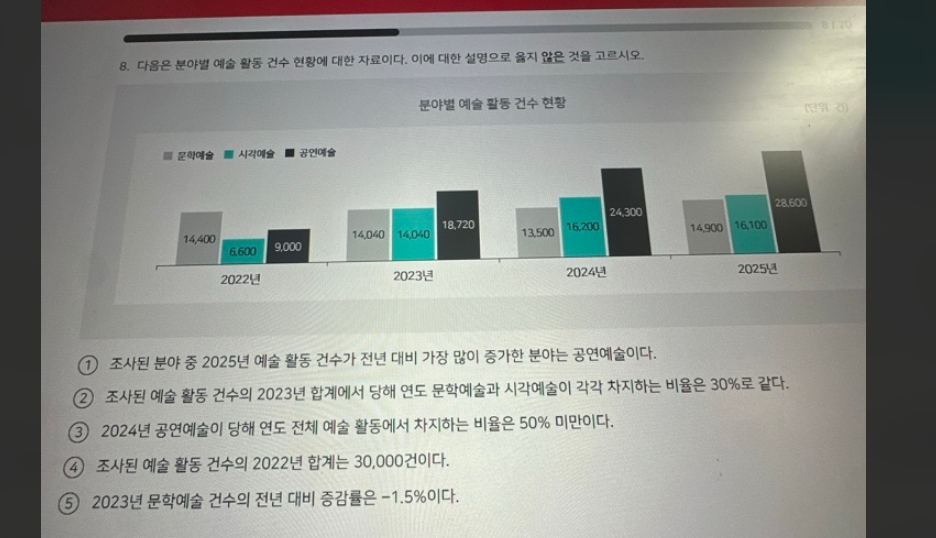
다음은 분야별 예술 활동 건수 현황에 대한 자료이다. 이에 대한 설명으로 옳지 않은 것을 고르시오.
분야별 예술 활동 건수 현황 (단위: 건) | 연도 | 문학예술 | 시각예술 | 공연예술 | | :---: | :---: | :---: | :---: | | 2022년 | 14,400 | 6,600 | 9,000 | | 2023년 | 14,040 | 14,040 | 18,720 | | 2024년 | 13,500 | 16,200 | 24,300 | | 2025년 | 14,900 | 16,100 | 28,600 |
- ① 조사된 분야 중 2025년 예술 활동 건수가 전년 대비 가장 많이 증가한 분야는 공연예술이다.
- ② 조사된 예술 활동 건수의 2023년 합계에서 당해 연도 문학예술과 시각예술이 각각 차지하는 비율은 30%로 같다.
- ③ 2024년 공연예술이 당해 연도 전체 예술 활동에서 차지하는 비율은 50% 미만이다.
- ④ 조사된 예술 활동 건수의 2022년 합계는 30,000건이다.
- ⑤ 2023년 문학예술 건수의 전년 대비 증감률은 -1.5%이다.
⚡ 핵심 풀이 과정 (수식 / 표 / 과정)
⑤ 증감량 = 14,040 - 14,400 = -360건
증감률 = (-360 / 14,400) * 100% = -2.5% != -1.5% (X -> 정답 ⑤)
💡 상세 해설
2022년 문학예술 = 14,400건, 2023년 = 14,040건. 증감량 = 14,040 - 14,400 = -360건. 증감률 = (-360 / 14,400) * 100% = -2.5%임. -1.5%라고 서술한 ⑤번이 옳지 않음.
[2. 자료해석] 문항 9
✅ 정답
내 답안: 5
실제 정답: 5
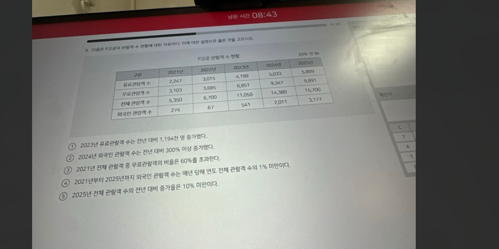
다음은 P고궁의 관람객 수 현황에 대한 자료이다. 이에 대한 설명으로 옳은 것을 고르시오.
P고궁 관람객 수 현황 (단위: 천 명) | 구분 | 2021년 | 2022년 | 2023년 | 2024년 | 2025년 | | :--- | :---: | :---: | :---: | :---: | :---: | | 유료관람객 수 | 2,247 | 3,015 | 4,199 | 5,033 | 5,809 | | 무료관람객 수 | 3,103 | 3,685 | 6,851 | 9,347 | 9,891 | | 전체 관람객 수 | 5,350 | 6,700 | 11,050 | 14,380 | 15,700 | | 외국인 관람객 수 | 274 | 67 | 541 | 2,011 | 3,177 |
- ① 2023년 유료관람객 수는 전년 대비 1,194천 명 증가했다.
- ② 2024년 외국인 관람객 수는 전년 대비 300% 이상 증가했다.
- ③ 2021년 전체 관람객 중 무료관람객의 비율은 60%를 초과한다.
- ④ 2021년부터 2025년까지 외국인 관람객 수는 매년 당해 연도 전체 관람객 수의 1% 미만이다.
- ⑤ 2025년 전체 관람객 수의 전년 대비 증가율은 10% 미만이다.
⚡ 핵심 풀이 과정 (수식 / 표 / 과정)
① 4,199 - 3,015 = 1,184 != 1,194 (X)
② 2,011 - 541 = 1,470, 1,470 / 541 = 271.7% < 300% (X)
⑤ 증가량 = 15,700 - 14,380 = 1,320, 기준 10% = 14,380 * 0.10 = 1,438 -> 1,320 / 14,380 = 9.18% < 10% (O)
💡 상세 해설
2024년 전체 관람객 = 14,380천 명, 2025년 = 15,700천 명. 증가량 = 15,700 - 14,380 = 1,320천 명. 14,380 * 0.10 = 1,438천 명. 1,320 < 1,438이므로 증가율 = (1,320 / 14,380) * 100% = 9.18% < 10%. 따라서 ⑤번이 옳음.
[2. 자료해석] 문항 10
✅ 정답
내 답안: 1
실제 정답: 1
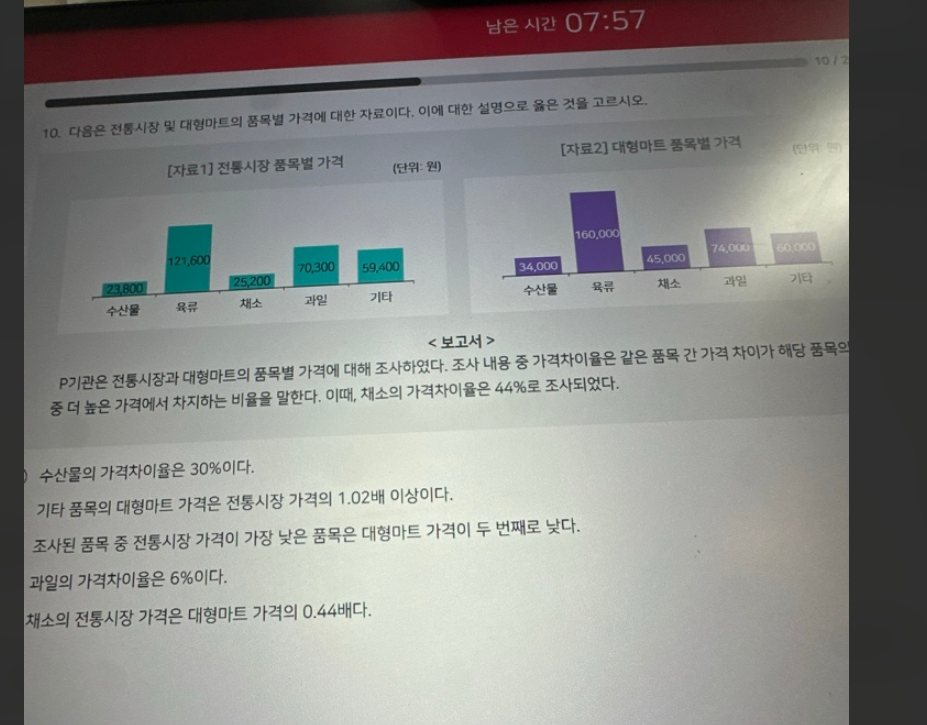
다음은 전통시장 및 대형마트의 품목별 가격에 대한 자료이다. 이에 대한 설명으로 옳은 것을 고르시오.
[자료1] 전통시장 품목별 가격 (단위: 원) 수산물: 23,800 | 육류: 121,600 | 채소: 25,200 | 과일: 70,300 | 기타: 59,400 [자료2] 대형마트 품목별 가격 (단위: 원) 수산물: 34,000 | 육류: 160,000 | 채소: 45,000 | 과일: 74,000 | 기타: 60,000 <보고서> P기관은 전통시장과 대형마트의 품목별 가격에 대해 조사하였다. 조사 내용 중 가격차이율은 같은 품목 간 가격 차이가 해당 품목의 가격 중 더 높은 가격에서 차지하는 비율을 말한다. 이때, 채소의 가격차이율은 44%로 조사되었다. (예: 채소 차이 = 45,000 - 25,200 = 19,800. 19,800 / 45,000 = 0.44 = 44%)
- ① 수산물의 가격차이율은 30%이다.
- ② 기타 품목의 대형마트 가격은 전통시장 가격의 1.02배 이상이다.
- ③ 조사된 품목 중 전통시장 가격이 가장 낮은 품목은 대형마트 가격이 두 번째로 낮다.
- ④ 과일의 가격차이율은 6%이다.
- ⑤ 채소의 전통시장 가격은 대형마트 가격의 0.44배다.
⚡ 핵심 풀이 과정 (수식 / 표 / 과정)
수산물: 34,000 - 23,800 = 10,200원
가격차이율 = 10,200 / 34,000 = 0.30 = 30% (O)
② 59,400 * 1.02 = 60,588 > 60,000 (X)
④ 과일 차이 = 74,000 - 70,300 = 3,700, 3,700 / 74,000 = 5.0% != 6% (X)
💡 상세 해설
수산물 가격 차이 = 34,000 - 23,800 = 10,200원. 더 높은 가격 = 34,000원. 수산물 가격차이율 = (10,200 / 34,000) * 100% = 30.0%. 34,000 * 0.30 = 10,200원으로 정확히 30%임.
[2. 자료해석] 문항 11
✅ 정답
내 답안: 5
실제 정답: 5
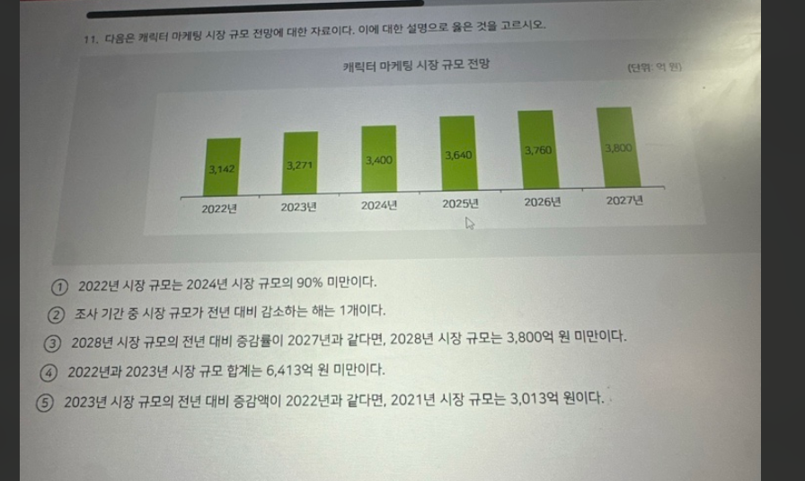
다음은 캐릭터 마케팅 시장 규모 전망에 대한 자료이다. 이에 대한 설명으로 옳은 것을 고르시오.
캐릭터 마케팅 시장 규모 전망 (단위: 억 원) | 2022년 | 2023년 | 2024년 | 2025년 | 2026년 | 2027년 | | :---: | :---: | :---: | :---: | :---: | :---: | | 3,142 | 3,271 | 3,400 | 3,640 | 3,760 | 3,800 |
- ① 2022년 시장 규모는 2024년 시장 규모의 90% 미만이다.
- ② 조사 기간 중 시장 규모가 전년 대비 감소하는 해는 1개이다.
- ③ 2028년 시장 규모의 전년 대비 증감률이 2027년과 같다면, 2028년 시장 규모는 3,800억 원 미만이다.
- ④ 2022년과 2023년 시장 규모 합계는 6,413억 원 미만이다.
- ⑤ 2023년 시장 규모의 전년 대비 증감액이 2022년과 같다면, 2021년 시장 규모는 3,013억 원이다.
⚡ 핵심 풀이 과정 (수식 / 표 / 과정)
2023년 증감액: 3,271 - 3,142 = 129억 원
2022년 증감액 = 129억 원 -> 2021년 = 3,142 - 129 = 3,013억 원 (O)
① 3,400 * 0.90 = 3,060 < 3,142 (90% 이상, X)
④ 3,142 + 3,271 = 6,413억 원 (미만 아님, X)
💡 상세 해설
2023년 시장 규모의 전년 대비 증감액 = 3,271 - 3,142 = 129억 원. 2022년 증감액 = 2022년 - 2021년 = 129억 원이라면, 2021년 시장 규모 = 3,142 - 129 = 3,013억 원임. 3,013 + 129 = 3,142억 원으로 일치함.
[2. 자료해석] 문항 12
✅ 정답
내 답안: 1
실제 정답: 1
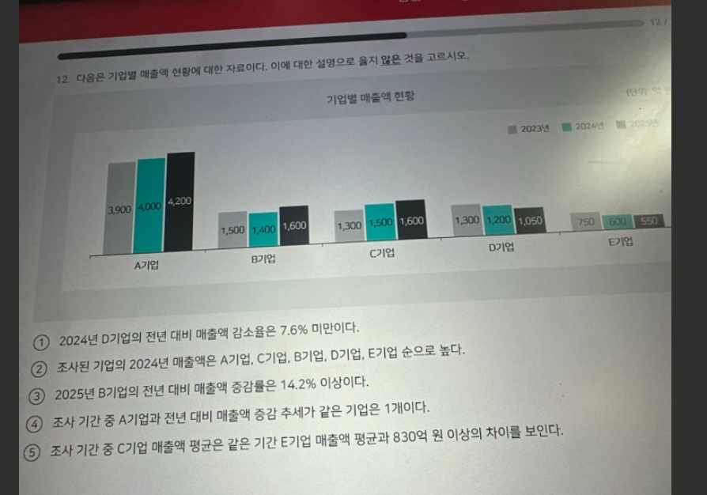
다음은 기업별 매출액 현황에 대한 자료이다. 이에 대한 설명으로 옳지 않은 것을 고르시오.
기업별 매출액 현황 (단위: 억 원) | 구분 | 2023년 | 2024년 | 2025년 | | :--- | :---: | :---: | :---: | | A기업 | 3,900 | 4,000 | 4,200 | | B기업 | 1,500 | 1,400 | 1,600 | | C기업 | 1,300 | 1,500 | 1,600 | | D기업 | 1,300 | 1,200 | 1,050 | | E기업 | 750 | 600 | 550 |
- ① 2024년 D기업의 전년 대비 매출액 감소율은 7.6% 미만이다.
- ② 조사된 기업의 2024년 매출액은 A기업, C기업, B기업, D기업, E기업 순으로 높다.
- ③ 2025년 B기업의 전년 대비 매출액 증감률은 14.2% 이상이다.
- ④ 조사 기간 중 A기업과 전년 대비 매출액 증감 추세가 같은 기업은 1개이다.
- ⑤ 조사 기간 중 C기업 매출액 평균은 같은 기간 E기업 매출액 평균과 830억 원 이상의 차이를 보인다.
⚡ 핵심 풀이 과정 (수식 / 표 / 과정)
① 2024년 D기업 감소율 = (1,300 - 1,200) / 1,300 = 100 / 1,300 = 7.69% > 7.6% (X -> 정답 ①)
③ 2025년 B기업 증감률 = (1,600 - 1,400) / 1,400 = 200 / 1,400 = 14.29% >= 14.2% (O)
⑤ C평균 = 4,400/3 = 1,466.67, E평균 = 1,900/3 = 633.33, 차이 = 2,500/3 = 833.33 >= 830 (O)
💡 상세 해설
2023년 D기업 = 1,300억 원, 2024년 = 1,200억 원. 감소액 = 1,300 - 1,200 = 100억 원. 감소율 = (100 / 1,300) * 100% = 7.692%임. 7.692%는 7.6% 이상(초과)이므로 '7.6% 미만'이라는 설명은 옳지 않음.
[2. 자료해석] 문항 13
✅ 정답
내 답안: 2
실제 정답: 2
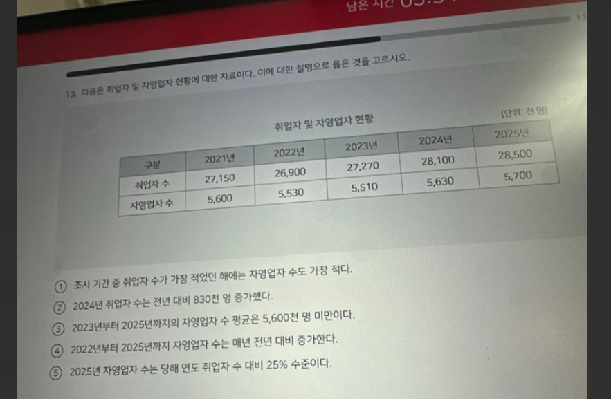
다음은 취업자 및 자영업자 현황에 대한 자료이다. 이에 대한 설명으로 옳은 것을 고르시오.
취업자 및 자영업자 현황 (단위: 천 명) | 구분 | 2021년 | 2022년 | 2023년 | 2024년 | 2025년 | | :--- | :---: | :---: | :---: | :---: | :---: | | 취업자 수 | 27,150 | 26,900 | 27,270 | 28,100 | 28,500 | | 자영업자 수 | 5,600 | 5,530 | 5,510 | 5,630 | 5,700 |
- ① 조사 기간 중 취업자 수가 가장 적었던 해에는 자영업자 수도 가장 적다.
- ② 2024년 취업자 수는 전년 대비 830천 명 증가했다.
- ③ 2023년부터 2025년까지의 자영업자 수 평균은 5,600천 명 미만이다.
- ④ 2022년부터 2025년까지 자영업자 수는 매년 전년 대비 증가한다.
- ⑤ 2025년 자영업자 수는 당해 연도 취업자 수 대비 25% 수준이다.
⚡ 핵심 풀이 과정 (수식 / 표 / 과정)
② 28,100 - 27,270 = 830천 명 증가 (O)
① 취업자 최소 해(2022)의 자영업자=5,530 > 2023년 자영업자=5,510(최소) (X)
③ (5,510 + 5,630 + 5,700) / 3 = 16,840 / 3 = 5,613.33 > 5,600 (X)
⑤ 5,700 / 28,500 = 0.20 = 20% != 25% (X)
💡 상세 해설
2023년 취업자 수 = 27,270천 명, 2024년 = 28,100천 명. 전년 대비 증가량 = 28,100 - 27,270 = 830천 명. 따라서 ②번이 옳음.
[2. 자료해석] 문항 14
✅ 정답
내 답안: 4
실제 정답: 4
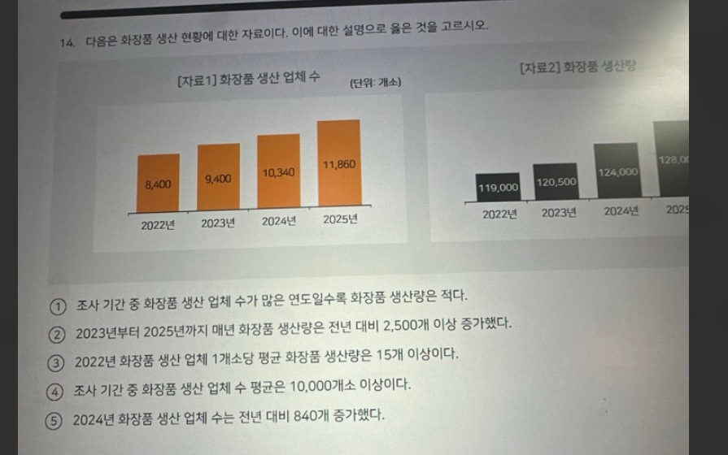
다음은 화장품 생산 현황에 대한 자료이다. 이에 대한 설명으로 옳은 것을 고르시오.
[자료1] 화장품 생산 업체 수 (단위: 개소) 2022년: 8,400 | 2023년: 9,400 | 2024년: 10,340 | 2025년: 11,860 [자료2] 화장품 생산량 (단위: 개) 2022년: 119,000 | 2023년: 120,500 | 2024년: 124,000 | 2025년: 128,000
- ① 조사 기간 중 화장품 생산 업체 수가 많은 연도일수록 화장품 생산량은 적다.
- ② 2023년부터 2025년까지 매년 화장품 생산량은 전년 대비 2,500개 이상 증가했다.
- ③ 2022년 화장품 생산 업체 1개소당 평균 화장품 생산량은 15개 이상이다.
- ④ 조사 기간 중 화장품 생산 업체 수 평균은 10,000개소 이상이다.
- ⑤ 2024년 화장품 생산 업체 수는 전년 대비 840개 증가했다.
⚡ 핵심 풀이 과정 (수식 / 표 / 과정)
④ 총합 = 8,400 + 9,400 + 10,340 + 11,860 = 40,000, 평균 = 40,000 / 4 = 10,000개소 >= 10,000 (O)
② 2023년 생산량 증가 = 120,500 - 119,000 = 1,500 < 2,500 (X)
③ 119,000 / 8,400 = 14.17 < 15 (X)
⑤ 2024년 업체수 증가 = 10,340 - 9,400 = 940 != 840 (X)
💡 상세 해설
업체 수 총합 = 8,400 + 9,400 + 10,340 + 11,860 = 40,000개소. 평균 = 40,000 / 4 = 10,000개소. 10,000개소 이상에 정확히 부합하므로 ④번이 옳음.
[2. 자료해석] 문항 15
✅ 정답
내 답안: 3
실제 정답: 3
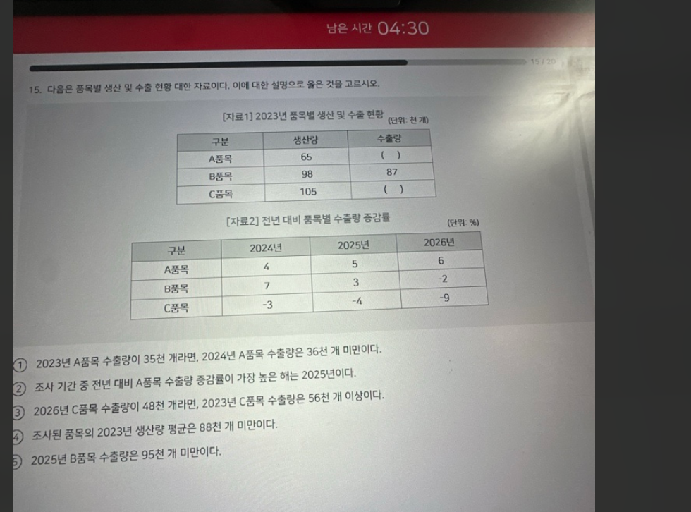
다음은 품목별 생산 및 수출 현황에 대한 자료이다. 이에 대한 설명으로 옳은 것을 고르시오.
[자료1] 2023년 품목별 생산 및 수출 현황 (단위: 천 개) | 구분 | 생산량 | 수출량 | | :--- | :---: | :---: | | A품목 | 65 | ( ) | | B품목 | 98 | 87 | | C품목 | 105 | ( ) | [자료2] 전년 대비 품목별 수출량 증감률 (단위: %) | 구분 | 2024년 | 2025년 | 2026년 | | :--- | :---: | :---: | :---: | | A품목 | 4 | 5 | 6 | | B품목 | 7 | 3 | -2 | | C품목 | -3 | -4 | -9 |
- ① 2023년 A품목 수출량이 35천 개라면, 2024년 A품목 수출량은 36천 개 미만이다.
- ② 조사 기간 중 전년 대비 A품목 수출량 증감률이 가장 높은 해는 2025년이다.
- ③ 2026년 C품목 수출량이 48천 개라면, 2023년 C품목 수출량은 56천 개 이상이다.
- ④ 조사된 품목의 2023년 생산량 평균은 88천 개 미만이다.
- ⑤ 2025년 B품목 수출량은 95천 개 미만이다.
⚡ 핵심 풀이 과정 (수식 / 표 / 과정)
③ 0.97 * 0.96 * 0.91 = 0.847392, 2023년 C = 48 / 0.847392 = 56.644천 개 >= 56천 개 (O)
① 35 * 1.04 = 36.4 > 36 (X)
④ 평균 = (65 + 98 + 105) / 3 = 268 / 3 = 89.33 > 88 (X)
⑤ 87 * 1.07 * 1.03 = 93.09 * 1.03 = 95.88 > 95 (X)
💡 상세 해설
2026년 C수출량 = 2023년 * (1 - 0.03) * (1 - 0.04) * (1 - 0.09) = 2023년 * 0.97 * 0.96 * 0.91 = 2023년 * 0.847392. 2023년 = 48 / 0.847392 = 56.644천 개 >= 56천 개. 따라서 ③번이 옳음.
[2. 자료해석] 문항 16
✅ 정답
내 답안: 1
실제 정답: 1
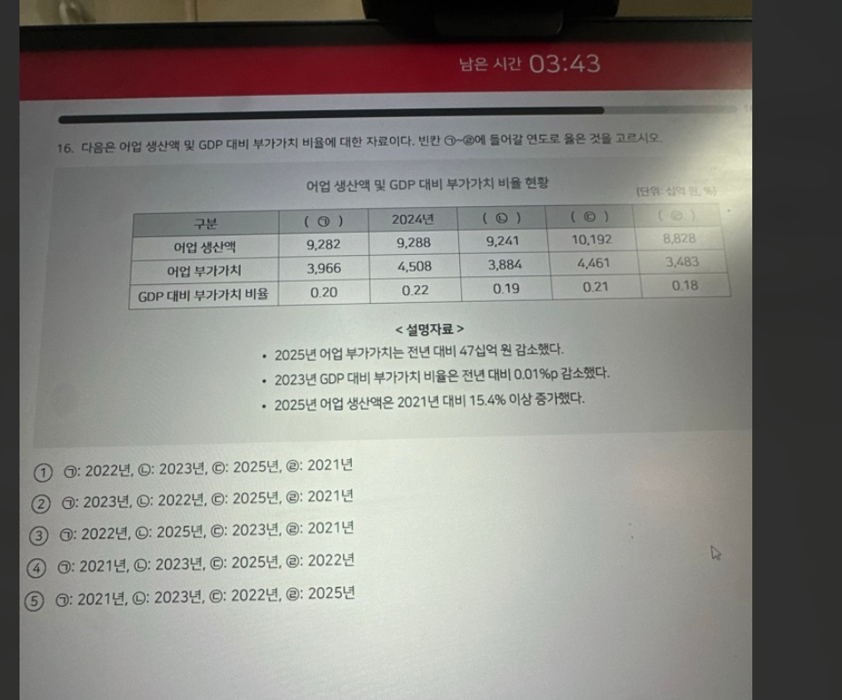
다음은 어업 생산액 및 GDP 대비 부가가치 비율에 대한 자료이다. 빈칸 ㉠~㉣에 들어갈 연도로 옳은 것을 고르시오.
어업 생산액 및 GDP 대비 부가가치 비율 현황 (단위: 십억 원, %) | 구분 | (㉠) | 2024년 | (㉡) | (㉢) | (㉣) | | :--- | :---: | :---: | :---: | :---: | :---: | | 어업 생산액 | 9,282 | 9,288 | 9,241 | 10,192 | 8,828 | | 어업 부가가치 | 3,966 | 4,508 | 3,884 | 4,461 | 3,483 | | GDP 대비 부가가치 비율 | 0.20 | 0.22 | 0.19 | 0.21 | 0.18 | <설명자료> - 2025년 어업 부가가치는 전년 대비 47십억 원 감소했다. - 2023년 GDP 대비 부가가치 비율은 전년 대비 0.01%p 감소했다. - 2025년 어업 생산액은 2021년 대비 15.4% 이상 증가했다.
- ① ㉠: 2022년, ㉡: 2023년, ㉢: 2025년, ㉣: 2021년
- ② ㉠: 2023년, ㉡: 2022년, ㉢: 2025년, ㉣: 2021년
- ③ ㉠: 2022년, ㉡: 2025년, ㉢: 2023년, ㉣: 2021년
- ④ ㉠: 2021년, ㉡: 2023년, ㉢: 2025년, ㉣: 2022년
- ⑤ ㉠: 2021년, ㉡: 2023년, ㉢: 2022년, ㉣: 2025년
⚡ 핵심 풀이 과정 (수식 / 표 / 과정)
2025년 부가가치 = 4,508 - 47 = 4,461 -> ㉢=2025
2025년 생산액(10,192) / 1.154 = 8,831.9 >= 8,828 -> ㉣=2021
비율 감소: 0.20(㉠:2022) - 0.01 = 0.19(㉡:2023) -> ①번 (O)
💡 상세 해설
2024년 부가가치 = 4,508. 2025년 = 4,508 - 47 = 4,461 -> ㉢ = 2025년. 2025년 생산액 = 10,192. 2021년 대비 15.4% 이상 증가: 8,828 * 1.154 = 10,187.5 < 10,192 -> ㉣ = 2021년. 2023년 비율이 2022년보다 0.01%p 감소: 0.20(㉠) -> 0.19(㉡) -> ㉠ = 2022년, ㉡ = 2023년. 따라서 ①번 일치.
[2. 자료해석] 문항 17
✅ 정답
내 답안: 1
실제 정답: 1
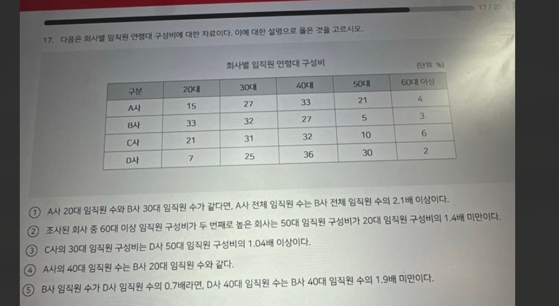
다음은 회사별 임직원 연령대 구성비에 대한 자료이다. 이에 대한 설명으로 옳은 것을 고르시오.
회사별 임직원 연령대 구성비 (단위: %) | 구분 | 20대 | 30대 | 40대 | 50대 | 60대 이상 | | :--- | :---: | :---: | :---: | :---: | :---: | | A사 | 15 | 27 | 33 | 21 | 4 | | B사 | 33 | 32 | 27 | 5 | 3 | | C사 | 21 | 31 | 32 | 10 | 6 | | D사 | 7 | 25 | 36 | 30 | 2 |
- ① A사 20대 임직원 수와 B사 30대 임직원 수가 같다면, A사 전체 임직원 수는 B사 전체 임직원 수의 2.1배 이상이다.
- ② 조사된 회사 중 60대 이상 임직원 구성비가 두 번째로 높은 회사는 50대 임직원 구성비가 20대 임직원 구성비의 1.4배 미만이다.
- ③ C사의 30대 임직원 구성비는 D사 50대 임직원 구성비의 1.04배 이상이다.
- ④ A사의 40대 임직원 수는 B사 20대 임직원 수와 같다.
- ⑤ B사 임직원 수가 D사 임직원 수의 0.7배라면, D사 40대 임직원 수는 B사 40대 임직원 수의 1.9배 미만이다.
⚡ 핵심 풀이 과정 (수식 / 표 / 과정)
A * 0.15 = B * 0.32 -> A / B = 0.32 / 0.15 = 32 / 15 = 2.133 >= 2.1 (O)
② 60대 2위=A사, 50대/20대 = 21 / 15 = 1.4배 (1.4배 미만 아님, X)
③ C30대/D50대 = 31 / 30 = 1.033 < 1.04 (X)
💡 상세 해설
A사 20대 = 0.15 * A, B사 30대 = 0.32 * B. 0.15 * A = 0.32 * B -> A / B = 0.32 / 0.15 = 32 / 15 = 2.133배. 2.133 >= 2.1이므로 A사 전체 임직원 수는 B사의 2.1배 이상임. 따라서 ①번이 옳음.
[2. 자료해석] 문항 18
✅ 정답
내 답안: 2
실제 정답: 2
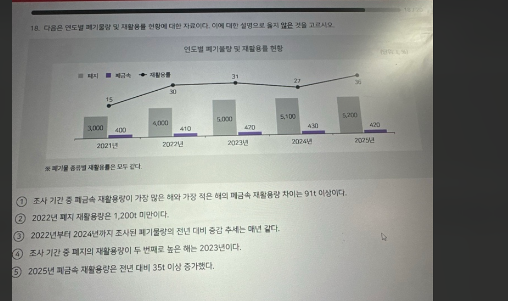
다음은 연도별 폐기물량 및 재활용률 현황에 대한 자료이다. 이에 대한 설명으로 옳지 않은 것을 고르시오.
연도별 폐기물량 및 재활용률 현황 (단위: t, %) | 연도 | 폐지 | 폐금속 | 재활용률 | | :---: | :---: | :---: | :---: | | 2021년 | 3,000 | 400 | 15% | | 2022년 | 4,000 | 410 | 30% | | 2023년 | 5,000 | 420 | 31% | | 2024년 | 5,100 | 430 | 27% | | 2025년 | 5,200 | 420 | 36% | ※ 폐기물 종류별 재활용률은 모두 같다.
- ① 조사 기간 중 폐금속 재활용량이 가장 많은 해와 가장 적은 해의 폐금속 재활용량 차이는 91t 이상이다.
- ② 2022년 폐지 재활용량은 1,200t 미만이다.
- ③ 2022년부터 2024년까지 조사된 폐기물량의 전년 대비 증감 추세는 매년 같다.
- ④ 조사 기간 중 폐지의 재활용량이 두 번째로 높은 해는 2023년이다.
- ⑤ 2025년 폐금속 재활용량은 전년 대비 35t 이상 증가했다.
⚡ 핵심 풀이 과정 (수식 / 표 / 과정)
② 2022년 폐지 재활용량 = 4,000 * 0.30 = 1,200t != 1,200t 미만 (X -> 정답 ②)
① 폐금속 최대=2025년(420 * 0.36 = 151.2), 최소=2021년(400 * 0.15 = 60), 차이 = 151.2 - 60 = 91.2 >= 91 (O)
⑤ 2025년=151.2, 2024년=430 * 0.27 = 116.1, 증가량 = 151.2 - 116.1 = 35.1 >= 35 (O)
💡 상세 해설
2022년 폐지 재활용량 = 4,000 * (30 / 100) = 1,200t. 1,200t 미만이 아니라 정확히 1,200t임. 따라서 ②번 설명이 옳지 않음.
[2. 자료해석] 문항 19
✅ 정답
내 답안: 2
실제 정답: 2
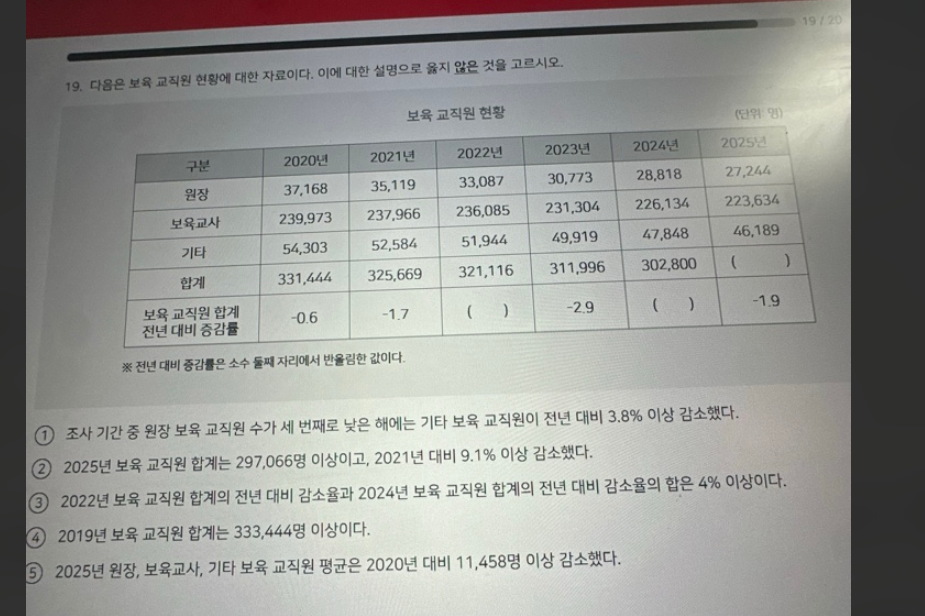
다음은 보육 교직원 현황에 대한 자료이다. 이에 대한 설명으로 옳지 않은 것을 고르시오.
보육 교직원 현황 (단위: 명) | 구분 | 2020년 | 2021년 | 2022년 | 2023년 | 2024년 | 2025년 | | :--- | :---: | :---: | :---: | :---: | :---: | :---: | | 원장 | 37,168 | 35,119 | 33,087 | 30,773 | 28,818 | 27,244 | | 보육교사 | 239,973 | 237,966 | 236,085 | 231,304 | 226,134 | 223,634 | | 기타 | 54,303 | 52,584 | 51,944 | 49,919 | 47,848 | 46,189 | | 합계 | 331,444 | 325,669 | 321,116 | 311,996 | 302,800 | ( ) | | 전년 대비 증감률 | -0.6 | -1.7 | ( ) | -2.9 | ( ) | -1.9 | ※ 전년 대비 증감률은 소수 둘째 자리에서 반올림한 값이다.
- ① 조사 기간 중 원장 보육 교직원 수가 세 번째로 낮은 해에는 기타 보육 교직원이 전년 대비 3.8% 이상 감소했다.
- ② 2025년 보육 교직원 합계는 297,066명 이상이고, 2021년 대비 9.1% 이상 감소했다.
- ③ 2022년 보육 교직원 합계의 전년 대비 감소율과 2024년 보육 교직원 합계의 전년 대비 감소율의 합은 4% 이상이다.
- ④ 2019년 보육 교직원 합계는 333,444명 이상이다.
- ⑤ 2025년 원장, 보육교사, 기타 보육 교직원 평균은 2020년 대비 11,458명 이상 감소했다.
⚡ 핵심 풀이 과정 (수식 / 표 / 과정)
2025년 합계 = 27,244 + 223,634 + 46,189 = 297,067명
2021년 대비 감소량 = 325,669 - 297,067 = 28,602명
감소율 = 28,602 / 325,669 = 8.78% < 9.1% (X -> 정답 ②)
325,669 * 0.091 = 29,635.88 > 28,602
💡 상세 해설
2025년 합계 = 27,244 + 223,634 + 46,189 = 297,067명. 2021년(325,669명) 대비 감소량 = 325,669 - 297,067 = 28,602명. 감소율 = (28,602 / 325,669) * 100% = 8.78%. 8.78% < 9.1%이므로 9.1% 이상 감소했다는 설명은 옳지 않음.
[2. 자료해석] 문항 20
✅ 정답
내 답안: 3
실제 정답: 3
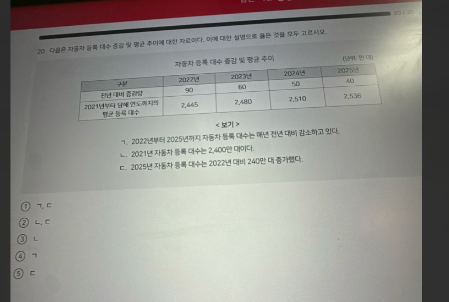
다음은 자동차 등록 대수 증감 및 평균 추이에 대한 자료이다. 이에 대한 설명으로 옳은 것을 모두 고르시오.
자동차 등록 대수 증감 및 평균 추이 (단위: 만 대) | 구분 | 2022년 | 2023년 | 2024년 | 2025년 | | :--- | :---: | :---: | :---: | :---: | | 전년 대비 증감량 | 90 | 60 | 50 | 40 | | 2021년부터 당해 연도까지의 평균 등록 대수 | 2,445 | 2,480 | 2,510 | 2,536 | <보기> ㄱ. 2022년부터 2025년까지 자동차 등록 대수는 매년 전년 대비 감소하고 있다. ㄴ. 2021년 자동차 등록 대수는 2,400만 대이다. ㄷ. 2025년 자동차 등록 대수는 2022년 대비 240만 대 증가했다.
- ① ㄱ, ㄷ
- ② ㄴ, ㄷ
- ③ ㄴ
- ④ ㄱ
- ⑤ ㄷ
⚡ 핵심 풀이 과정 (수식 / 표 / 과정)
2021년=x -> 2022년=x+90 -> (2x+90)/2 = 2,445 -> x=2,400 (ㄴ 참)
2022(2,490) -> 2023(2,550) -> 2024(2,600) -> 2025(2,640) (매년 증가, ㄱ 거짓)
2025 vs 2022 증가량 = 2,640 - 2,490 = 60 + 50 + 40 = 150만 대 != 240만 대 (ㄷ 거짓)
-> ③ ㄴ (O)
💡 상세 해설
2021년 등록 대수를 x라 하면 2022년 = x + 90. (x + x + 90) / 2 = 2,445 -> 2x = 4,800 -> x = 2,400만 대(ㄴ 참).
2021년=2,400, 2022년=2,490, 2023년=2,550, 2024년=2,600, 2025년=2,640만 대. 증감량이 양수이므로 매년 증가함(ㄱ 거짓). 2025년 대비 2022년 증가량 = 2,640 - 2,490 = 150만 대 != 240만 대(ㄷ 거짓). 옳은 것은 ㄴ임.
3. 수리
응용수리 및 방정식/확률 (20문항)
[3. 수리] 문항 1
✅ 정답
내 답안: 1
실제 정답: 1
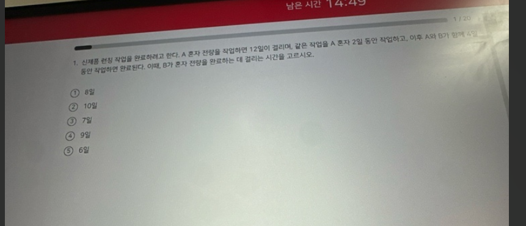
신제품 런칭 작업을 완료하려고 한다. A 혼자 전량을 작업하면 12일이 걸리며, 같은 작업을 A 혼자 2일 동안 작업하고, 이후 A와 B가 함께 4일 동안 작업하면 완료된다. 이때, B가 혼자 전량을 완료하는 데 걸리는 시간을 고르시오.
- ① 8일
- ② 10일
- ③ 7일
- ④ 9일
- ⑤ 6일
⚡ 핵심 풀이 과정 (수식 / 표 / 과정)
전체 일량=12 -> A=1. A 2일 작업 후 잔여량: 12 - (1 * 2) = 10
(1 + B) * 4 = 10 -> 1 + B = 2.5 -> B = 1.5
B 단독 완료 시간: 12 / 1.5 = 8일
💡 상세 해설
전체 일의 양을 12로 두면, A의 1일 작업량 = 1. A 혼자 2일 작업 후 잔여량 = 12 - (1 * 2) = 10. A와 B가 함께 4일간 작업: (1 + B) * 4 = 10 -> 1 + B = 2.5 -> B = 1.5. B 혼자 전량 작업 시 걸리는 시간 = 12 / 1.5 = 8일.
[3. 수리] 문항 2
✅ 정답
내 답안: 1
실제 정답: 1
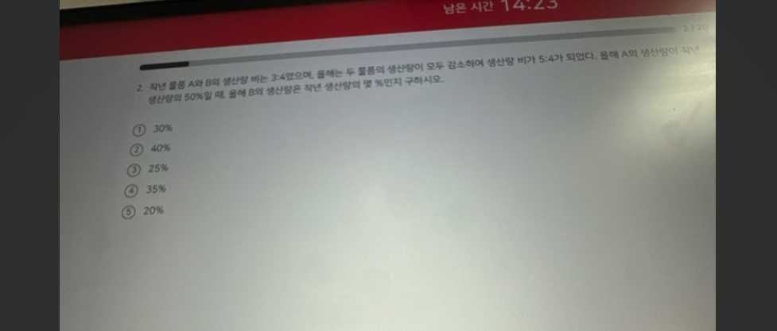
작년 물품 A와 B의 생산량 비는 3:4였으며, 올해는 두 물품의 생산량이 모두 감소하여 생산량 비가 5:4가 되었다. 올해 A의 생산량이 작년 생산량의 50%일 때, 올해 B의 생산량은 작년 생산량의 몇 %인지 구하시오.
- ① 30%
- ② 40%
- ③ 25%
- ④ 35%
- ⑤ 20%
⚡ 핵심 풀이 과정 (수식 / 표 / 과정)
A_작=300, B_작=400
A_올 = 300 * 0.50 = 150
B_올 = 150 * (4 / 5) = 120 -> (120 / 400) * 100% = 30%
💡 상세 해설
작년 생산량 A_작 = 300, B_작 = 400. 올해 A 생산량 A_올 = 300 * 0.50 = 150. 올해 A:B = 5:4이므로 B_올 = 150 * (4 / 5) = 120. 작년 대비 올해 B 비율 = (120 / 400) * 100% = 30%.
[3. 수리] 문항 3
✅ 정답
내 답안: 5
실제 정답: 5
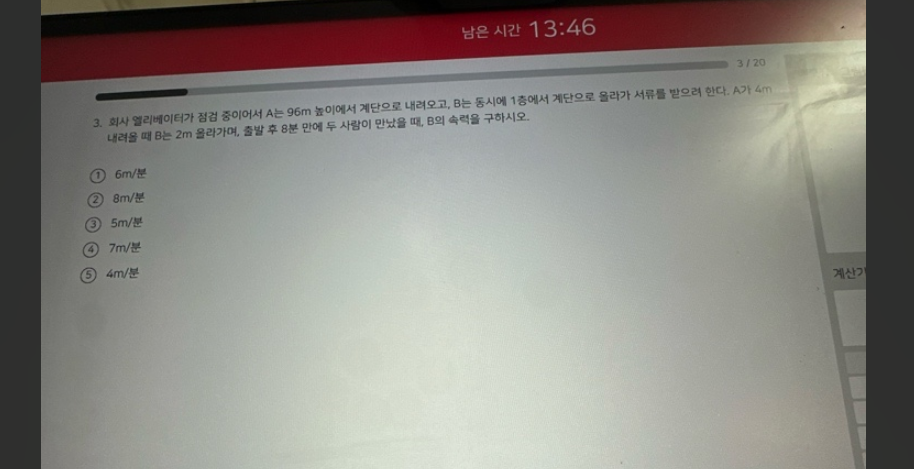
회사 엘리베이터가 점검 중이어서 A는 96m 높이에서 계단으로 내려오고, B는 동시에 1층에서 계단으로 올라가 서류를 받으려 한다. A가 4m 내려올 때 B는 2m 올라가며, 출발 후 8분 만에 두 사람이 만났을 때, B의 속력을 구하시오.
- ① 6m/분
- ② 8m/분
- ③ 5m/분
- ④ 7m/분
- ⑤ 4m/분
⚡ 핵심 풀이 과정 (수식 / 표 / 과정)
A 속력 = 2v, B 속력 = v
(2v + v) * 8 = 96 -> 24v = 96 -> v = 4m/분
B 속력 = 4m/분
💡 상세 해설
A와 B의 속력 비 = 4 : 2 = 2 : 1. A 속력 = 2v, B 속력 = v. 8분 동안 마주보고 이동한 거리의 합 = (2v + v) * 8 = 24v = 96m -> v = 4m/분. 따라서 B의 속력은 4m/분임.
[3. 수리] 문항 4
✅ 정답
내 답안: 1
실제 정답: 1
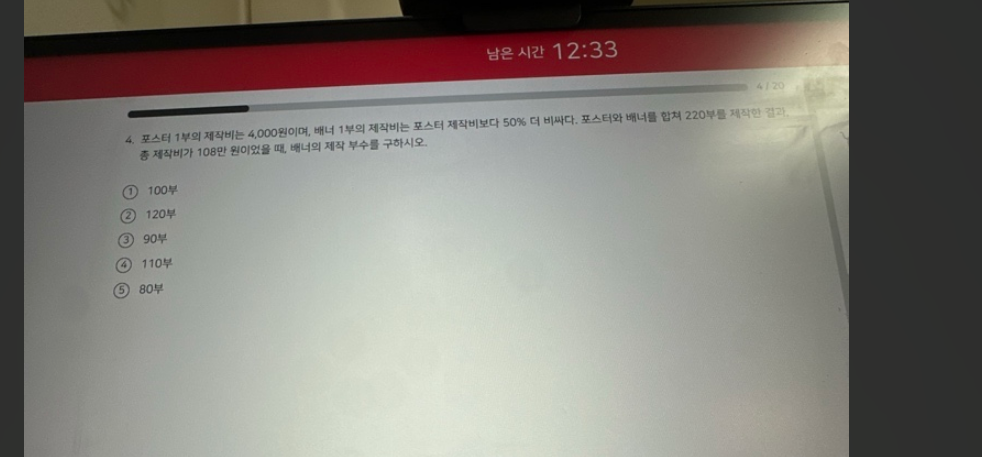
포스터 1부의 제작비는 4,000원이며, 배너 1부의 제작비는 포스터 제작비보다 50% 더 비싸다. 포스터와 배너를 합쳐 220부를 제작한 결과, 총 제작비가 108만 원이었을 때, 배너의 제작 부수를 구하시오.
- ① 100부
- ② 120부
- ③ 90부
- ④ 110부
- ⑤ 80부
⚡ 핵심 풀이 과정 (수식 / 표 / 과정)
포스터 단가=4,000원, 배너 단가=4,000 * 1.5 = 6,000원
4,000(220 - x) + 6,000x = 1,080,000
880,000 + 2,000x = 1,080,000 -> 2,000x = 200,000 -> x = 100부
💡 상세 해설
포스터 단가 = 4,000원, 배너 단가 = 4,000 * 1.50 = 6,000원. 배너 부수 = x부, 포스터 부수 = 220 - x부. 4,000 * (220 - x) + 6,000 * x = 1,080,000 -> 880,000 + 2,000x = 1,080,000 -> 2,000x = 200,000 -> x = 100부.
[3. 수리] 문항 5
✅ 정답
내 답안: 5
실제 정답: 5
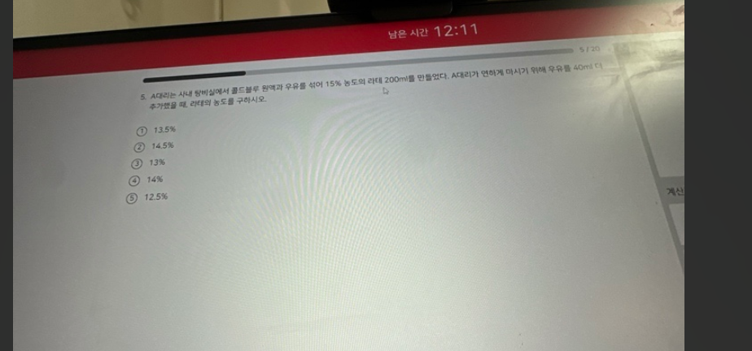
A대리는 사내 탕비실에서 콜드블루 원액과 우유를 섞어 15% 농도의 라테 200ml를 만들었다. A대리가 연하게 마시기 위해 우유를 40ml 더 추가했을 때, 라테의 농도를 구하시오.
- ① 13.5%
- ② 14.5%
- ③ 13%
- ④ 14%
- ⑤ 12.5%
⚡ 핵심 풀이 과정 (수식 / 표 / 과정)
원액량 = 200 * 0.15 = 30ml
총 용량 = 200 + 40 = 240ml
농도 = (30 / 240) * 100% = 1/8 * 100% = 12.5%
💡 상세 해설
기존 라테 내 원액의 양 = 200 * 0.15 = 30ml. 우유 40ml 추가 후 총 용량 = 200 + 40 = 240ml. 새로운 농도 = (30 / 240) * 100% = 12.5%.
[3. 수리] 문항 6
✅ 정답
내 답안: 1
실제 정답: 1
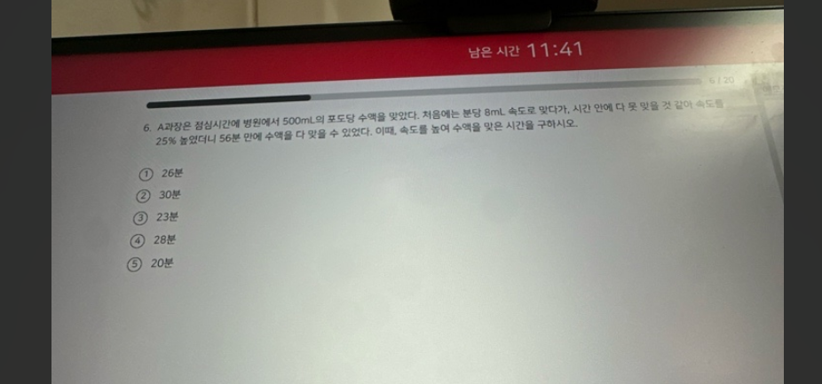
A과장은 점심시간에 병원에서 500mL의 포도당 수액을 맞았다. 처음에는 분당 8mL 속도로 맞다가, 시간 안에 다 못 맞을 것 같아 속도를 25% 높였더니 56분 만에 수액을 다 맞을 수 있었다. 이때, 속도를 높여 수액을 맞은 시간을 구하시오.
- ① 26분
- ② 30분
- ③ 23분
- ④ 28분
- ⑤ 20분
⚡ 핵심 풀이 과정 (수식 / 표 / 과정)
속도1 = 8mL/분, 속도2 = 8 * 1.25 = 10mL/분
8(56 - t) + 10t = 500
448 + 2t = 500 -> 2t = 52 -> t = 26분
💡 상세 해설
초기 속도 = 8mL/분, 증속 후 속도 = 8 * 1.25 = 10mL/분. 속도 높여 맞은 시간 = t분. 8 * (56 - t) + 10 * t = 500 -> 448 + 2t = 500 -> 2t = 52 -> t = 26분.
[3. 수리] 문항 7
✅ 정답
내 답안: 4
실제 정답: 4
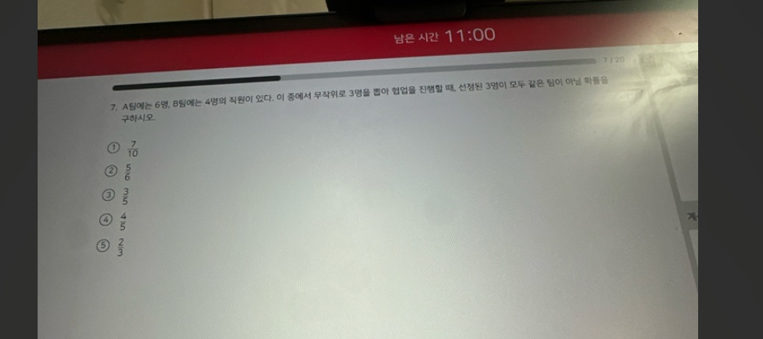
A팀에는 6명, B팀에는 4명의 직원이 있다. 이 중에서 무작위로 3명을 뽑아 협업을 진행할 때, 선정된 3명이 모두 같은 팀이 아닐 확률을 구하시오.
- ① 7/10
- ② 5/6
- ③ 3/5
- ④ 4/5
- ⑤ 2/3
⚡ 핵심 풀이 과정 (수식 / 표 / 과정)
전체 = 10C3 = 120
동일팀 = 6C3 + 4C3 = 20 + 4 = 24
P(동일팀) = 24 / 120 = 1/5 -> P(동일팀 아님) = 1 - 1/5 = 4/5
💡 상세 해설
전체 경우의 수 = 10C3 = (10 * 9 * 8) / (3 * 2 * 1) = 120. 모두 같은 팀일 경우: A팀에서 3명(6C3 = 20) + B팀에서 3명(4C3 = 4) = 24가지. 모두 같은 팀일 확률 = 24 / 120 = 1/5. 여사건(모두 같은 팀이 아닐 확률) = 1 - 1/5 = 4/5.
[3. 수리] 문항 8
✅ 정답
내 답안: 3
실제 정답: 3
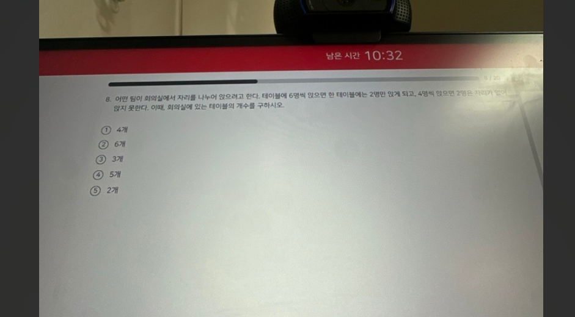
어떤 팀이 회의실에서 자리를 나누어 앉으려고 한다. 테이블에 6명씩 앉으면 한 테이블에는 2명만 앉게 되고, 4명씩 앉으면 2명은 자리가 없어 앉지 못한다. 이때, 회의실에 있는 테이블의 개수를 구하시오.
- ① 4개
- ② 6개
- ③ 3개
- ④ 5개
- ⑤ 2개
⚡ 핵심 풀이 과정 (수식 / 표 / 과정)
테이블 수 = x
인원 = 6(x - 1) + 2 = 4x + 2
6x - 4 = 4x + 2 -> 2x = 6 -> x = 3개
💡 상세 해설
테이블 수를 x개라 하면: 6명씩 앉을 때 사람 수 = 6(x - 1) + 2 = 6x - 4. 4명씩 앉을 때 사람 수 = 4x + 2. 6x - 4 = 4x + 2 -> 2x = 6 -> x = 3개.
[3. 수리] 문항 9
✅ 정답
내 답안: 1
실제 정답: 1
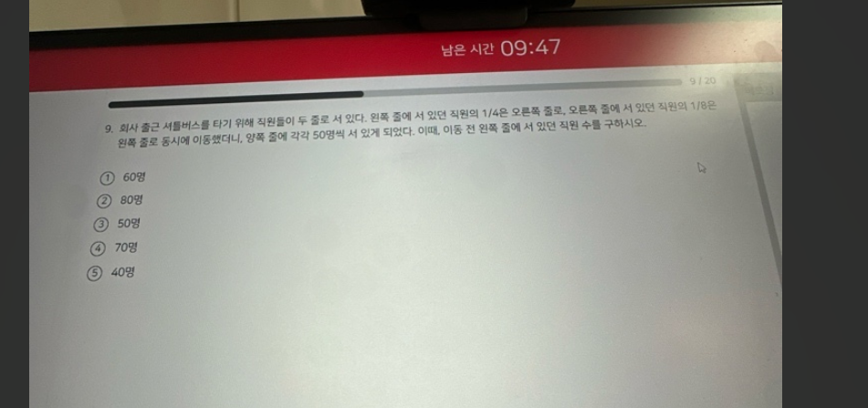
회사 출근 셔틀버스를 타기 위해 직원들이 두 줄로 서 있다. 왼쪽 줄에 서 있던 직원의 1/4은 오른쪽 줄로, 오른쪽 줄에 서 있던 직원의 1/8은 왼쪽 줄로 동시에 이동했더니, 양쪽 줄에 각각 50명씩 서 있게 되었다. 이때, 이동 전 왼쪽 줄에 서 있던 직원 수를 구하시오.
- ① 60명
- ② 80명
- ③ 50명
- ④ 70명
- ⑤ 40명
⚡ 핵심 풀이 과정 (수식 / 표 / 과정)
L + R = 100 -> R = 100 - L
(3/4)L + (1/8)R = 50 -> 6L + R = 400
6L + (100 - L) = 400 -> 5L = 300 -> L = 60명
💡 상세 해설
이동 전 왼쪽 L명, 오른쪽 R명. 전체 L + R = 100명 -> R = 100 - L. 이동 후 왼쪽: (3/4)L + (1/8)R = 50. 양변 * 8: 6L + R = 400. 6L + (100 - L) = 400 -> 5L = 300 -> L = 60명.
[3. 수리] 문항 10
✅ 정답
내 답안: 3
실제 정답: 3
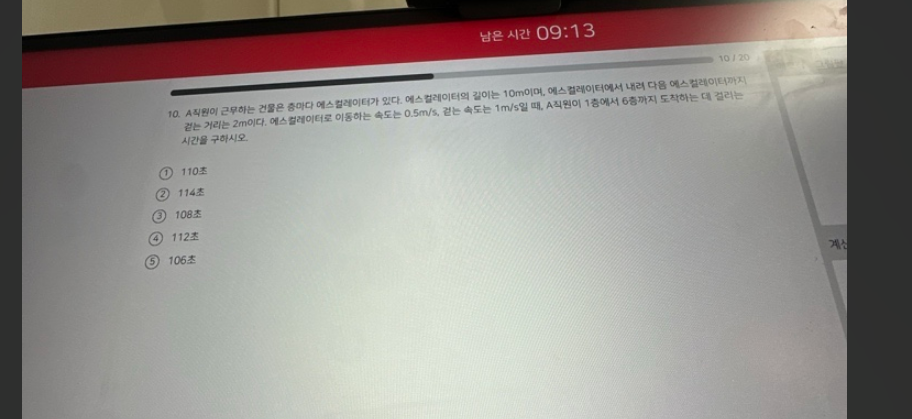
A직원이 근무하는 건물은 층마다 에스컬레이터가 있다. 에스컬레이터의 길이는 10m이며, 에스컬레이터에서 내려 다음 에스컬레이터까지 걷는 거리는 2m이다. 에스컬레이터로 이동하는 속도는 0.5m/s, 걷는 속도는 1m/s일 때, A직원이 1층에서 6층까지 도착하는 데 걸리는 시간을 구하시오.
- ① 110초
- ② 114초
- ③ 108초
- ④ 112초
- ⑤ 106초
⚡ 핵심 풀이 과정 (수식 / 표 / 과정)
에스컬레이터 5구간: 5 * (10 / 0.5) = 5 * 20 = 100초
환승 보행 4구간: 4 * (2 / 1) = 8초
총 시간 = 100 + 8 = 108초
💡 상세 해설
1층->6층 이동: 에스컬레이터 5회 (1->2, 2->3, 3->4, 4->5, 5->6), 환승 걷기 4회 (2, 3, 4, 5층). 에스컬레이터 1회 = 10 / 0.5 = 20초 -> 5 * 20 = 100초. 걷기 1회 = 2 / 1 = 2초 -> 4 * 2 = 8초. 총 시간 = 100 + 8 = 108초.
[3. 수리] 문항 11
✅ 정답
내 답안: 4
실제 정답: 4
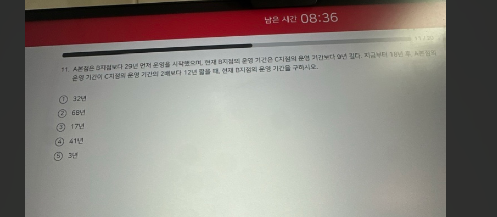
A본점은 B지점보다 29년 먼저 운영을 시작했으며, 현재 B지점의 운영 기간은 C지점의 운영 기간보다 9년 길다. 지금부터 18년 후, A본점의 운영 기간이 C지점의 운영 기간의 2배보다 12년 짧을 때, 현재 B지점의 운영 기간을 구하시오.
- ① 32년
- ② 68년
- ③ 17년
- ④ 41년
- ⑤ 53년
⚡ 핵심 풀이 과정 (수식 / 표 / 과정)
A = B + 29, C = B - 9
18년 후: A+18 = B+47, C+18 = B+9
(B + 47) = 2(B + 9) - 12 -> B + 47 = 2B + 6 -> B = 41년
💡 상세 해설
현재 B 운영 기간 = B. A = B + 29, C = B - 9. 18년 후: A = B + 47, C = B + 9. B + 47 = 2(B + 9) - 12 -> B + 47 = 2B + 6 -> B = 41년.
[3. 수리] 문항 12
✅ 정답
내 답안: 1
실제 정답: 1
어떤 상품의 제품명을 정할 때, 단어 A, B, C 중 하나 이상을 골라 나열하여 만든다. 이때, 제품명에 단어 A가 포함될 확률을 구하시오. (단, 각 단어는 한 번만 사용할 수 있다.)
- ① 11/15
- ② 13/15
- ③ 2/3
- ④ 4/5
- ⑤ 3/5
⚡ 핵심 풀이 과정 (수식 / 표 / 과정)
전체 = 3P1 + 3P2 + 3P3 = 3 + 6 + 6 = 15
A 제외(B,C만) = 2P1 + 2P2 = 2 + 2 = 4
P(A 포함) = 1 - 4/15 = 11/15
💡 상세 해설
전체 제품명 수 = 3P1 + 3P2 + 3P3 = 3 + 6 + 6 = 15가지. A가 포함되지 않는 경우(B, C만 사용) = 2P1 + 2P2 = 2 + 2 = 4가지. A가 포함될 확률 = 1 - (4 / 15) = 11/15.
[3. 수리] 문항 13
✅ 정답
내 답안: 5
실제 정답: 5
P기업은 6명의 직원을 자료 조사팀 3명과 보고서 작성팀 3명으로 나누려고 한다. A직원과 B직원을 서로 다른 팀의 팀장으로 배치해야 한다고 할 때, 팀을 나누는 경우의 수를 구하시오.
- ① 18가지
- ② 24가지
- ③ 16가지
- ④ 20가지
- ⑤ 12가지
⚡ 핵심 풀이 과정 (수식 / 표 / 과정)
팀장 배정: 2! = 2가지
팀원 배정: 4C2 * 2C2 = 6가지
총 경우의 수 = 2 * 6 = 12가지
💡 상세 해설
팀장 배치(A=조사팀장, B=작성팀장 또는 반대) = 2가지. 나머지 4명의 팀원을 조사팀 2명, 작성팀 2명으로 배정하는 경우의 수 = 4C2 = 6가지. 총 경우의 수 = 2 * 6 = 12가지.
[3. 수리] 문항 14
✅ 정답
내 답안: 1
실제 정답: 1
명절 선물용으로 제품을 10,000개 생산하여 원가에 25%의 이익을 붙여 정가를 정했으나 한 개도 판매되지 않았다. 손해를 보지 않고 모든 제품을 정가에서 할인해 판매하려 할 때, 최대 할인율을 구하시오.
- ① 20%
- ② 25%
- ③ 18%
- ④ 22%
- ⑤ 15%
⚡ 핵심 풀이 과정 (수식 / 표 / 과정)
원가 = 100 -> 정가 = 125
최대 할인(판매가=원가): 할인액 = 125 - 100 = 25
할인율 = (25 / 125) * 100% = 20%
💡 상세 해설
원가 = 100, 정가 = 100 * 1.25 = 125. 손해를 보지 않으려면 판매가 >= 100. 최대 할인 시 판매가 = 100. 정가 기준 할인율 = (125 - 100) / 125 * 100% = 25 / 125 * 100% = 20%.
[3. 수리] 문항 15
✅ 정답
내 답안: 5
실제 정답: 5
어떤 일을 1시간 동안 완성하기 위해 A기계 2대와 B기계 5대를 구매했다. 하루는 B기계 5대만으로 작업했더니 일을 완성하는 데 2시간이 걸렸다. 이때, A기계만 사용하여 1시간 안에 일을 완성하려면 A기계를 추가로 몇 대 구매해야 하는지 구하시오.
- ① 4대
- ② 6대
- ③ 3대
- ④ 5대
- ⑤ 2대
⚡ 핵심 풀이 과정 (수식 / 표 / 과정)
B 5대 1시간 일량 = 1/2 = 0.5
A 2대 1시간 일량 = 1 - 0.5 = 0.5 -> A 1대 = 0.25
필요 대수 = 1 / 0.25 = 4대 -> 추가 구매 = 4 - 2 = 2대
💡 상세 해설
전체 일량 = W. B기계 5대의 1시간 일량 = W / 2 = 0.5W. A 2대 + B 5대 = W -> A 2대의 1시간 일량 = W - 0.5W = 0.5W -> A 1대 = 0.25W. A만으로 1시간에 W 완료에 필요한 대수 = W / 0.25W = 4대. 기존 2대 보유 -> 추가 구매 대수 = 4 - 2 = 2대.
[3. 수리] 문항 16
✅ 정답
내 답안: 3
실제 정답: 3
P사원은 신제품 판촉을 위해 A지역, B지역, C지역, D지역, E지역을 모두 한 번씩 방문해야 한다. B지역과 C지역은 연속해서 방문할 수 없을 때, 가능한 출장 경로의 수를 구하시오.
- ① 60가지
- ② 36가지
- ③ 72가지
- ④ 48가지
- ⑤ 96가지
⚡ 핵심 풀이 과정 (수식 / 표 / 과정)
전체 = 5! = 120
B, C 이웃 = 4! * 2! = 24 * 2 = 48
이웃하지 않는 경우 = 120 - 48 = 72가지
💡 상세 해설
전체 5개 지역 나열 = 5! = 120가지. B와 C를 연속 방문하는 경우: (B, C)를 한 묶음 취급 -> 묶음 내부 2!, 전체 4덩어리 나열 4! -> 2 * 24 = 48가지. 연속 방문하지 않는 경우의 수 = 120 - 48 = 72가지.
[3. 수리] 문항 17
✅ 정답
내 답안: 2
실제 정답: 2
A창고는 14일마다, B창고는 18일마다 정기적으로 재고 점검을 진행하며, 두 창고 모두 오늘 점검을 진행했다. 이후 A창고의 점검 주기를 기존보다 이틀 짧게 변경했을 때, 두 창고가 다시 같은 날 점검하게 되는 시점은 변경 전보다 며칠 빨라지는지 구하시오.
- ① 72일
- ② 90일
- ③ 36일
- ④ 84일
- ⑤ 6일
⚡ 핵심 풀이 과정 (수식 / 표 / 과정)
변경 전: LCM(14, 18) = 126일
변경 후: A=12일 -> LCM(12, 18) = 36일
차이 = 126 - 36 = 90일 단축
💡 상세 해설
변경 전 주기: LCM(14, 18) = 126일. 변경 후 A창고 주기 = 14 - 2 = 12일. 변경 후 주기: LCM(12, 18) = 36일. 빨라지는 일수 = 126 - 36 = 90일.
[3. 수리] 문항 18
✅ 정답
내 답안: 4
실제 정답: 4
A와 B는 같은 목적지로 출장을 간다. A는 먼저 출발하여 시속 60km로 이동하고, B는 A가 출발한 지 30분 뒤에 시속 90km로 같은 경로를 따라 출발했다. 두 사람이 동시에 목적지에 도착했을 때, 두 사람이 이동한 거리를 구하시오.
- ① 75km
- ② 105km
- ③ 60km
- ④ 90km
- ⑤ 45km
⚡ 핵심 풀이 과정 (수식 / 표 / 과정)
d / 60 - d / 90 = 1/2
(3d - 2d) / 180 = 1/2 -> d / 180 = 1/2 -> d = 90km
💡 상세 해설
이동 거리를 d km라 하면: A 소요 시간 - B 소요 시간 = 30분 = 0.5시간. d / 60 - d / 90 = 1/2. 양변 * 180: 3d - 2d = 90 -> d = 90km.
[3. 수리] 문항 19
✅ 정답
내 답안: 4
실제 정답: 4
불우 이웃 돕기 기금을 마련하려고 열흘 동안 4,000원짜리 도시락을 팔기로 했다. 판매가의 55%는 원가이며, 원가를 제외한 금액은 전액 기금으로 사용된다. 기금 목표액이 540만 원 이상일 때, 하루 평균 몇 개 이상의 도시락을 팔아야 하는지 구하시오.
- ① 280개
- ② 320개
- ③ 265개
- ④ 300개
- ⑤ 245개
⚡ 핵심 풀이 과정 (수식 / 표 / 과정)
개당 기금 = 4,000 * 0.45 = 1,800원
10일간 기금 = 1,800 * 10 * x = 18,000x >= 5,400,000
x >= 5,400,000 / 18,000 = 300개
💡 상세 해설
도시락 1개당 기금 = 4,000 * (1 - 0.55) = 4,000 * 0.45 = 1,800원. 10일간 총 판매량 = 10 * x개. 총 기금 = 10 * x * 1,800 = 18,000x >= 5,400,000 -> x >= 5,400,000 / 18,000 = 300개.
[3. 수리] 문항 20
✅ 정답
내 답안: 3
실제 정답: 3
유속이 시속 4km인 강에서 A보트는 상류에서 하류까지 이동하는데 6시간, 하류에서 상류로 돌아오는 데 10시간이 걸렸다. 이때, 강의 길이를 구하시오.
- ① 110km
- ② 90km
- ③ 120km
- ④ 100km
- ⑤ 130km
⚡ 핵심 풀이 과정 (수식 / 표 / 과정)
(v + 4) * 6 = (v - 4) * 10
6v + 24 = 10v - 40 -> 4v = 64 -> v = 16 km/h
강의 길이 d = (16 + 4) * 6 = 120km
💡 상세 해설
보트 자체 속력을 v km/h, 강의 길이를 d km라 하면: d = (v + 4) * 6 = (v - 4) * 10. 6v + 24 = 10v - 40 -> 4v = 64 -> v = 16 km/h. 강의 길이 d = (16 + 4) * 6 = 20 * 6 = 120km.
4. 추리
조건추리 및 논리 퍼즐 (20문항)
[4. 추리] 문항 1
✅ 정답
내 답안: 2
실제 정답: 2
어떤 회사가 신제품 A, B, C, D, E를 서로 다른 순서로 공개했다. 다음 조건을 고려할 때, D를 공개한 순서를 고르시오.
[조건]
- D는 A와 B를 공개한 순서 사이에 공개했다.
- C와 E는 연달아 공개하지 않았다.
- E는 네 번째보다 이른 순서로 공개했다.
- C는 세 번째 순서로 공개했다.
- ① 첫 번째
- ② 네 번째
- ③ 두 번째
- ④ 다섯 번째
- ⑤ 세 번째
⚡ 핵심 풀이 과정 (수식 / 표 / 과정)
조건 기호:
- A < D < B 또는 B < D < A
- |C - E| > 1
- E < 4
- C = 3
[표 1: 조건 반영 표]
| 순서 | 1번 | 2번 | 3번 | 4번 | 5번 |
| :---: | :---: | :---: | :---: | :---: | :---: |
| 제품 | E / ? | E 불가 | C | ? | ? |
[표 2: 추리 완료 표]
| 순서 | 1번 | 2번 | 3번 | 4번 | 5번 |
| :---: | :---: | :---: | :---: | :---: | :---: |
| 제품 | E | A / B | C | **D** | B / A |
-> D는 4번째
💡 상세 해설
C가 3번째이고 C와 E가 연달아 있지 않으므로 E는 2번째가 아님. E < 4이므로 E는 1번째 확정. 2, 4, 5번째에 A, B, D가 배치되며 D가 A와 B 사이에 위치해야 하므로 D는 반드시 4번째에 위치함.
[4. 추리] 문항 2
✅ 정답
내 답안: 5
실제 정답: 5
어떤 식료품 회사에서 과자 (가), (나)를 만들기 위해 성분 A, B, C, D, E, F를 사용한다. 다음 조건을 고려할 때, 각 과자를 만들기 위해 필요한 성분의 개수가 바르게 짝지어진 것을 고르시오. (단, 각 성분은 둘 중 하나의 과자에만 사용된다.)
[조건]
- A는 (가)에, C는 (나)에 사용된다.
- D와 F는 다른 과자에 사용된다.
- B는 (나)에 사용되지 않는다.
- C는 E와 같은 과자에, F와는 다른 과자에 사용된다.
- ① (가): 1가지 / (나): 5가지
- ② (가): 4가지 / (나): 2가지
- ③ (가): 2가지 / (나): 4가지
- ④ (가): 5가지 / (나): 1가지
- ⑤ (가): 3가지 / (나): 3가지
⚡ 핵심 풀이 과정 (수식 / 표 / 과정)
조건 기호:
- A: (가), C: (나)
- D != F
- B: (가)
- C = E, C != F
[표 1: 조건 반영 표]
| 성분 | A | B | C | D | E | F |
| :---: | :---: | :---: | :---: | :---: | :---: | :---: |
| 과자 | (가) | (가) | (나) | ? | (나) | ? |
[표 2: 추리 완료 표]
| 성분 | A | B | C | D | E | F |
| :---: | :---: | :---: | :---: | :---: | :---: | :---: |
| 과자 | (가) | (가) | (나) | (나) | (나) | (가) |
-> (가): 3가지 (A, B, F), (나): 3가지 (C, D, E)
💡 상세 해설
A: (가), B: (가), C: (나). C=E이므로 E: (나). C!=F이므로 F: (가). D!=F이므로 D: (나). 따라서 (가)에는 A, B, F (3가지), (나)에는 C, D, E (3가지)가 사용됨.
[4. 추리] 문항 3
✅ 정답
내 답안: 2
실제 정답: 2
자판기 A, B, C, D, E를 5층짜리 건물의 서로 다른 층에 배치한다. 다음 조건을 바탕으로 추론할 때, 항상 옳다고 볼 수 없는 것을 고르시오.
[조건]
- B와 D는 연이은 층에 배치한다.
- C는 2층에 배치한다.
- A는 E보다 높은 층에 배치한다.
- A는 B보다 높은 층에 배치한다.
- ① A는 5층에 배치한다.
- ② C와 B는 연이은 층에 배치한다.
- ③ E는 1층에 배치한다.
- ④ D와 E는 연이은 층에 배치하지 않는다.
- ⑤ B는 C보다 높은 층에 배치한다.
⚡ 핵심 풀이 과정 (수식 / 표 / 과정)
조건 기호:
- |B - D| = 1
- C = 2
- A > E, A > B
[표 1: 조건 반영 표]
| 층수 | 1층 | 2층 | 3층 | 4층 | 5층 |
| :---: | :---: | :---: | :---: | :---: | :---: |
| 자판기 | ? | C | ? | ? | ? |
[표 2: 추리 완료 표]
| 층수 | 1층 | 2층 | 3층 | 4층 | 5층 |
| :---: | :---: | :---: | :---: | :---: | :---: |
| 케이스1 | E | C | B | D | A |
| 케이스2 | E | C | D | B | A |
-> 케이스2에서 C(2층)-D(3층)-B(4층)이므로 C와 B는 연이은 층 아님 (②번 항상 옳지 않음)
💡 상세 해설
C=2층. B, D는 이웃하고 A > B이므로 B, D는 3, 4층 차지. A > E이므로 A=5층, E=1층. 이때 (B, D)는 (3층, 4층) 또는 (4층, 3층) 가능. D가 3층, B가 4층인 경우 C(2층)와 B(4층)는 연이은 층이 아니므로 ②번은 항상 옳다고 볼 수 없음.
[4. 추리] 문항 4
✅ 정답
내 답안: 3
실제 정답: 3
어떤 식당의 특선 코스에는 메뉴 A, B, C, D, E 중 일부가 포함된다. 다음 정보가 모두 거짓일 때, 특선 코스에 포함되는 메뉴가 모두 바르게 나열된 것을 고르시오.
[조건]
- A는 특선 코스에 포함되지 않는다.
- E는 특선 코스에 포함된다.
- B, D 중 특선 코스에 포함되는 메뉴가 있다.
- C, E 모두 특선 코스에 포함되지 않는다.
- ① A
- ② B, C
- ③ A, C
- ④ C, D
- ⑤ A, B, E
⚡ 핵심 풀이 과정 (수식 / 표 / 과정)
조건 기호 및 반전 (모두 F -> 부정은 T):
- ~(~A) = T -> A: O
- ~E = T -> E: X
- ~(B ∨ D) = T -> B: X, D: X
- ~(~C ∧ ~E) = C ∨ E = T -> E: X이므로 C: O
[표 1: 조건 참거짓 표]
| 정보 | 원 진술 | 진위 | 반전 명제 |
| :---: | :---: | :---: | :---: |
| 1 | ~A | F | A: O |
| 2 | E | F | E: X |
| 3 | B ∨ D | F | B: X, D: X |
| 4 | ~C ∧ ~E | F | C ∨ E: T |
[표 2: 메뉴 포함 여부 표]
| 메뉴 | A | B | C | D | E |
| :---: | :---: | :---: | :---: | :---: | :---: |
| 포함 | O | X | O | X | X |
-> 포함 메뉴: A, C
💡 상세 해설
주어진 정보가 모두 F이므로 반대 명제가 모두 T임. 1) ~A가 F -> A: O. 2) E가 F -> E: X. 3) B ∨ D가 F -> B: X, D: X. 4) ~C ∧ ~E가 F -> C ∨ E가 T. E: X이므로 C: O. 따라서 포함되는 메뉴는 A, C임.
[4. 추리] 문항 5
✅ 정답
내 답안: 1
실제 정답: 1
인턴 A, B, C, D 중 2명은 1월, 1명은 3월, 1명은 7월에 근무를 시작했다. 또 2명은 사내 동호회에 가입했지만, 다른 2명은 가입하지 않았다. 다음 조건을 고려할 때, 항상 옳은 것을 고르시오.
[조건]
- A는 사내 동호회에 가입했다.
- C가 근무를 시작한 달은 3월이 아니다.
- D와 B는 근무를 시작한 달이 같다.
- B와 C는 동호회 가입 여부가 같다.
- ① A는 3월에 근무를 시작했다.
- ② D는 사내 동호회에 가입하지 않았다.
- ③ B는 사내 동호회에 가입했다.
- ④ A, C는 근무를 시작한 달이 같다.
- ⑤ C는 1월에 근무를 시작했다.
⚡ 핵심 풀이 과정 (수식 / 표 / 과정)
조건 기호:
- D_달 = B_달 -> D, B: 1월 (2명인 달은 1월뿐)
- C_달 != 3월 -> C: 7월, A: 3월
- A_동 = O
- B_동 = C_동 -> B, C 둘 다 O면 O가 3명 -> B, C: X -> D: O
[표 1: 조건 매칭 표 (선지 조건)]
| 인턴 | 1월 | 3월 | 7월 | 동호회 |
| :---: | :---: | :---: | :---: | :---: |
| A | X | ? | ? | O |
| B | ? | X | X | ? |
| C | X | X | ? | ? |
| D | ? | X | X | ? |
[표 2: 추리 완료 표]
| 인턴 | 1월 | 3월 | 7월 | 동호회 |
| :---: | :---: | :---: | :---: | :---: |
| A | X | **O** | X | O |
| B | O | X | X | X |
| C | X | X | O | X |
| D | O | X | X | O |
-> ① A는 3월에 근무를 시작했다 (항상 참)
💡 상세 해설
근무월(1월 2명, 3월 1명, 7월 1명). D=B이므로 D, B는 1월 확정. C!=3월이므로 C는 7월, A는 3월 확정. 동호회(가입 2명, 미가입 2명). A=가입(O). B=C인데 둘 다 가입이면 가입자 3명으로 모순 -> B, C는 미가입(X). 따라서 D는 가입(O).
[4. 추리] 문항 6
✅ 정답
내 답안: 5
실제 정답: 5
어떤 단지의 1호부터 5호 중 가스 점검을 한 곳이 있다. 1호는 점검하지 않았을 때, 다음 조건에 따라 가스 점검을 한 집은 총 몇 곳인지 고르시오.
[조건]
- 2호와 4호가 점검했다면 1호도 점검했다.
- 1호 또는 3호가 점검했다면 5호도 점검했다.
- 3호가 점검하지 않았다면 1호는 점검했다.
- 5호가 점검했다면 2호 또는 4호도 점검했다.
- ① 1곳
- ② 4곳
- ③ 2곳
- ④ 5곳
- ⑤ 3곳
⚡ 핵심 풀이 과정 (수식 / 표 / 과정)
조건 기호:
- ~1 (전제)
- (2 ∧ 4) -> 1
- (1 ∨ 3) -> 5
- ~3 -> 1
- 5 -> (2 ∨ 4)
추리 단계:
~1 -> 3: O -> 5: O -> (2 ∨ 4): O.
~1 -> ~(2 ∧ 4) -> 2호, 4호 중 정확히 1곳만 O.
[표 1: 호수별 조건 점검 표]
| 호수 | 1호 | 2호 | 3호 | 4호 | 5호 |
| :---: | :---: | :---: | :---: | :---: | :---: |
| 점검 | X | ? | ? | ? | ? |
[표 2: 호수별 확정 표]
| 호수 | 1호 | 2호 | 3호 | 4호 | 5호 |
| :---: | :---: | :---: | :---: | :---: | :---: |
| 점검 | X | O/X | O | X/O | O |
-> 총 점검 가구: 3, 5, (2 또는 4) = 3곳
💡 상세 해설
전제: 1호: X. 조건3(~3 -> 1)의 대우(~1 -> 3)에 의해 3호: O. 3호: O이므로 조건2에 의해 5호: O. 5호: O이므로 조건4에 의해 (2 ∨ 4): O. 조건1((2 ∧ 4) -> 1)의 대우(~1 -> ~(2 ∧ 4))에 의해 2호와 4호 동시 점검 불가. 따라서 2, 4호 중 정확히 1곳만 점검. 점검한 집 = 3호, 5호, (2호 또는 4호 중 1곳) = 총 3곳.
[4. 추리] 문항 7
✅ 정답
내 답안: 3
실제 정답: 3
A, B, C, D 중 1명이 학생회장으로 당선되었다. 4명 중 1명만 거짓을 말하고 있을 때, 당선된 사람과 거짓을 말한 사람이 순서대로 바르게 나열된 것을 고르시오.
[조건]
- A: B와 C 모두 당선되지 못했다.
- B: A 또는 C가 당선되었다.
- C: D는 당선되지 못했다.
- D: 당선된 사람은 B이다.
- ① A, A
- ② B, D
- ③ A, D
- ④ C, A
- ⑤ B, B
⚡ 핵심 풀이 과정 (수식 / 표 / 과정)
조건 기호:
- 당선자=1명, F=1명, T=3명
- A: ~B ∧ ~C
- B: A ∨ C
- C: ~D
- D: B
[표 1: 당선자 가설 검증 표]
| 가설 (당선자) | A 진술 | B 진술 | C 진술 | D 진술 | F 인원 | 성립 여부 |
| :---: | :---: | :---: | :---: | :---: | :---: | :---: |
| A 당선 | T | T | T | F | 1명 | **성립** |
| B 당선 | F | F | T | T | 2명 | 모순 |
| C 당선 | F | T | T | F | 2명 | 모순 |
| D 당선 | T | F | F | F | 3명 | 모순 |
[표 2: 최종 확정 표]
| 대상 | A | B | C | D |
| :---: | :---: | :---: | :---: | :---: |
| 당선 | **O** | X | X | X |
| 진위 | T | T | T | **F** |
-> 당선: A, 거짓: D
💡 상세 해설
당선자 1명, 거짓(F) 1명. A가 당선인 경우: A의 말(~B ∧ ~C) = T, B의 말(A ∨ C) = T, C의 말(~D) = T, D의 말(B) = F. T 3명, F 1명으로 완벽히 성립. 다른 경우(B, C, D 당선)는 모두 F가 2명 이상 발생함. 따라서 당선자: A, 거짓말한 사람: D.
[4. 추리] 문항 8
✅ 정답
내 답안: 5
실제 정답: 5
다음 조건을 고려할 때, 항상 옳은 것을 고르시오.
[조건]
- A 전무가 마우스를 교체하면 B 과장도 마우스를 교체한다.
- A 전무가 마우스를 교체하지 않으면 D 차장이 마우스를 교체한다.
- C 대리가 마우스를 교체하지 않으면 B 과장이 마우스를 교체한다.
- ① B 과장이 마우스를 교체하면 D 차장이 마우스를 교체한다.
- ② B 과장이 마우스를 교체하면 C 대리가 마우스를 교체한다.
- ③ C 대리가 마우스를 교체하면 B 과장이 마우스를 교체한다.
- ④ A 전무가 마우스를 교체하면 D 차장이 마우스를 교체하지 않는다.
- ⑤ D 차장이 마우스를 교체하지 않으면 B 과장은 마우스를 교체한다.
⚡ 핵심 풀이 과정 (수식 / 표 / 과정)
조건 기호:
1) A -> B
2) ~A -> D (대우: ~D -> A)
3) ~C -> B (대우: ~B -> C)
삼단논법 연결:
~D -> A -> B ==> ~D -> B
따라서 'D 차장이 마우스를 교체하지 않으면 B 과장은 마우스를 교체한다' (⑤번) 항상 참.
💡 상세 해설
조건1: A -> B. 조건2: ~A -> D (대우: ~D -> A). 조건3: ~C -> B (대우: ~B -> C). 삼단논법: ~D -> A 이고 A -> B 이므로 ~D -> B 가 반드시 성립함. 즉 'D 차장이 교체하지 않으면 B 과장은 교체한다'는 항상 옳음.
[4. 추리] 문항 9
✅ 정답
내 답안: 4
실제 정답: 4
어떤 예능 프로그램의 참가자 A, B, C, D, E 중 2명이 거짓을 말하고 있을 때, 다음 진술에 따라 거짓을 말하는 2명이 모두 바르게 짝지어진 것을 고르시오.
[조건]
- A: C는 거짓을 말하고 있다.
- B: E는 진실을 말하고 있다.
- C: D는 진실을 말하고 있다.
- D: B는 거짓을 말하고 있다.
- E: 나는 진실을 말하고 있다.
- ① A, C
- ② B, E
- ③ A, E
- ④ C, D
- ⑤ B, D
⚡ 핵심 풀이 과정 (수식 / 표 / 과정)
조건 기호:
- A: ~C (A != C)
- B: E (B = E)
- C: D (C = D)
- D: ~B (D != B)
- E: T (E = T)
[표 1: 그룹 진위 대조 표]
| 가설 | B, E | C, D | A (C의 부정) | F 인원 | 성립 여부 |
| :---: | :---: | :---: | :---: | :---: | :---: |
| 1 | F | T | F | 3명 | 모순 (F=2명이어야 함) |
| 2 | **T** | **F** | **T** | **2명** | **성립 (C, D 거짓)** |
[표 2: 최종 확정 표]
| 인물 | A | B | C | D | E |
| :---: | :---: | :---: | :---: | :---: | :---: |
| 진위 | T | T | **F** | **F** | T |
-> 거짓: C, D
💡 상세 해설
진실(T) 3명, 거짓(F) 2명. B 진술에 의해 B=E. C 진술에 의해 C=D. D 진술(B는 거짓)에 의해 D!=B. 따라서 {B, E}와 {C, D}는 서로 반대 진위. 만약 {B, E}가 F면 B=F, E=F(2명 거짓)이고 C=T, D=T. 이때 A 진술(C는 거짓)은 거짓이 되어 F가 3명 발생해 모순. 따라서 {B, E}는 T(진실), {C, D}는 F(거짓), A는 T. 거짓을 말하는 사람은 C, D임.
[4. 추리] 문항 10
✅ 정답
내 답안: 2
실제 정답: 2
과장 A, B, C, D, E 중 일부가 고객사 미팅에 참석한다. 다음 결론이 참일 때, 빈칸에 알맞은 전제를 고르시오.
[조건]
- 전제1: B가 참석하면 A는 참석하지 않는다. (B -> ~A)
- 전제2: C가 참석하지 않으면 D는 참석한다. (~C -> D)
- 전제3: E가 참석하면 D는 참석하지 않는다. (E -> ~D)
- 전제4: ______________________
- 결론: E가 참석하면 B는 참석하지 않는다. (E -> ~B)
- ① A가 참석하지 않으면 C는 참석한다.
- ② C가 참석하면 A도 참석한다.
- ③ B가 참석하면 C도 참석한다.
- ④ D가 참석하면 E는 참석하지 않는다.
- ⑤ B가 참석하지 않으면 D가 참석한다.
⚡ 핵심 풀이 과정 (수식 / 표 / 과정)
조건 기호 및 삼단논법 체인:
- 전제3: E -> ~D
- 전제2(대우): ~D -> C ==> E -> C
- 전제1(대우): A -> ~B
- 목표: E -> ~B
연결 필요 조건: C -> A
(E -> C -> A -> ~B)
따라서 전제4 = C -> A ('C가 참석하면 A도 참석한다') -> ②번
💡 상세 해설
전제3(E -> ~D)과 전제2 대우(~D -> C)를 연결하면: E -> C. 전제1 대우: A -> ~B. 결론 E -> ~B를 도출하려면 C -> A라는 연결고리가 필요함. 따라서 전제4는 'C가 참석하면 A도 참석한다(C -> A)'임.
[4. 추리] 문항 11
⏭️ SKIP
내 답안: X
실제 정답: SKIP
미기재 문제 (사용자 미응시/문제 없음)
[조건]
- 11. X로 표기됨
⚡ 핵심 풀이 과정 (수식 / 표 / 과정)
SKIP (이미지 미제공 및 미응시)
💡 상세 해설
원본 문서에 문제 이미지가 미포함되었으며 사용자가 풀지 않고 넘어감(11.X). 규정에 따라 SKIP 처리함.
[4. 추리] 문항 12
⏭️ SKIP
내 답안: X
실제 정답: SKIP
미기재 문제 (사용자 미응시/문제 없음)
[조건]
- 12. X로 표기됨
⚡ 핵심 풀이 과정 (수식 / 표 / 과정)
SKIP (이미지 미제공 및 미응시)
💡 상세 해설
원본 문서에 문제 이미지가 미포함되었으며 사용자가 풀지 않고 넘어감(12.X). 규정에 따라 SKIP 처리함.
[4. 추리] 문항 13
✅ 정답
내 답안: 3
실제 정답: 3
원자재 A, B, C, D를 일정한 조건에 따라 발주하려고 한다. 다음 조건을 고려할 때, 항상 옳은 것을 고르시오.
[조건]
- A를 발주하면 B도 발주한다.
- C를 발주하지 않으면 B는 발주한다.
- B를 발주하지 않으면 D도 발주하지 않는다.
- C를 발주하면 D도 발주한다.
- ① A를 발주한다.
- ② A를 발주하지 않으면 D도 발주하지 않는다.
- ③ B를 발주한다.
- ④ C를 발주하지 않으면 A도 발주하지 않는다.
- ⑤ D는 발주하지 않는다.
⚡ 핵심 풀이 과정 (수식 / 표 / 과정)
조건 기호:
1) A -> B
2) ~C -> B
3) ~B -> ~D (대우: D -> B)
4) C -> D
삼단논법:
C -> D -> B ==> C -> B
~C -> B
(C ∨ ~C) = T 이므로 B는 무조건 T.
-> ③ B를 발주한다 (O)
💡 상세 해설
조건4: C -> D. 조건3 대우: D -> B. 따라서 C -> B. 조건2: ~C -> B. 배중률(C ∨ ~C는 항상 참)에 의해 C의 발주 여부와 무관하게 B는 항상 발주됨. 따라서 'B를 발주한다'는 항상 옳음.
[4. 추리] 문항 14
✅ 정답
내 답안: 2
실제 정답: 2
신입사원 A~F 6명은 다음과 같은 구역에 자리를 배치받았다. 다음 조건을 고려할 때, 4번 자리에 앉는 신입사원을 고르시오. (단, 1열과 2열은 가림막을 사이에 두고 서로 마주 보고 앉는다.)
[조건]
- A는 1열, D는 2열에 앉는다.
- B, C는 같은 열에 앉지만, 서로 인접한 자리에 앉지는 않는다.
- F는 E의 바로 오른쪽 자리에 앉는다.
- B는 홀수 번호의 자리에 앉는다.
- D는 가장 큰 번호의 자리에 앉지 않는다.
- ① A
- ② D
- ③ B
- ④ E
- ⑤ C
⚡ 핵심 풀이 과정 (수식 / 표 / 과정)
조건 기호:
- A ∈ 1열, D ∈ 2열
- B, C 동열, 비인접 -> 양 끝 자리
- B ∈ 홀수 -> B, C는 1열(1, 3번) 확정, A = 2번
- F = E + 1 (2열 내 연속)
- D != 6번 -> D = 4번, E = 5번, F = 6번
[표 1: 조건 기반 열 배치 표]
| 열 | 좌측 | 중앙 | 우측 |
| :---: | :---: | :---: | :---: |
| 1열 (1~3번) | 1번: B/C | 2번: A | 3번: C/B |
| 2열 (4~6번) | 4번: ? | 5번: ? | 6번: D불가 |
[표 2: 최종 좌석 확정 표]
| 열 | 좌측 | 중앙 | 우측 |
| :---: | :---: | :---: | :---: |
| 1열 | 1번: B (또는 C) | 2번: A | 3번: C (또는 B) |
| 2열 | **4번: D** | 5번: E | 6번: F |
-> 4번 자리: D
💡 상세 해설
B, C는 같은 열 양 끝(1, 3 또는 4, 6)에 위치. B는 홀수이므로 B, C는 1열(1번, 3번) 확정. 1열 남은 자리 2번은 A. 2열에는 D, E, F가 위치. F는 E의 바로 오른쪽이므로 (E, F)는 연속. D != 6번이므로 D는 4번, E는 5번, F는 6번 확정. 따라서 4번 자리에 앉는 신입사원은 D임.
[4. 추리] 문항 15
✅ 정답
내 답안: 5
실제 정답: 5
직원 A, B, C, D, E 중 3명이 부서 대표로 세미나에 참석한다. 다음 조건을 고려할 때, 세미나에 참석하는 인원이 모두 바르게 나열된 것을 고르시오.
[조건]
- A와 C 모두 불참할 수는 없다.
- B와 D가 모두 참석하면 E도 참석한다.
- D와 E가 모두 참석하지 않으면 A와 C도 모두 참석하지 않는다.
- E는 참석하지 않는다.
- ① A, B, C
- ② B, C, D
- ③ A, B, D
- ④ B, C, E
- ⑤ A, C, D
⚡ 핵심 풀이 과정 (수식 / 표 / 과정)
조건 기호:
- 참석=3, 불참=2
- A ∨ C = T
- (B ∧ D) -> E
- (~D ∧ ~E) -> (~A ∧ ~C) (대우: (A ∨ C) -> (D ∨ E))
- E: X
추론 체인:
E: X -> ~(B ∧ D) -> B, D 중 최소 1명 불참.
불참자 총 2명(E + B/D) -> A: O, C: O 확정.
(A ∨ C) 참 -> (D ∨ E) 참. E: X이므로 D: O 확정 -> B: X 확정.
[표 1: 참석 인원 조건 표]
| 대상 | A | B | C | D | E |
| :---: | :---: | :---: | :---: | :---: | :---: |
| 참석 | ? | ? | ? | ? | X |
[표 2: 최종 확정 표]
| 대상 | A | B | C | D | E |
| :---: | :---: | :---: | :---: | :---: | :---: |
| 참석 | **O** | X | **O** | **O** | X |
-> 참석자: A, C, D
💡 상세 해설
참석 3명, 불참 2명. E 불참 확정(E: X). 조건2((B ∧ D) -> E)에서 E: X이므로 B와 D는 동시 참석 불가 -> B, D 중 적어도 1명 불참. 총 불참자가 2명이므로 불참자는 E와 (B 또는 D 중 1명). 따라서 A와 C는 무조건 참석(A: O, C: O). 조건3((~D ∧ ~E) -> (~A ∧ ~C))의 대우에 의해 A, C가 참석하므로 D 또는 E가 참석해야 함. E: X이므로 D는 반드시 참석(D: O). 따라서 B가 불참(B: X). 참석자 = A, C, D.
[4. 추리] 문항 16
✅ 정답
내 답안: 5
실제 정답: 5
택배 기사 P는 물품 A, B, C, D를 서로 다른 순서로 배송했다. 다음 조건을 고려할 때, 항상 옳은 것을 고르시오.
[조건]
- D는 B보다 먼저 배송했다.
- A와 B는 연이어 배송했다.
- C와 B는 연이어 배송하지 않았다.
- D와 C는 연이어 배송하지 않았다.
- ① 가능한 경우의 수는 2가지이다.
- ② A와 D는 연이어 배송했다.
- ③ A는 B보다 먼저 배송했다.
- ④ B와 D는 연이어 배송하지 않았다.
- ⑤ C는 A보다 나중에 배송했다.
⚡ 핵심 풀이 과정 (수식 / 표 / 과정)
조건 기호:
- D < B
- |A - B| = 1
- |C - B| > 1
- |D - C| > 1 -> C의 이웃은 A만 가능 -> C ∈ {1, 4}
[표 1: 순서 가설 검증 표]
| 순서 | 1번 | 2번 | 3번 | 4번 | 성립 여부 |
| :---: | :---: | :---: | :---: | :---: | :---: |
| 케이스1 | C | A | B | D | 모순 (D < B 위배) |
| 케이스2 | **D** | **B** | **A** | **C** | **성립 (유일)** |
[표 2: 최종 확정 표]
| 순서 | 1번 | 2번 | 3번 | 4번 |
| :---: | :---: | :---: | :---: | :---: |
| 물품 | D | B | A | C |
-> ⑤ C는 A보다 나중에 배송했다 (항상 참)
💡 상세 해설
C는 B와도 D와도 연이어 배송하지 않으므로 C의 유일한 이웃은 A뿐임 -> C는 양 끝(1번 또는 4번)에만 위치 가능. C=1번이면 A=2, B=3, D=4가 되어 D < B 조건 위배(모순). C=4번이면 A=3, B=2, D=1이 되어 D(1) < B(2) 만족. 유일한 순서는 D(1) - B(2) - A(3) - C(4). C(4)는 A(3)보다 나중에 배송했으므로 ⑤번이 항상 옳음.
[4. 추리] 문항 17
✅ 정답
내 답안: 5
실제 정답: 5
직원 A, B, C, D 중 2명이 지각했다. 다음 조건 중 1개가 거짓일 때, 항상 옳은 것을 고르시오.
[조건]
- D, B 중 지각한 사람이 있다. (조건1)
- B는 지각했다. (조건2)
- A, C 중 지각한 사람은 1명이다. (조건3)
- ① A는 지각했다.
- ② 첫 번째 조건은 거짓이다.
- ③ B는 지각하지 않았다.
- ④ 세 번째 조건은 진실이다.
- ⑤ D는 지각했다.
⚡ 핵심 풀이 과정 (수식 / 표 / 과정)
조건 기호:
- 지각=2명, 거짓=1개
- 조건1: D ∨ B
- 조건2: B
- 조건3: A + C = 1
[표 1: 조건별 거짓 가설 검증]
| 거짓 조건 | 조건1 | 조건2 | 조건3 | 결과 (지각자) | D 지각 여부 |
| :---: | :---: | :---: | :---: | :---: | :---: |
| 조건1=F | F | F | T | 모순 (거짓 2개 발생) | - |
| 조건2=F | T | F | T | D + (A 또는 C) | **지각 (O)** |
| 조건3=F | T | T | F | B + D (A,C=0) | **지각 (O)** |
[표 2: 최종 확정 표]
모든 성립 케이스에서 D는 반드시 지각함 -> ⑤ D는 지각했다 (항상 참)
💡 상세 해설
지각 2명. 조건2(B 지각)가 참이면 조건1(D∨B 지각)도 반드시 참이므로 조건1만 거짓일 수는 없음. 1) 조건2가 F인 경우: B 정상, 조건1(T)에 의해 D 지각, 조건3(T)에 의해 A/C 중 1명 지각 -> D는 지각함. 2) 조건3이 F인 경우: 조건1, 2가 T이므로 B 지각, 조건3이 F이므로 A, C 지각 0명 -> 나머지 지각자 1명은 D -> D는 지각함. 두 경우 모두 D는 반드시 지각하므로 ⑤번이 항상 옳음.
[4. 추리] 문항 18
❌ 오답
내 답안: 1
실제 정답: 4
A, B, C, D, E, F가 서로 다른 순서로 약속 장소에 도착했다. 다음 조건을 고려할 때, 순위를 확정하기 위해 추가로 필요한 조건을 고르시오.
[조건]
- A, E 사이에 도착한 사람은 없다.
- B는 세 번째로 도착했는데, 이는 E보다 먼저 도착한 것이다.
- C, B 사이에 도착한 사람이 있다.
- F, D 중 가장 마지막에 도착한 사람이 있다.
- ① A, B 사이에 도착한 사람은 없다.
- ② D는 F보다 먼저 도착했다.
- ③ B, D 사이에 도착한 사람은 없다.
- ④ F, E 사이에 도착한 사람은 없다.
- ⑤ C, E 사이에 도착한 사람은 2명이다.
⚡ 핵심 풀이 과정 (수식 / 표 / 과정)
기본 조건 추리:
- B = 3, E > 3
- 6번 ∈ {D, F} -> E ∈ {4, 5}
- |A - E| = 1 -> {A, E} = {4, 5}
- C ∈ {1} (C=1 확정)
- {D, F} = {2, 6}
[표 1: 추가 조건 전 미확정 상태 표]
| 순서 | 1번 | 2번 | 3번 | 4번 | 5번 | 6번 |
| :---: | :---: | :---: | :---: | :---: | :---: | :---: |
| 인물 | C | D / F | B | A / E | E / A | F / D |
[표 2: ④번 조건(|F-E|=1) 추가 후 확정 표]
| 순서 | 1번 | 2번 | 3번 | 4번 | 5번 | 6번 |
| :---: | :---: | :---: | :---: | :---: | :---: | :---: |
| 인물 | **C** | **D** | **B** | **A** | **E** | **F** |
-> ④번 조건이 유일하게 전체 순위를 확정함 (정답 ④, 사용자 답안 ①은 오답)
💡 상세 해설
B=3, E>3, 6번은 D 또는 F이므로 E ∈ {4, 5}. |A-E|=1이므로 A, E는 4, 5번을 차지. C는 B(3)와 2칸 이상 떨어져야 하므로 C=1번 확정. 남은 자리는 2번과 6번에 {D, F}. 현재 불확정 요소는 (A, E) 순서와 (D, F) 순서임. ④ 'F, E 사이에 도착한 사람은 없다' 추가 시: F와 E가 인접해야 하므로 F=6번, E=5번 확정. 이에 따라 A=4번, D=2번으로 유일하게 전원 순위(C-D-B-A-E-F)가 확정됨. (①번 선택 시 A=4, E=5만 정해질 뿐 D와 F의 순위가 여전히 미확정이므로 불충분함).
[4. 추리] 문항 19
✅ 정답
내 답안: 4
실제 정답: 4
직원 A, B, C, D, E는 다음 조건에 따라 송별회에 참석한다. 항상 옳다고 볼 수 없는 것을 고르시오.
[조건]
- C가 참석하지 않으면 B는 참석한다.
- D가 참석하지 않거나 C가 참석하면 A는 참석하지 않는다.
- E가 참석하면 C는 참석하지 않는다.
- ① A가 참석하면 D도 참석한다.
- ② B, C가 모두 참석해도 D의 참석 여부는 알 수 없다.
- ③ B가 참석하지 않으면 A도 참석하지 않는다.
- ④ C, D가 모두 참석하지 않아도 최소 2명은 참석한다.
- ⑤ E가 참석하면 B도 참석한다.
⚡ 핵심 풀이 과정 (수식 / 표 / 과정)
조건 기호:
- ~C -> B (대우: ~B -> C)
- (~D ∨ C) -> ~A (대우: A -> (D ∧ ~C))
- E -> ~C (대우: C -> ~E)
④번 검증 (~C ∧ ~D):
~C -> B: O (1명)
~D -> A: X (불참)
E: 참석 의무 없음 (X 가능)
-> {B} 1명만 참석하는 반례 존재 (A:X, B:O, C:X, D:X, E:X) -> ④번 항상 옳지 않음.
💡 상세 해설
조건1: ~C -> B. 조건2: (~D ∨ C) -> ~A (대우: A -> (D ∧ ~C)). 조건3: E -> ~C. C와 D가 모두 불참할 때(~C ∧ ~D): 조건1에 의해 B는 참석(1명). 조건2에 의해 A는 불참. E의 참석 여부는 결정되지 않아 불참할 수 있음. 따라서 B 1명만 참석하는 경우가 가능하므로 '최소 2명 참석'은 항상 옳다고 볼 수 없음.
[4. 추리] 문항 20
⏭️ SKIP
내 답안: X
실제 정답: SKIP
미기재 문제 (사용자 미응시/문제 없음)
[조건]
- 20. X로 표기됨
⚡ 핵심 풀이 과정 (수식 / 표 / 과정)
SKIP (이미지 미제공 및 미응시)
💡 상세 해설
원본 문서에 문제 이미지가 미포함되었으며 사용자가 풀지 않고 넘어감(20.X). 규정에 따라 SKIP 처리함.
5. 수열추리
수열 규칙성 도출 (20문항)
[5. 수열추리] 문항 1
✅ 정답
내 답안: O
실제 정답: O
수열추리 1번 (원본 문제지 미기재, 사용자 정답 인정 문항)
기출 문서 내 '정답'으로 표기되어 문제 없음
⚡ 핵심 풀이 과정 (수식 / 표 / 과정)
문제 없음 (정답 처리)
💡 상세 해설
문서에 '정답'으로 표기되어 문제지가 제공되지 않았으며, 사용자 요청사항(O는 정답이지만 문제가 없는 경우)에 따라 정답 처리함.
[5. 수열추리] 문항 2
✅ 정답
내 답안: O
실제 정답: O
수열추리 2번 (원본 문제지 미기재, 사용자 정답 인정 문항)
기출 문서 내 '정답'으로 표기되어 문제 없음
⚡ 핵심 풀이 과정 (수식 / 표 / 과정)
문제 없음 (정답 처리)
💡 상세 해설
문서에 '정답'으로 표기되어 문제지가 제공되지 않았으며, 사용자 요청사항(O는 정답이지만 문제가 없는 경우)에 따라 정답 처리함.
[5. 수열추리] 문항 3
✅ 정답
내 답안: 5
실제 정답: 5
다음 수열은 어떤 규칙에 따라 배열된 것이다. 7번째 항의 값으로 알맞은 것을 고르시오.
10.8, 32.4, 97.2, 291.6, 874.8, ...
- ① 6,173.8
- ② 7,023.5
- ③ 4,474.4
- ④ 5,324.1
- ⑤ 7,873.2
⚡ 핵심 풀이 과정 (수식 / 표 / 과정)
규칙: * 3 등비수열
5번째: 874.8 -> 6번째: 874.8 * 3 = 2,624.4
7번째: 2,624.4 * 3 = 7,873.2
💡 상세 해설
첫째항이 10.8이고 공비가 3인 등비수열임. 10.8 * 3 = 32.4, 32.4 * 3 = 97.2, 97.2 * 3 = 291.6, 291.6 * 3 = 874.8, 6번째 항 = 874.8 * 3 = 2,624.4, 7번째 항 = 2,624.4 * 3 = 7,873.2.
[5. 수열추리] 문항 4
✅ 정답
내 답안: O
실제 정답: O
수열추리 4번 (원본 문제지 미기재, 사용자 정답 인정 문항)
기출 문서 내 '4. 정답'으로 표기되어 문제 없음
⚡ 핵심 풀이 과정 (수식 / 표 / 과정)
문제 없음 (정답 처리)
💡 상세 해설
문서에 '4.정답'으로 표기되어 문제지가 제공되지 않았으며, 사용자 요청사항(O는 정답이지만 문제가 없는 경우)에 따라 정답 처리함.
[5. 수열추리] 문항 5
✅ 정답
내 답안: 1
실제 정답: 1
다음 수열은 어떤 규칙에 따라 배열된 것이다. A의 값으로 알맞은 것을 고르시오.
51.76, 54.16, 27.08, A, 14.74, 17.14, 8.57, ...
- ① 29.48
- ② 29.5
- ③ 29.44
- ④ 29.46
- ⑤ 29.52
⚡ 핵심 풀이 과정 (수식 / 표 / 과정)
규칙: [+2.40, / 2] 교대 반복
51.76 + 2.40 = 54.16 -> 54.16 / 2 = 27.08
A = 27.08 + 2.40 = 29.48 (검산: 29.48 / 2 = 14.74)
💡 상세 해설
규칙: [+2.40, /2, +2.40, /2, ...] 반복. 51.76 + 2.40 = 54.16, 54.16 / 2 = 27.08, A = 27.08 + 2.40 = 29.48. 검산: 29.48 / 2 = 14.74, 14.74 + 2.40 = 17.14, 17.14 / 2 = 8.57.
[5. 수열추리] 문항 6
✅ 정답
내 답안: 1
실제 정답: 1
다음 수열은 어떤 규칙에 따라 배열된 것이다. A의 값으로 알맞은 것을 고르시오.
253, 246, 82, 75, 25, 18, A, ...
- ① 6
- ② 8
- ③ 2
- ④ 4
- ⑤ 10
⚡ 핵심 풀이 과정 (수식 / 표 / 과정)
규칙: [-7, / 3] 교대 반복
25 - 7 = 18 -> A = 18 / 3 = 6
💡 상세 해설
규칙: [-7, /3, -7, /3, -7, /3, ...] 반복. 253 - 7 = 246, 246 / 3 = 82, 82 - 7 = 75, 75 / 3 = 25, 25 - 7 = 18, A = 18 / 3 = 6.
[5. 수열추리] 문항 7
✅ 정답
내 답안: O
실제 정답: O
수열추리 7번 (원본 문제지 미기재, 사용자 정답 인정 문항)
기출 문서 내 '7번 정답'으로 표기되어 문제 없음
⚡ 핵심 풀이 과정 (수식 / 표 / 과정)
문제 없음 (정답 처리)
💡 상세 해설
문서에 '7번 정답'으로 표기되어 문제지가 제공되지 않았으며, 사용자 요청사항(O는 정답이지만 문제가 없는 경우)에 따라 정답 처리함.
[5. 수열추리] 문항 8
❌ 오답
내 답안: 5
실제 정답: 2
다음 수열은 어떤 규칙에 따라 배열된 것이다. A의 값으로 알맞은 것을 고르시오.
0.2, 0.08, 0.4, 0.5, 0.25, A, 0.8, 1.84, 2.3, ...
- ① 0.4
- ② 0.5
- ③ 0.2
- ④ 0.3
- ⑤ 0.6
⚡ 핵심 풀이 과정 (수식 / 표 / 과정)
3개 묶음 그룹: (1항 * 3항 = 2항)
1그룹: 0.2 * 0.4 = 0.08
3그룹: 0.8 * 2.3 = 1.84
2그룹: 0.5 * A = 0.25 -> A = 0.25 / 0.5 = 0.5 (정답 ②, 사용자 답안 ⑤는 오답)
💡 상세 해설
3개씩 묶음 그룹 규칙: (1번째 * 3번째 = 2번째). 1그룹: 0.2 * 0.4 = 0.08. 3그룹: 0.8 * 2.3 = 1.84. 2그룹: 0.5 * A = 0.25 -> A = 0.25 / 0.5 = 0.5. 정답은 ②번(0.5)이며, 사용자 답안 ⑤(0.6)는 오답임.
[5. 수열추리] 문항 9
✅ 정답
내 답안: 1
실제 정답: 1
다음 수열은 어떤 규칙에 따라 배열된 것이다. B-A의 값으로 알맞은 것을 고르시오.
3, A, 18, 7, B, 49, 648, 343, ...
- ① 107
- ② 111
- ③ 99
- ④ 103
- ⑤ 115
⚡ 핵심 풀이 과정 (수식 / 표 / 과정)
홀수항: 3 -> 18 -> B -> 648 (* 6 등비) -> B = 18 * 6 = 108
짝수항: A -> 7 -> 49 -> 343 (* 7 등비) -> A = 7 / 7 = 1
B - A = 108 - 1 = 107
💡 상세 해설
홀수항(등비수열 *6): 3, 18, B, 648 -> 3 * 6 = 18, B = 18 * 6 = 108, 108 * 6 = 648. 짝수항(등비수열 *7): A, 7, 49, 343 -> A * 7 = 7이므로 A = 1. B - A = 108 - 1 = 107.
[5. 수열추리] 문항 10
✅ 정답
내 답안: 5
실제 정답: 5
다음 수열은 어떤 규칙에 따라 배열된 것이다. A의 값으로 알맞은 것을 고르시오.
3 3/10, 9/2, 5.70, 12 6/20, 13.50, A, 50.10, 51.30, 52 10/20, ...
- ① 14.50
- ② 14.60
- ③ 14.30
- ④ 14.40
- ⑤ 14.70
⚡ 핵심 풀이 과정 (수식 / 표 / 과정)
소수 변환 3개 묶음:
1그룹: 3.30 -> 4.50 -> 5.70 (+1.20 등차)
2그룹: 12.30 -> 13.50 -> A (+1.20 등차) -> A = 13.50 + 1.20 = 14.70
3그룹: 50.10 -> 51.30 -> 52.50 (+1.20 등차)
💡 상세 해설
소수로 변환: [3.30, 4.50, 5.70], [12.30, 13.50, A], [50.10, 51.30, 52.50]. 각 그룹 내에서 공차가 +1.20인 등차수열을 이룸. 1그룹: 3.30 + 1.20 = 4.50, 4.50 + 1.20 = 5.70. 2그룹: 12.30 + 1.20 = 13.50, A = 13.50 + 1.20 = 14.70.
[5. 수열추리] 문항 11
✅ 정답
내 답안: O
실제 정답: O
수열추리 11번 (원본 문제지 미기재, 사용자 정답 인정 문항)
기출 문서 내 '11번. 정답'으로 표기되어 문제 없음
⚡ 핵심 풀이 과정 (수식 / 표 / 과정)
문제 없음 (정답 처리)
💡 상세 해설
문서에 '11번. 정답'으로 표기되어 문제지가 제공되지 않았으며, 사용자 요청사항(O는 정답이지만 문제가 없는 경우)에 따라 정답 처리함.
[5. 수열추리] 문항 12
✅ 정답
내 답안: 5
실제 정답: 5
다음 수열은 어떤 규칙에 따라 배열된 것이다. AxB의 값으로 알맞은 것을 고르시오.
24, 120, A, 175, 90, 450, B, ...
- ① 12,575
- ② 12,675
- ③ 12,375
- ④ 12,475
- ⑤ 12,775
⚡ 핵심 풀이 과정 (수식 / 표 / 과정)
각 쌍 * 5 관계: A * 5 = 175 -> A = 35
홀수항 계차(* 5): 24 -(+11)-> 35 -(+55)-> 90 -(+275)-> B = 90 + 275 = 365
A * B = 35 * 365 = 12,775
💡 상세 해설
쌍 규칙: 2항=1항*5, 4항=3항*5, 6항=5항*5. (24*5=120, A*5=175 -> A=35, 90*5=450). 홀수항(24, 35, 90, B)의 계차: 35-24=11, 90-35=55(11*5), B-90=275(55*5) -> B = 90 + 275 = 365. A * B = 35 * 365 = 12,775.
[5. 수열추리] 문항 13
✅ 정답
내 답안: 4
실제 정답: 4
다음 수열은 어떤 규칙에 따라 배열된 것이다. A의 값으로 알맞은 것을 고르시오.
83, 89, 97, 101, 103, 107, A, ...
- ① 111
- ② 113
- ③ 108
- ④ 109
- ⑤ 117
⚡ 핵심 풀이 과정 (수식 / 표 / 과정)
연속 소수(Prime) 수열:
83, 89, 97, 101, 103, 107 다음 소수 = 109
(108 합성수, 109 소수, 111=3*37)
💡 상세 해설
연속하는 소수(Prime Number)들의 나열임. 83, 89, 97, 101, 103, 107 다음의 소수는 109임. (111=3*37, 113은 109 다음의 소수). 따라서 A = 109.
[5. 수열추리] 문항 14
✅ 정답
내 답안: 1
실제 정답: 1
다음 수열은 어떤 규칙에 따라 배열된 것이다. A의 값으로 알맞은 것을 고르시오.
47, 50, 57, 56, 69, 62, 83, 68, A, ...
- ① 99
- ② 106
- ③ 85
- ④ 92
- ⑤ 113
⚡ 핵심 풀이 과정 (수식 / 표 / 과정)
짝수항: 50 -(+6)-> 56 -(+6)-> 62 -(+6)-> 68
홀수항 계차수열(+10, +12, +14, +16):
47 -(+10)-> 57 -(+12)-> 69 -(+14)-> 83 -(+16)-> A = 83 + 16 = 99
💡 상세 해설
교대 수열. 짝수항: 50, 56, 62, 68 (+6 등차수열). 홀수항: 47, 57, 69, 83, A. 홀수항 계차: 57-47=10, 69-57=12, 83-69=14, 다음 차이 = 16. A = 83 + 16 = 99.
[5. 수열추리] 문항 15
✅ 정답
내 답안: 5
실제 정답: 5
다음 수열은 어떤 규칙에 따라 배열된 것이다. A의 값으로 알맞은 것을 고르시오.
193, 184, 179, 178, 181, A, 199, ...
- ① 182
- ② 185
- ③ 176
- ④ 179
- ⑤ 188
⚡ 핵심 풀이 과정 (수식 / 표 / 과정)
1계차: -9, -5, -1, +3
2계차: +4 공차 등차수열
다음 1계차 = +3 + 4 = +7 -> A = 181 + 7 = 188 (검산: 188 + 11 = 199)
💡 상세 해설
1계차: 184-193=-9, 179-184=-5, 178-179=-1, 181-178=+3. 2계차: -5-(-9)=+4, -1-(-5)=+4, +3-(-1)=+4 (+4 등차). 다음 1계차 = +3 + 4 = +7. A = 181 + 7 = 188. 검산: 188 + (7+4) = 199.
[5. 수열추리] 문항 16
✅ 정답
내 답안: 3
실제 정답: 3
다음 수열은 어떤 규칙에 따라 배열된 것이다. A의 값으로 알맞은 것을 고르시오.
17, 28, 476, 34, A, 442, 51, ...
- ① 35
- ② 47
- ③ 13
- ④ 22
- ⑤ 59
⚡ 핵심 풀이 과정 (수식 / 표 / 과정)
3개 묶음 그룹: (1항 * 2항 = 3항)
1그룹: 17 * 28 = 476
2그룹: 34 * A = 442 -> A = 442 / 34 = 13
💡 상세 해설
3개씩 묶음 그룹: 1항 * 2항 = 3항. 1그룹: 17 * 28 = 476. 2그룹: 34 * A = 442 -> A = 442 / 34 = 13. (참고: 각 그룹의 첫째 항 17, 34, 51은 17의 배수).
[5. 수열추리] 문항 17
✅ 정답
내 답안: 2
실제 정답: 2
다음 수열은 어떤 규칙에 따라 배열된 것이다. A의 값으로 알맞은 것을 고르시오.
137 1/36, 142 1/12, 149 5/36, 158 7/36, A, 182 11/36, ...
- ① 169 5/12
- ② 169 1/4
- ③ 167 5/12
- ④ 167 1/4
- ⑤ 169 7/16
⚡ 핵심 풀이 과정 (수식 / 표 / 과정)
분수: 1/36, 3/36, 5/36, 7/36 -> 9/36 = 1/4
정수 계차(+5, +7, +9, +11, +13):
137 -(+5)-> 142 -(+7)-> 149 -(+9)-> 158 -(+11)-> 169
-> A = 169 1/4
💡 상세 해설
분모 36 통분: 137 1/36, 142 3/36, 149 5/36, 158 7/36, A, 182 11/36. 분수 부분: 분자가 1, 3, 5, 7, 9, 11로 홀수 증가 -> A의 분수 = 9/36 = 1/4. 정수 부분: 137, 142, 149, 158, [ ? ], 182. 계차가 +5, +7, +9, +11, +13으로 2씩 증가 -> 158 + 11 = 169. 따라서 A = 169 1/4.
[5. 수열추리] 문항 18
✅ 정답
내 답안: O
실제 정답: O
수열추리 18번 (원본 문제지 미기재, 사용자 정답 인정 문항)
기출 문서 내 '18. 정답'으로 표기되어 문제 없음
⚡ 핵심 풀이 과정 (수식 / 표 / 과정)
문제 없음 (정답 처리)
💡 상세 해설
문서에 '18. 정답'으로 표기되어 문제지가 제공되지 않았으며, 사용자 요청사항(O는 정답이지만 문제가 없는 경우)에 따라 정답 처리함.
[5. 수열추리] 문항 19
✅ 정답
내 답안: 1
실제 정답: 1
다음 수열은 어떤 규칙에 따라 배열된 것이다. A의 값으로 알맞은 것을 고르시오.
53.4, 26.7, 28.8, 14.4, 16.5, A, ...
- ① 8.25
- ② 9.57
- ③ 6.21
- ④ 7.34
- ⑤ 10.24
⚡ 핵심 풀이 과정 (수식 / 표 / 과정)
규칙: [/ 2, +2.1] 교대 반복
14.4 + 2.1 = 16.5 -> A = 16.5 / 2 = 8.25
💡 상세 해설
규칙: [/2, +2.1, /2, +2.1, /2, ...] 반복. 53.4 / 2 = 26.7, 26.7 + 2.1 = 28.8, 28.8 / 2 = 14.4, 14.4 + 2.1 = 16.5, A = 16.5 / 2 = 8.25.
[5. 수열추리] 문항 20
✅ 정답
내 답안: 4
실제 정답: 4
다음 수열은 어떤 규칙에 따라 배열된 것이다. A의 값으로 알맞은 것을 고르시오.
16, 2, 18, 20, 38, A, ...
- ① 60
- ② 62
- ③ 56
- ④ 58
- ⑤ 64
⚡ 핵심 풀이 과정 (수식 / 표 / 과정)
피보나치 점화식: a_n = a_(n-1) + a_(n-2)
16 + 2 = 18
2 + 18 = 20
18 + 20 = 38
A = 20 + 38 = 58
💡 상세 해설
피보나치 수열(앞의 두 항의 합이 다음 항). 16 + 2 = 18, 2 + 18 = 20, 18 + 20 = 38, A = 20 + 38 = 58.